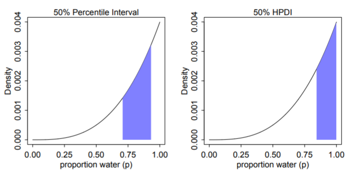

1 Statistical Rethinking
TOC
Summaries
Questions
General Notes
Chapter 2
Chapter 3 Sampling Chapter 4 Linear Models, CIs, Splines
Chapter 5 Multi-Variable Linear Models, , Diagnostic Plots, Categoricals, DAGs
Chapter 6 Colliders, Multicollinearity, Post-Treatment Bias
Chapter 7 Information Theory, Prediction Metrics, Model Comparison
Chapter 8 Interactions
Chapter 9 MCMC
Chapter 10 GLM Concepts
Chapter 11 Binomial and Poisson
Chapter 12
Chapter 13
Chapter 14
Chapter 15
Chapter 16
My Appendix
{brms} syntax and functions
{rethinking} functions
Stan code Examples
Summaries
- Ch 2
- Using counts
- Garden of forking paths - all the potential ways we can get our sample data (sequence of marbles drawn from a bag) given a hypothesis is true (e.g. 1 blue, 3 white marbles in a bag)
- “Conjectures” are potential outcomes (1 blue and 3 white marbles in a bag) and each conjecture is a path in the garden of forking paths
- With data, we count the number of ways (forking paths) the data is consistent with each conjecture (aka likelihood)
- With new data, old counts become a prior, and updated total path counts = prior * new path counts (i.e. prior * likelihood)
- As components of a model
- The conjecture (aka parameter value), p, with the most paths is our best guess at the truth. They’re converted to probabilities (i.e. probability of a parameter value) and now called “relative plausibilities”.
- The likelihood is a function (e.g. dbinom) that gives the probability of an observation given a parameter value (conjecture)
- Prior probabilities (or relative plausibilities) must be assigned to each unknown parameter.
- The updated relative plausibility of a conjecture, p, is the posterior probability
- posteriorp1 = (priorp1 * likelihoodp1) / sum(all prior*likelihood products for each possible value of parameter, p)
- The denominator normalizes the updated plausability so that the sum of updated plausabilities for all the parameter values is 1 (necessary to formally be a proability density)
dbinom(x, size, prob)- probability density function for the binomial distribution- x = # of observations of the event (e.g. hitting water on the globe)
- size = sample size (N) (number of tosses)
- prob = parameter value (conjecture)(i.e. hypothesized proportion of water on the earth) (p)
- Using counts
- Ch 3 - Sampling
- Sampling from the posterior
- rbinom - random variable generator of the binomial distribution
- Summarizing the posterior - mean, median, MAP, HPDI
- posterior prediction distribution
- GOF Question: If we were to make predictions about the most probable p using this model, how consistent is our model with the data?
- Answer: if the shape of the PPD matches the shape of the sampled posterior distribution, then the model is consistent with the data. (i.e. good fit)
- GOF Question: If we were to make predictions about the most probable p using this model, how consistent is our model with the data?
- Sampling from the posterior
- Ch 4 - Linear Models
- The posterior distribution is the probability density of every combination of all the parameter values
- posterior distribution: after considering every possible combination of the parameters, it’s the assigned relative plausibilities to every combination, conditional on this model and these data. (from Ch.6)
- The posterior is the joint distribution of all combinations of the parameters at the same time, Pr(parameters|outcome, predictors)
- Many posterior distributions are approximately gaussian/multivariate gaussian
- Example: intercept model
- it’s a density of every combination of value of mean and sd
- Example: Height ~ Weight
- The posterior is Pr(α, β , σ | H, W)
- which is proportional to Normal(W|μ,σ) ⨯ Normal(α|178,100) ⨯ LogNormal(β|0,1) ⨯ Uniform(σ|0,10)
- The posterior is Pr(α, β , σ | H, W)
- posterior distribution: after considering every possible combination of the parameters, it’s the assigned relative plausibilities to every combination, conditional on this model and these data. (from Ch.6)
- Intro to priors
- Model Notation
- Example single variable regression where height is the response and weight the predictor
- hi ~ Normal(μ, σ) # response
- μi = α + βxi # response mean (deterministic, i.e. no longer a parameter)
- α ~ Normal(178, 100) # intercept
- β ~ Normal(0, 10) # slope
- σ ~ Uniform(0, 50) # response s.d.
- parameters are α, β, and σ
- Example single variable regression where height is the response and weight the predictor
- Centering/standardization of predictors can remove correlation between parameters
- Without this transformation, parameters and their uncertainties will co-vary within the posterior distribution
- e.g. high intercepts will often mean high slopes
- Without independent parameters
- They can’t be interpreted independently
- Effects on prediction aren’t independent
- Without this transformation, parameters and their uncertainties will co-vary within the posterior distribution
- CIs, PIs
- basis splines (aka b-splines)
- The posterior distribution is the probability density of every combination of all the parameter values
- Ch 5 - Multi-Variable Linear Models
- Model Notation
- DivorceRatei ~ Normal(μi, σ)
- μi = α + β1MedianAgeMarriage_si + β2MarriageRate_si
- α ~ Normal(10, 10)
- β1 ~ Normal(0, 1)
- β2 ~ Normal(0, 1)
- σ ~ Uniform(0, 10)
- Interpretation
- DAGs
- Inferential Plots
- predictor residual, counter-factual, and posterior prediction
- masking
- correlation between predictors and opposite sign correlation of each with the outcome variable can lead increased estimated effects in a multi-regression as compared to individual bivariable regressions
- categorical variables (not ordinals)
- Using an index variable is preferred to dummy variables
- the index method allows the priors for each category to have the same uncertainty
- no intercepts used in the model specifications
- Contrasts
- Using an index variable is preferred to dummy variables
- Model Notation
- Ch 6 - Colliders, Multicollinearity, Post-Treatment Bias
- multicollinearity
- Consequences
- the posterior distribution will seem to suggest that none of the collinear variables is reliably associated with the outcome, even if all of the collinear variables are in reality strongly associated with the outcome.
- The posterior distributions of the parameter estimates will have very large spreads (std.devs)
- i.e. parameter mean estimates shrink and their std.devs inflate as compared to the bivariate regression results.
- predictions won’t be biased but interpretation of effects will be impossible
- the posterior distribution will seem to suggest that none of the collinear variables is reliably associated with the outcome, even if all of the collinear variables are in reality strongly associated with the outcome.
- solutions
- Think causally about what links the collinear variables and regress using that variable instead of the collinear ones
- Use data reduction methods
- Consequences
- post-treatment bias
- mistaken inferences arising from including variables that are consequences of other variables
- i.e. the values of the variable are a result after treatment has been applied
- e.g. using presence of fungus as a predictor even though it’s value is determined after the anti-fungus treatment has been applied
- Consequence: it can mask or unmask treatment effects depending the causal model (DAG)
- mistaken inferences arising from including variables that are consequences of other variables
- collider bias
- When you condition on a collider, it induces statistical—but not necessarily causal— associations.
- Consequence:
- The statistical correlations/associations are present in the data and may mislead us into thinking they are causal.
- Although, the variables involved may be useful for predictive models as the backdoor paths do provide valid information about statistical associations within the data.
- Depending on the causal model, these induced effects can be inflated
- The statistical correlations/associations are present in the data and may mislead us into thinking they are causal.
- A more complicated demonstration of Simpson’s Paradox (see My Appendix)
- Applications of Backdoor Criterion
- See Causal Inference note
- Recipe
- List all of the paths connecting X (the potential cause of interest) and Y (the outcome).
- Classify each path by whether it is open or closed. A path is open unless it contains a collider.
- Classify each path by whether it is a backdoor path. A backdoor path has an arrow entering X.
- If there are any backdoor paths that are also open, decide which variable(s) to condition on to close it.
- multicollinearity
- Ch 7 - Information Theory, Prediction Metrics, Model Comparison
- Regularizing prior (type of skeptical prior)
- Typicall priors with smaller sd values
- Flat priors result in a posterior that encodes as much of the training sample as possible. (i.e. overfitting)
- When tuned properly, reduces overfitting while still allowing the model to learn the regular features of a sample.
- Too skeptical (i.e. sd too small) results in underfitting
- Information Entropy
- The uncertainty contained in a probability distribution is the average log-probability of an event.
- Kullback-Leibler Divergence (K-L Divergence)
- The additional uncertainty induced by using probabilities from one distribution to describe another distribution.
- Log Pointwise Predictive Density (lppd)
- Sum of the log average probabilities
- larger is better
- The log average probability is an approximation of information entropy
- Sum of the log average probabilities
- Deviance
- -2*lppd
- smaller is better
- An approximation for the K-L divergence
- -2*lppd
- Predictive accuracy metrics Can’t use any information criteria prediction metrics to compare models with different likelihood functions
- Pareto-Smoothed Importance Sampling Cross-Validation (PSIS)
- Estimates out-of-sample LOO-CV lppd
- loo pkg
- “elpd_loo” - larger is better
- “looic” - is just (-2 * elpd_loo) to convert it to the deviance scale, therefore smaller is better
- Rethinking pkg: smaller is better
- loo pkg
- Weights observations based on influence on the posterior
- Uses highly influential observations to formulate a pareto distribution and sample from it(?)
- Estimates out-of-sample LOO-CV lppd
- Widely Applicable Information Criterion (WAIC)
- Deviance with a penalty term based on the variance of the outcome variable’s observation-level log-probabilities from the posterior
- Estimates out-of-sample deviance
- loo pkg:
- “elpd_waic”: larger is better
- “waic”: is just (-2 * elpd_waic) to convert it to deviance scale, therefore smaller is better
- Rethinking pkg: smaller is better
- loo pkg:
- Bayes Factor
- The ratio (or difference when logged) of the average likelihoods (the denominator of bayes theorem) of two models.
- Pareto-Smoothed Importance Sampling Cross-Validation (PSIS)
- Model Comparison
- To judge whether two models are “easy to distinguish” (i.e. kinda like whether their scores are statistically different), we look at the differences between the model with the best WAIC and the WAICs of the other models along with the standard error of the difference of the WAIC scores
- Leave-one-out cross-validation (LOO-CV)
- Has serious issues, I think (see Vehtari paper for recommendations, (haven’t read it yet))
- Outliers
- Detection - High p_waic (WAIC) and k (PSIS) values can indicate outliers
- Solutions
- Mixture Model
- Robust Regression using t-distribution for outcome variable. As shape parameter, v, approaches 1+, tails become thicker.
- Regularizing prior (type of skeptical prior)
- Ch 8 - Interactions
- continuous:categorical interaction
- Coded similarly to coding categoricals (index method)
- continuous:continuous interaction
- Coded very similar to the traditional R formula
- Interaction prior is the same as the variables used in the interaction
- Plots
- A counterfactual plot can be used to show the reverse of the typical interaction interpretation (i.e. association of continuous predictor conditioned on the categorical)
- Triptych plots are a type of facetted predictor (one of the interaction variables) vs fitted graph where you facet by bins, quantiles, levels of the other interaction variable
- continuous:categorical interaction
- Ch 9 - MCMC
- Gibbs
- Optimizes sampling the joint posterior density by using conjugate priors
- Inefficient for complex models
- Can’t discern bad chains as well as HMC
- Hamiltonian Monte Carlo (HMC)
- Uses Hamiltonian differential equations in a particle physics simulation to sample the joint posterior density
- Momentum and direction are randomly chosen
- Hyperparameters
- Used to reduce autocorrelation of the sampling (sampling is sequential) (U-Turn Problem)
- Determined during warm-up in HMC
- Stan uses NUTS2
- Leapfrog steps (L) - paths between sampled posterior value combinations are made up of leapfrog steps
- Step Size (ε) - The length of a leapfrog step is the step size
- Uses Hamiltonian differential equations in a particle physics simulation to sample the joint posterior density
- Diagnostics
- Effective Sample Size (ESS) - Measures the amount by which autocorrelation in samples increases uncertainty (standard errors) relative to an independent sample
- Bulk_ESS - effective sample size around the bulk of the posterior (i.e. around the mean or median)
- When value is much lower than the actual number of iterations (minus warmup) of your chains, it means the chain is inefficient, but possibly still okay
- Tail_ESS - effective sample size in the tails of the posterior
- No idea what’s good here.
- Bulk_ESS - effective sample size around the bulk of the posterior (i.e. around the mean or median)
- Rhat (Gelman-Rubin convergence diagnostic) - estimate of the convergence of Markov chains to the target distribution
- If converges, Rhat = 1+
- If value is above 1.00, it usually indicates that the chain has not yet converged, and probably you shouldn’t trust the samples.
- Early versions of this diagnostic can fail for more complex models (i.e. bad chains even when value = 1)
- Trace Plots
- Multi-line plot depicting the sampling of parameter values in the joint posterior
- lazy, fat caterpillars = good chains
- Not recommended since 1 pathological chain can remain hidden in the plot
- Trank plots
- A layered histogram method that is easier to discern each chain’s health than using trace plots
- Effective Sample Size (ESS) - Measures the amount by which autocorrelation in samples increases uncertainty (standard errors) relative to an independent sample
- Set-up
- Warm-up samples
- More complex models require more warm-up
- Start will default and adjust based on ESS values
- Post-Warmup samples
- 200 for mean estimates using not-too-complex regression models
- Much moar required for
- Complex models
- Finer resolution of the tails
- Non-Gaussian distributions
- Chains
- debugging: 1
- Some stan errors only display when 1 chain is used
- Validation of chains: 3 or 4
- Final Run: only need 1 but can use more depending on compute power/# of vCPUs
- debugging: 1
- Warm-up samples
- Problems with ugly chains in trace/trank plots
- Solutions for the 2 Examples were to use weakly informative priors ¯\_(ツ)_/¯
- Gibbs
- Ch 10 - GLM Concepts
- The principle of maximum entropy provides an empirically successful way to choose likelihood functions. Information entropy is essentially a measure of the number of ways a distribution can arise, according to stated assumptions. By choosing the distribution with the biggest information entropy, we thereby choose a distribution that obeys the constraints on outcome variables, without importing additional assumptions. Generalized linear models arise naturally from this approach, as extensions of the linear models in previous chapters.
- The maximum entropy distribution is the one with the greatest information entropy (i.e. log number of ways per event) and is the most plausible distribution.
- No guarantee that this is the best probability distribution for the real problem you are analyzing. But there is a guarantee that no other distribution more conservatively reflects your assumptions.
- maximum entropy also provides a way to generate a more informative prior that embodies the background information, while assuming as little else as possible.
- Omitted variable bias can have worse effects with GLMs
- Gaussian
- A perfectly uniform distribution would have infinite variance, in fact. So the variance constraint is actually a severe constraint, forcing the high-probability portion of the distribution to a small area around the mean.
- The Gaussian distribution gets its shape by being as spread out as possible for a distribution with fixed variance.
- The Gaussian distribution is the most conservative distribution for a continuous outcome variable with finite variance.
- The mean µ doesn’t matter here, because entropy doesn’t depend upon location, just shape.
- Binomial
- Binomial distribution has the largest entropy of any distribution that satisfies these constraints:
- only two unordered events (i.e. dichotomous)
- constant expected value (i.e. exp_val = sum(prob*num_events))
- If only two un-ordered outcomes are possible and you think the process generating them is invariant in time—so that the expected value remains constant at each combination of predictor values— then the distribution that is most conservative is the binomial.
- Binomial distribution has the largest entropy of any distribution that satisfies these constraints:
- Other distributions
- Ch 11
- Logistic Regression models a 0/1 outcome and data is at the case level
- Example: Acceptance, A; Gender, G; Department, D Ai ~ Bernoulli(pi) logit(pi) = α[Gi, Di]
- Binomial Regression models the counts of a Bernoulli variable that have been aggregated by some group variable(s)
- Example: Acceptance counts that have been aggregated by department and gender Ai ~ Binomial(Ni, pi) logit(pi) = α[Gi, Di]
- Results are the same no matter whether you choose to fit a logistic regression with case-level data or aggregate the case-level data into counts and fit a binomial regression
- brms models
- Logistic
- family = bernouilli
- formula: outcome_var|trials(1)
- Binomial:
- family = binomial
- formula
- balanced: outcome_var|trials(group_n)
- unbalanced: outcome_var|trials(vector_with_n_for_each_group)
- Logistic
- rstanarm models specified just like using glm
- Flat Normal priors for logistic or binomial do NOT have high sds. High sds say that outcome event probability is always close to 0 or close 1.
- For flat intercept: sd = 1.5
- For flat slope: sd = 1.0
- See Bayes, priors for details on other options
- Effects
- Types
- Absolute Effects - The effect of a (counter-factual) change in predictor value (type of treatment) has on the outcome (probability of an event)
- Contrast of the predicted values (e.g. marginal means)
- Relative Effects - The effect of a (counter-factual) change in predictor value (type of treatment) has on the outcome (odds of an event)
- Absolute Effects - The effect of a (counter-factual) change in predictor value (type of treatment) has on the outcome (probability of an event)
- Types
- UC Berkeley gender discrimination analysis
- Typical pipe DAG for many social science analyses where unobserved confounders are often an issue
- Also see Causal Inference >>
- Misc >> Partial Identification
- Mediation Analysis
- Poisson - when N is very large and probability of an event, p, is very small, then expected value and variance are approximately the same. The shape of this distribution is the Poisson
- Flat Normal priors for Poisson also do NOT have high sds
- Not sure if these are standard flat priors, but the priors in the Example were
- Intercept sd = 0.5
- Slope sd = 0.2
- Not sure if these are standard flat priors, but the priors in the Example were
- Logistic Regression models a 0/1 outcome and data is at the case level
Questions
- Ch 2
- In Ch2, there are couple times where McElreath is talking about differences between Bayesian and Frequentist approaches in the terms of the subjective choices that are made by each. For Bayesians, it’s the choice of prior, and for Frequentists, it’s the choice of “estimator.” Does anybody know exactly what he’s means when he says “estimator?” My intuition is that he’s talking about something like MLE, but I don’t see how that would be a subjective choice in the same vein as the choice of prior would be.
- “choice of estimator” keeps being referred to — what exactly is he talking about?
- Sample size and reliable inference (pg 31)
- “A Bayesian golem must choose an initial plausibility, and a non-Bayesian golem must choose an estimator.”
- prior, prior, pants of fire (pg 36)
- non-Bayesian procedures need to make choices that Bayesian ones do not, such as choice of estimator or likelihood penalty
- Sample size and reliable inference (pg 31)
- Ch 3
- Posterior Predictive Distribution
- weighted frequency average blah blah blah isn’t completely clear to me, so how is this calculation actually done
- pr = prob of a param value (or conjecture) from sampled posterior density
- W = total count for a value of W for all the trials for given param value
- cn = number of conjectures
- wn = number of possible count of W for each trial
- weighted frequency average for W = 4 is [(prc1 * W4c1) + (prc2 * W4c2) + …. + (prcn * W4cn)] / cn
- these are counts unlike the posterior density
- therefore maybe the shape is dependent on “size”?
- weighted frequency average blah blah blah isn’t completely clear to me, so how is this calculation actually done
- Thought: likelihood is the probability of a conjecture given the data then the denominator “standardizes” that probability in terms of the other likelihoods. This standardized probability is the proportion of the updated posterior probability density that is attributable to this conjecture.
- actually it would need to be the whole thing (i.e. the whole quantity calc’d in bayes theorem) but I think that’s what it is. And these must all be additive, or maybe not additive but the integral from p = whatever to p = whatever
- enjoyed the fig. looking at in reverse helped me think about the posterior density and bayes equation. The standardizing of the likelihoods for a particular parameter value is the proportion it attributes to the density.
- Posterior Predictive Distribution
- Ch 4
- Thoughts
- The likelihood, prior, and posterior densities are probability densities each with an area = 1. Looking at the marble tables it looks like the individual posterior probabilities sum to 1. So, the sum (we’re talking densities so probably this “sum” = integration actually) of all the products of the multiiplication of the prior and likelihood densities must not have an area = 1. Therefore, the denominator (i.e. sum of products) then standardizes these products so the posterior density does have an area of 1.
- Would this make the posterior a joint density of parameter combinations (aka conjectures)? It does (pg 96)
- ?
- extracting samples from the posterior: “it uses the variance-covariance matrix and coefficients to define a multivariate Gaussian posterior to draw n samples from.”
- how does this work?
- bottom page 101
- can’t find the code
- how does this work?
- extracting samples from the posterior: “it uses the variance-covariance matrix and coefficients to define a multivariate Gaussian posterior to draw n samples from.”
- Thoughts
- Ch 7
- dgp
yi ∼ Normal(µi , 1) µi = (0.15)x1,i − (0.4)x2,i
The first model, with 1 free parameter to estimate, is just a linear regression with an unknown mean and fixed σ = 1. Each parameter added to the model adds a predictor variable and its beta-coefficient. Since the “true” model has non-zero coefficients for only the first two predictors, we can say that the true model has 3 parameters
- Doesn’t makes sense when he says WAIC and CV are trying to predict different things.
- although their equations for lppd are slightly different. BUT they’re both lppd. So is the difference just a typo?
- His interpretation of WAIC having better accuracy of out-of-sample deviance doesn’t make sense. We have no true deviance value. I mean if its an estimate of the K-L divergence, does that mean the true deviance value is supposed to zero at 3 parameters.
- “WAIC is unsurprisingly a little better at predicting out-of-sample deviance, because that is what it aims to predict. Cross-validation (CV) is a trick that estimates out-of-sample deviance as the sample size increases, but it doesn’t aim for the right target at small sample sizes. And since PSIS approximates CV, it has the same issue.”
- “CV and PSIS have higher variance as estimators of the K-L Divergence, and so we should expect WAIC to be better in many cases.”
- dgp
- Ch 8
- pg 246 First he scales the predictor by dividing by the max, because 0 is meaningful. Then he centers it by subtracting the mean from it, because he wants to be able to define the prior more easily.
- I haven’t thought much about this but what’s the interpretation here? Is it in sd units still even though it’s scaled by the max?
- doubtful
- Maybe Gelman’s book has something
- Instead of scaling a centered value (standardization), he centered a scaled value. So the answer is how does a centered value get interpreted?
- Does the order of operations matter here?
- Yes. Depends when the mean is taken. Is it taken on the scaled value or the original scale value
- for a unit increase above the mean value, the outcome variable increases by
amount. The intercept is the value of the outcome when the predictor is held at its mean. - The mean value is some value between 0 and 1 where 1 is the maximum
- Whats a unit in this case? 0.1?
- Does the order of operations matter here?
- I haven’t thought much about this but what’s the interpretation here? Is it in sd units still even though it’s scaled by the max?
- 8.3.2 pg 259
- He sets intercept prior to have range that has 5% of the mass outside the possible range of the outcome variable. Why have a potential for values outside the range at all?
- He says, “the goals here are to assign weakly informative priors to discourage overfitting”
- How does this match up with “flat priors encourage overfitting?” Is a conservative/skeptical prior considered a weakly informative prior?
- Does centering or scaling affect these prior values, I think so (because thats why we do it). Therefore may negative values are possible? 0 is no longer the base in a standardized variable. It’s the mean.
- pg 246 First he scales the predictor by dividing by the max, because 0 is meaningful. Then he centers it by subtracting the mean from it, because he wants to be able to define the prior more easily.
- Ch 9
- pg 288 Talks about having more than 2000 effective samples and them being anti-correlated. Plus Stan uses an adaptive sampler. Guess this nut2, but he uses “adaptive” which makes me think of the gibb sampler. Whole paragraph is confusing to me.
- Maybe correlation has something to do with the “effective” part and whatever anti-correlation is makes this number go beyond 2000 samples (the default setting that was used)
- pg 288 Talks about having more than 2000 effective samples and them being anti-correlated. Plus Stan uses an adaptive sampler. Guess this nut2, but he uses “adaptive” which makes me think of the gibb sampler. Whole paragraph is confusing to me.
- Ch 10
- pg 312 “This reveals that the distribution that maximizes entropy is also the distribution that minimizes the information distance from the prior, among distributions consistent with the constraints”.
- Doesn’t make sense to me by looking at the equation, since the larger the log difference (ie distance) between pi and qi, larger the entropy (greater positive value).
- Think I might be misunderstanding “the distribution that minimizes the information distance from the prior”. Maybe that’s not referring to the log distance.
- redo log diff calcs to make sure
- solution: The key is “consistent with constraints.” If you just choose a couple far-away pi vs pi that are close to q, then the reverse of the statement is true. But if you have a constraint, such as pis must sum to 1, then his statement is true.
- pg 312 “This reveals that the distribution that maximizes entropy is also the distribution that minimizes the information distance from the prior, among distributions consistent with the constraints”.
- Ch 11
- pg 352 He shows how Department could be a collider and therefore conditioning on it would open a backdoor path. But NOT conditioning on Department allows the backdoor fork path to remain open. What the solution? Find another variable that somehow disrupts the fork?
General Notes
- Workflows
- 8.3.2 pg 258
- scale and/or center outcome and predictors so that priors are more easily specified
- Reason through the values of the priors for each parameter according the range of values of the predictor and outcome
- fit models
- plot posterior parameters
- plot prior predictive simulations
- 8.3.2 pg 258
- Differences between Bayesian and Frequentist
- Parameter estimation
- Bayesian Updating - Count the number of ways a parameter value can result in seeing the data sample. The parameter value that can happen the greatest number of ways is the parameter estimate. With new data, the count is updated and a new parameter estimate is chosen.
- Domain knowledge (prior formulation) can be used to help the model learn
- With posteriors, it is easy to visualize the most plausible values for the parameters and quantify any uncertainty in our estimates.
- prior-to-posterior cycle provides a principled way to update the parameters if additional observations become available.
- Frequentism - Whole model must be re-fitted
- Bayesian Updating - Count the number of ways a parameter value can result in seeing the data sample. The parameter value that can happen the greatest number of ways is the parameter estimate. With new data, the count is updated and a new parameter estimate is chosen.
- Sample Size
- Important choices for small sample sizes that effect the GOF:
- Bayesian choose a prior distribution of the parameter of interest.
- Frequentists choose an estimator
- Any rules you’ve been taught about minimum sample sizes for inference are just non-Bayesian superstitions. If you get the prior back, then the data aren’t enough.
- Bayesian updating produces valid estimates at any sample size
- Frequentism - e.g. around n = 30 for Guassian distribution, etc.
- Bayesian inference is agnostic to any pre-specified sample size and is not really affected by how frequently you look at the data along the way (see article linked in Sample Size >> Bayesian)
- A bayesian power analysis to calculate a desired sample size entails using the posterior distribution probability threshold (or another criteria such as the variance of the posterior distribution or the length of the 95% credible interval)
- Important choices for small sample sizes that effect the GOF:
- Point Estimates
- Bayesian - The parameter distribution is the estimate.
- Summaries of the distribution (mean, mode, etc.) can be calculated from that distribution, but the whole distribution is what is reported and used for any subsequent calculations.
- Frequentist - Point estimates are calculated - usually the mean. (median would probably require a different model)
- Bayesian - The parameter distribution is the estimate.
- Confidence Intervals
- Bayesian - the alpha used is chosen according to the use-case. 95% CIs aren’t relevant for Bayesian inference because significance testing (e.g. p-values) on the effect size isn’t done in Bayes. CIs are used as part of the summary of the distribution.
- Frequentist - t-tests then p-values are calculated to determine whether 0 is contained in the interval.
- For a Bayesian, there is no choice of estimator.(?) It’s always the posterior distribution.
- I think this refers to the optimization procedure like least squares or negloglikelihood or maybe numerical methods of optimizing the parameters. While a Bayesian only uses the Bayes equation to solve for the posterior distribution.
- Frequentists make inferences about parameters directly through a sampling distribution but for Bayesians the posterior distribution is not sampled but deduced logically and then samples are taken from the posterior to aid in inference.
- Uncertainty
- Frequentist: probabilities are tied to countable events and their frequencies in very large samples. Measurement uncertainty is therefore based on imaginary resamplings where the measurement values eventually would reveal a pattern. The distribution of these imaginary measurements (e.g. means, model estimates, etc) is called the sampling distribution. Frequentist uncertainty is about the randomness in a measurement.
- Bayesian: Uncertainty is a property of having incomplete information. It’s not an inherent property of the real world.
- Hypothesis vs Data
- Frequentist: The hypothesis or state of the world is fixed and data are variable. Meaning a hypothesis is either true or false and the data you collected is a sample. This sample is one of many different potential samples you could’ve collected from the population (distribution).
- Bayesian: The hypothesis is variable and the data is fixed. There are many different hypotheses, and the question is which one is most plausible given this data. The data isn’t thought of as a portion of the all the data. It’s what does this data say about the plausibility of all the potential hypotheses.
- From Post-Hoc Analysis note
- Frequentist null hypothesis significance testing (NHST) determines the probability of the data given a null hypothesis (i.e. P(data|H), yielding results that are often unwieldy, phrased as the probability of rejecting the null if it is true (hence all that talk of “null worlds” earlier). In contrast, Bayesian analysis determines the probability of a hypothesis given the data (i.e.P(H|data)), resulting in probabilities that are directly interpretable.
- Simulation of predictions
- Bayesians models are always generative (i.e. capable of simulating predictions, aka dummy data)
- Some Frequentist models are generative and others are not.
- Many frequentist models have bayesian counterparts and vice versa
- The Bayesian interpretation of a non-Bayesian procedure recasts assumptions in terms of information, and this can be very useful for understanding why a procedure works.
- A Bayesian model can be embodied in a more efficient, but approximate, non-Bayesian procedure. Bayesian inference means approximating the posterior distribution. It does not specify how that approximation is done.
- Parameter estimation
- Similarities between Bayesian and Frequentist
- Dependence on the likelihood function and the assumptions involved in selecting this function.
- Various Bayes’ Theorem formulations
(chapter 2)
where
- Pr(w)( also referred to as a Marginal Probability) averages the likelihood over the prior. The integral is how you calculate an average over a continuous distribution of values (e.g. all possible prior values). Pr(w)’s job is to standardize the posterior (i.e. values between 0 and 1)
- This says the probability of the parameter given the data is equal to the likelihood x the prior (which is standardized by the average likelihood to make it a probability).
Using the model definition for human heights Example (pg 83):
- for height, hi ~ Normal(μ, σ), μ ~ Normal(178, 20), σ ~ Uniform(0,50)
- In the numerator, the likelihood for each height x priors are multiplied together to get a joint likelihood across all the data
- The denominator is the likelihood averaged over the priors in order to standardize the probability.
- Notation:
y - data (outcome and predictors)
θ - parameters
p(y, θ) - joint probability distribution of the data and parameters
- What STAN is fitting in the background. Fits all the parameters all at once.
p(θ) - prior probability distribution - the probability of the parameters before any data are observed
p(θ | y) - posterior probability distribution - the probability of the parameters conditional on the data (i.e. after seeing the data)
p(y | θ)
- If y is fixed, this is the likelihood function (when you’re fitting your model)
- If θ is fixed, this is the sampling distribution (when your model is fitted and the parameters are estimated)
- Used to make predictions on unseen data
When describing the likelihood for a Binomial Distribution, these two notations are equivalent, , where W is the variable of interest (e.g. count of heads after n coin flips with a p probability of heads) and n and p are the parameters of the Binomial distribution.
p( ) or f( ) denotes probability densities (continuous distributions)
Pr( ) denotes probability masses (discrete distributions)
Bayesians often write the Gaussian probability density as :
- where (aka the precision)
Model Definitions
- Example: Globe tossing
- w ~ Binomial (n, p)
- p ~ Uniform (0, 1)
- “The count w is distributed binomially with sample size n and probability p. The prior for p is assumed to be uniform between 0 and 1.”
- A Uniform prior is often called a “flat prior.”
- Example single variable regression where height is the outcome and weight the predictor
- hi ~ Normal(μ, σ)
- μi = α + βxi
- α ~ Normal(178, 100)
- β ~ Normal(0, 10)
- σ ~ Uniform(0, 50)
- hi is the likelihood and ui is the linear model (now deterministic, not a parameter). The rest of the definitions are for priors.
- Multivariate notation with Divorce Rate as the outcome and state median age of marriage and state marriage rate as predictors
- Divorcei ~ Normal(μi, σ)
- μi = α + β1MedianAgeMarriage_si + β2Marriage_si
- α ~ Normal(10, 10)
- β1 ~ Normal(0, 1)
- β2 ~ Normal(0, 1)
- σ ~ Uniform(0, 10)
- The s signifies the variable has been standardized.
- General Multilevel Model: yi ~ D( f (ηi), θ)
- η represents any linear predictor, α + βxi
- f represents any inverse link function
- Example: Globe tossing
- Misc
- The demarcation between science and not-science is not falsifying a null hypothesis. All null hypotheses are false. There is never nothing happening. There’s always an effect. It’s just whether we have enough data to be able to measure it. It’s about falsifying a research hypothesis.
- BUGS (Bayesian models using Gibbs sampling) - project in the 1980s to get Bayesian models on desktop computers.
- From a Stephen Senn post on meta-analysis, standard errors, and point estimates:
-
- and
-
1.1 Chapter 2
- 1 blue marble is drawn from the bag and replaced. The bag is shaken, and a white marble is drawn and replaced. Finally, the bag is shaken, and a blue marble is drawn and replaced
.png)
- each ring is a iid observation (bag shaken and a marble drawn and replaced)
- In this Example, the “garden of forking paths” is set of all potential draws (consisting of 3 observations), given the conjecture of there being 1 blue and 3 white marbles in the bag
.png)
- If we actually do draw a marble, record the observation, replace the marble, repeat 2 more times, and the result is blue, white, blue, then these are the number of paths in each conjecture’s garden that are consistent with that outcome
- For conjecture 1 blue, 3 white, 1, 3, 1 is the number of paths in each ring, respectively, that remain consistent with the sequence of recorded observations.
- When multiplied together, the product equals the total consistent paths.
.png)
- After the bag is shaken, a new marble is drawn (new data) — it’s blue. Previous counts are now the prior.
- The ways this new blue marble can be drawn, given a conjecture, is used to update each prior count through multiplication.
- This is equivalent to starting over and drawing another marble after the previous 3 iid observations.
- The plausibility of a conjecture, p1, is the prior plausibility given p1 * new count given p1 and then that product is standardized into a probability so that it is comparable.
- plausibilityp1 = (new_countsp1 *prior_plausibilityp1) / sum of all the (prior*new) products of the other conjectures
- It’s the probability of the conjecture given the new data
- The plausibility of a conjecture, p, after seeing new evidence, Dnew, is proportional to the ways the conjecture, p, can produce the new evidence, Dnew, times the prior plausibility of the conjecture, p.
- Equivalents:
plausibility of p after Dnew ways p can produce Dnew x prior plausibility of p
-
- sum of products = sum of the WAYS of each conjecture. For Conjecture 0 blues = 0 ways, Conjecture 1 blue = 3 ways (see above), Conjecture 2 blues = 8 ways, Conjecture 3 blues = 9 ways, Conjecture of 4 blues = 0. Therefore sum of products = 20.
- if the prior plausibility of p for conjecture of 1 blue marble = 1 (and the rest of the conjectures, i.e. flat prior), then plausibility of conjecture 1 blue = (3*1)/20 = 0.15. The plausibility is a way to normalize the counts to be between 0 and 1.
.png)
- Equivalents:
- A conjectured proportion of blue marbles, p, is usually called a parameter value. It’s just a way of indexing possible explanations of the data
- Here p, proportion of surface water, is the unknown parameter, but the conjecture could also be other things like sample size, treatment effect, group variation, etc.
- There can also be multiple unknown parameters for the likelihood to consider.
- Every parameter must have a corresponding prior probability assigned to it.
- The relative number of ways that a value p can produce the data is usually called a likelihood.
- It is derived by the enumerating all the possible data sequences that could have happened and then eliminating those sequences inconsistent with the data (i.e. paths_consistent_with_data / total_paths).
- As a model component, the likelihood is a function that gives the probability of an observation given a parameter value (conjecture)
- “how likely your sample data is out of all sample data of the same length?”
- Example (the proportion of water to land on the earth):
- W is distributed Binomially with N trials and a probability of p for W in each trial,
- “The count of ‘water’ observations (finger landing on water), W, is distributed binomially, with probability p of ‘water’ on each toss of a globe and N tosses in total.”
- L(p | W, N) is another likelihood notation
- Assumptions:
- Observations are independent of each other
- The probability of observation of W (water) is the same for every observation
dbinom(x, size, prob)- x = # of observations of water (W)
- size = sample size (N) (number of tosses)
- prob = parameter value (conjecture)(i.e. hypothesized proportion of water on the earth) (p)
- The prior plausibility of any specific p is usually called the prior probability.
- A distribution initial plausibilities for every value of a parameter
- Expresses prior knowledge about a parameter and constrains estimates to reasonable ranges
- Unless there’s already strong evidence for using a particular prior, multiple priors should be tried to see how sensitive the estimates are to the choice of a prior
- Example where the prior is a probability distribution for the parameter:
- p is distributed Uniformly between 0 and 1, (i.e. each conjecture is equally likely)
- Weakly Informative or Regularizing priors: conservative; guards against inferences of strong association
- mathematically equivalent to penalized likelihood
- The new, updated relative plausibility of a specific p is called the posterior probability.
- The set of estimates, aka relative plausibilities of different parameter values, aka posterior probabilities, conditional on the data — is known as the posterior distribution or posterior density (e.g. Pr(p | N, W)).
- Thoughts
- The likelihood, prior, and posterior densities are probability densities each with an area = 1. Looking at the marble tables it looks like the individual posterior probabilities sum to 1. So, the sum (we’re talking densities so this “sum” = integration actually) of all the products of the multiiplication of the prior and likelihood densities must not have an area = 1. Therefore, the denominator (i.e. sum of products) then standardizes each of these products so the posterior density does have an area of 1.
- Numerical Solvers for the posterior distribution:
- Grid Approximation - compute the posterior distribution from only a portion of potential values (the grid of parameter values) for a set of unknown parameters
- Doesn’t scale well as the number of parameters grows
- Steps:
- Decide how many values you want to use in your grid (e.g.
seq( from = 0, to = 1, len = 1000))- number of parameter values in your grid is equal to the number of points in your posterior distribution
- Compute the prior value for each parameter value in your grid (e.g.
rep(1, 1000), uniform prior) - Compute the likelihood (e.g. using
dbinom(x, size, p = grid))for each grid value - Multiply the likelihood times the prior which is the unstandardized posterior
- Standardize that posterior by dividing by
sum(unstd_posterior)
- Decide how many values you want to use in your grid (e.g.
- Quadratic approximation - the posterior distribution can be represented by the Gaussian distribution quite well. The log of a Gaussian (posterior) distribution is quadratic.
- Steps:
- Find the mode of the posterior. Uses quadratic approximation. With a uniform prior this is equivalent to MLE
- Estimate the curvature of the posterior using another numerical method
- Needs larger sample sizes. How large is model dependent.
- Rethinking pkg function,
quap( )- inputs are likelihood function (e.g. dbinom) and prior function (e.g. punif), and data for the likelihood function
- outputs mean posterior probability and the std dev of the posterior distribution
- Steps:
- MCMC only briefly mentioned
- Grid Approximation - compute the posterior distribution from only a portion of potential values (the grid of parameter values) for a set of unknown parameters
1.2 Chapter 3 - Sampling
- Sampling from the posterior distribution means we can work with counts (easier, more intuitive) instead of working with the density which is working with integrals. Plus MCMC results are count based.
- Sampling from the posterior density:
samples <- sample(parameter values vector, prob = posterior density from output of model, size = # of samples you want, replace = T)- parameter values are the conjectures,
- posterior is their likelihood x prior,
- Grid Approximation for 1 parameter:
- Sampling from the posterior density:
p_grid <- seq( from=0, to=1, length.out=1000) # parameter values vector
prior <- rep(1,1000) # repeat 1 a thousand times to create a flat prior
likelihood <- dbinom(3, size = 3, prob=p_grid) # plausibility of 3 events out of 3 observations for each each conjectured parameter value
posterior_unstd <- likelihood * prior
posterior <- posterior_unstd / sum(posterior_unstd)
# sampling the posterior density
samples <- sample(p_grid, prob = posterior, size = 10000, replace = T)size is how many samples we’re taking
(See stat.rethinking brms recode bkmk for ggplot graphs and dplyr code)
Common questions to ask about the posterior distribution
- How much of the posterior probability lies below some parameter value?
- Example: Whats the posterior probability that the proportion of water on the globe is below 0.50?
- Answer:
sum(samples < 0.50) / total_samples(= 1e4, see above)- “/total sample” is the procedure if there are 1 or more parameters represented in the posterior density
- How much of the posterior probability is between two parameter values?
- Example: The posterior probability that the proportion of water is between 0.50 and 0.75?
- Answer:
sum(samples > 0.50 & samples < 0.75) / total_samples
- **
sum()of posterior samples gives probability for a specified parameter value ** - **
quantile()of posterior samples gives the parameter value for a specified probability ** - Which parameter value marks the lower 5% of the posterior probability?
- i.e. which proportion of water has a 5% probability?
- Answer:
quantile(samples, 0.05)
- Which range of parameter values contains the middle 80% of the posterior probability?
- Defined as the Percentile Interval (PI)
- Frequentist CIs are normally percentile intervals, just of the sampling distribution instead of the posterior
- Fine in practice for the most part, but bad for highly skewed posterior distributions as it’s not guaranteed to contain the most probable value.. In such cases use HPDI (see below).
- If you do have an a posterior that’s highly skewed, make sure to also report the entire distribution.
- Defined as the Percentile Interval (PI)
- Which range of proportions of water is the true value likely to be in with a 80% probability?
- Answer:
quantile(samples, c( 0.10, 0.90))
- Answer:
- Which parameter value has the highest posterior probability?
- Answer: the MAP (see below)
- How much of the posterior probability lies below some parameter value?
Credible Interval - General Bayesian term that is interchangeable with confidence interval. Instead an interval of probability density or mass, it’s based on an interval of the posterior probability. If choice of interval (percentile or hdpi) affects inferences being made, then also report entire posterior distribution.
Highest Posterior Density Interval (HPDI) - The narrowest interval containing the specified probability mass. Guaranteed to have the value with the highest posterior probability.
Left: 50% percentile interval assigns equal mass (25%) to both the left and right tail. As a result, it omits the most probable parameter value, p = 1.
Right: 50% HPDI finds the narrowest region with 50% of the posterior probability. Such a region always includes the most probable parameter value.
Disadvantages:
- Expensive
- Suffers from Simulation Variance (i.e. sensitive to number of samples).
- Less familiar to most audiences
See Ch 4. uncertainty section for brms code
Maximum a posteriori (MAP) - value with the highest posterior probability, aka mode of the posterior.
The choice of type of point estimate (MAP, median, mean) should depend on a loss function (e.g. L1, squared –> median, L2 aka quadratic –> mean, etc).
- If the loss is asymmetrical, e.g. cost rises exponentially as loss increases, then I think he’s saying that’s a good time to use MAP.
Dummy Data are simulated data (aka fake data) to take the place of real data.
- Uses
- Checking model fit and model behavior
- Checking the effectiveness of a research design (e.g. power analysis)
- Forecasting
dbinom(0:2, size = 2 , prob = 0.70)gives likelihoods for observing 0Ws, 1W, 2Ws for a trial with 2 flips given conjecture, p = 0.70rbinom(10, size = 2, prob = 0.70)is generating 10 data points given the conjecture (aka parameter value), p = 70%- 10 experiments (or trials) of flipping the globe twice
- output being how many Ws were observed in each experiment
- the output are dummy observations
- rbinom means its a binomial distribution, so only two possible outcomes in each trial
- size = 2 means there are 2 flips per trial and means there are to be either 2 events, 1 event, or 0 events.
- In the globe flipping Example where the event is landing on Water: 2 Water - 0 Land, 1 W - 1 L, 0 W - 2 L
- prob = 0.70 is probability (plausibility of an event) (e.g. landing on Water)
table(rbinom(100000, 2, 0.70) / 100000)is very similar to the output of dbinom above.- Increasing the size from 2 to 9 yields a distribution where the mode is around the true proportion (which would be 0.70 * 9 = 6.3 Ws)
.png)
- The sampling distribution is still wide though, so the majority of experiments don’t result in the around 6 Ws.
- Represents the “garden of forking paths” from Ch. 2
- 10 experiments (or trials) of flipping the globe twice
- Uses
Posterior Predictive Distribution (PPD)
- The PPD is the (simulated) distribution of outcome values we expect to see in the wild given this model and these data.
- Equivalent to computing all the sampling distributions for each p and then averaging (by using the posterior distribution) them together (or integrating over the posterior density). This propagates the uncertainty about p of the posterior distribution into the PPD.
.png)
- (Intuitive) Steps in creating the PPD for the globe Example
- A probability of hitting water (aka parameter value) is sampled from the posterior density (top pic)
- More likely parameter values get sampled more often
- That sampled probability is associated with a count distribution (aka sampling distribution histogram) (middle pic) where the x-axis values are possible total counts of the event after each trial.
- Each p’s sampling distribution is the distribution we’d expect to see if that p was true. (e.g. bell curve for p = 0.50)
- e.g.
rbinom(10, size = 9, prob = 0.70)where the sampled probability is 0.70, trials = 10, and 9 is the number of globe tosses per trial- Therefore, there’s a maximum of 9 events (i.e. hitting the water) possible per trial
- This count distribution (middle pic) gets sampled, and that sampled count is tallied in the PPD (bottom pic)
- e.g. if a 6 is sampled from the count distribution, it’s tallied in the PPD for the “6” on the x-axis
- Repeat (e.g. 1e4 times)
- A probability of hitting water (aka parameter value) is sampled from the posterior density (top pic)
- Computing a PPD:
rbinom(number of trials, size = number of flips per trial, prob = samples from posterior density)- these are counts unlike the posterior density
- therefore maybe the shape is dependent on “size”
- the posterior distribution is used as weights to calculate a weighted, average frequency of W observations for each trial.
- Example:
rbinom(10000, 9, samples)- For trial 1, a coin is flipped 9 times.
- The total number of heads for each trial is determined by sampling the posterior density
- Repeat another 999 times
- A vector is returned where each value is the total number of heads for that trial (e.g. length in Example = 10000)
- For trial 1, a coin is flipped 9 times.
- Example: PPD for tossing the globe
p_grid <- seq( from=0, to=1, length.out=1000) # parameter values vector
prior <- rep(1,1000) # repeat 1 a thousand times to create a flat prior
likelihood <- dbinom(6, size = 9, prob=p_grid) # plausibility of 3 events out of 3 observations for each each conjectured parameter value
posterior_unstd <- likelihood * prior
posterior <- posterior_unstd / sum(posterior_unstd)
samples <- sample(p_grid, prob = posterior, size = 1e4, replace = TRUE) # sample from posterior
ppd <- rbinom(10000, size = 9, prob = samples) # simulate observations to get the PPD
hist(ppd)- Example: brms way
b3.1 <-
brm(data = list(w = 6),
family = binomial(link = "identity"),
w | trials(9) ~ 0 + Intercept,
# this is a flat prior
prior(beta(1, 1), class = b, lb = 0, ub = 1),
iter = 5000, warmup = 1000,
seed = 3,
file = "fits/b03.01")
# sampling the posterior
f <-
fitted(b3.1,
summary = F, # says we want simulated draws and not summary stats
scale = "linear") %>% # linear outputs probabilities
as_tibble() %>%
set_names("p")
# posterior probability density (top pic)
f %>%
ggplot(aes(x = p)) +
geom_density(fill = "grey50", color = "grey50") +
annotate(geom = "text", x = .08, y = 2.5,
label = "Posterior probability") +
scale_x_continuous("probability of water",
breaks = c(0, .5, 1),
limits = 0:1) +
scale_y_continuous(NULL, breaks = NULL) +
theme(panel.grid = element_blank())
# ppd
f <-
f %>%
mutate(w = rbinom(n(), size = n_trials, prob = p))
# ppd histogram (bottom pic)
f %>%
ggplot(aes(x = w)) +
geom_histogram(binwidth = 1, center = 0,
color = "grey92", size = 1/10) +
scale_x_continuous("number of water samples",
breaks = seq(from = 0, to = 9, by = 3)) +
scale_y_continuous(NULL, breaks = NULL, limits = c(0, 5000)) +
ggtitle("Posterior predictive distribution") +
coord_cartesian(xlim = c(0, 9)) +
theme(panel.grid = element_blank())Same process is used for a Prior Predictive Distribution
- The prior distribution takes the place of the posterior density in this case
For a continuous distribution, see Ch 4 >> Prior Predictive Distribution Example
Model fit
- 2 types of uncertainty:
- predicted observation uncertainty
- even if we did know the correct conjecture, p, we wouldn’t know with certainty the outcome of the next trial, unless the correct p = 0 or p = 1.
- See histogram in previous section
- Even if the “true” conjecture (e.g. p = 0.70) is known, there is uncertainty in the count of W observations the next trial will yield.
- Sounds like this is quantified by predictive intervals (PI) given some α
- uncertainty about p
- the posterior distribution over p embodies this uncertainty.
- And this is quantified by credible intervals (CI) given some α
- predicted observation uncertainty
- GOF Question: If we were to make predictions about the most probable p using this model, how consistent is our model with the data?
- Answer: if the shape of the PPD matches the shape of the sampled posterior distribution, then the model is consistent with the data. (i.e. good fit)
- 2 types of uncertainty:
1.3 Chapter 4 - Linear Models, CIs, Splines
- Gaussian Distribution
- Good toy Example that explains the shape of a Normal distribution
- 1000 people stand at the 50 yd line and flip a coin 16 times (doesn’t seem like a lot). Tails move one step left, heads move one step right. The shape of the people after the 16 flips will be a bell curve. If you picture people zigging left and right after flips, there are more possible sequences of flips that end with the person back where they started at the 50 yd line than say, for Example, at the 30 yd line (either goal). Therefore, ending up at the 50 yd line is most probable.
- Reminds me of how there is only one way for your ear bud wires not to be tangled and many, many more ways for them to be tangled.
- 1000 people stand at the 50 yd line and flip a coin 16 times (doesn’t seem like a lot). Tails move one step left, heads move one step right. The shape of the people after the 16 flips will be a bell curve. If you picture people zigging left and right after flips, there are more possible sequences of flips that end with the person back where they started at the 50 yd line than say, for Example, at the 30 yd line (either goal). Therefore, ending up at the 50 yd line is most probable.
- Additive effects make convergence to a Gaussian inevitable - Each flip can be thought of as a fluctuation from the average of the distribution with large positive fluctuations cancelling out large negative fluctuations. The more samples taken (flips), the more opportunities for fluctuations of varying sizes and sign to be paired with a fluctuation of equal size and opposite sign , resulting in a cancellation and a final sum of zero. Therefore, normality emerges as sample sizes get larger. The speed at which the sampling distribution converges to normality depends on the underlying data generating distribution.
- Small multiplicative effects converge to a Gaussian - if the effect of interaction is a small percent (e.g. between 0 and 10% increase/decrease) then the resulting product of fluctuations converges to a Gaussian distribution as well. Small multiplicative effects can be well approximated additively.
- The log of large multiplicative effects converge to a Gaussian - if the effect of interactions is a large percent (e.g. 10-50% increase/decrease), then the product of the fluctuations are Gaussian on the log-scale (Log-Normal).
- Good toy Example that explains the shape of a Normal distribution
- See General Notes -> Notation: for the notation and syntax used in model specification
- It’s a good idea to plot your priors to get a sense of the assumptions in your model.
- Example:
curve(dunif( x, 0, 50), from = -10, to = 60)for σ ~ Uniform( 0, 50 ) constrains the σ to have a positive probability from 0 to 50 cm for a height outcome variable
- Example:
- Prior Predictive Distribution
- Priors can be previous posterior distributions, so they can be sampled in order to see the expected distribution, averaged over the priors, which is a distribution of relative plausibilities before seeing the data.
- Example: height ~ 1

sample_mu <- rnorm(1e4, 178, 20) # where mean = 178 and sigma = 20
sample_sigma <- runif(1e4, 0, 50) # bounded from 0 to 50
prior_predictive_distribution <- rnorm(1e4, sample_mu, sample_sigma) # averaging over the priors, PPD
dens(prior_predictive_distribution) # relative plausibilities before seeing dataWhat our parameter priors (mean, sd) say that we expect the height distribution to look like in the wild.
Sampling means and std devs from posterior
- regardless of sample size, a gaussian likelihood * a gaussian prior will always produce a gaussian posterior distribution for the mean
- the std.dev posterior will have a longer right tail. Smaller sample sizes = longer tail
- variances are always positive. Therefore if the estimate of the variance is near zero, There isn’t much uncertainty about how much smaller it can be because its bounded by zero, but there is no bound on the right, so the uncertainty is larger.
- **brms handles these skews fine ** because it’s posterior sampling function samples from Hamiltonian Monte Carlo (HMC) chains and not the multivariate Gaussian distribution. See Ch.8. Also Ch.9 in the brms version for modeling σ using distributional models in case of heterogeneous variances.
- Similar grid approx. code to top of Ch.3. Instead of one parameter, p, it’s the mean and standard deviation.
- Each value (a row number) that’s sampled represents one combination of potential values of the mean and standard deviation and is selected based on the posterior probability density.
- This posterior density is the joint posterior density of the mean and standard deviation
# sample posterior probability but output the row indices and not the values
sample_rows <- sample(1:nrow(posterior), size = 1e4, replace = TRUE, prob = posterior$prob)
# use sampled row indices to sample the grid values for mu and sigma
sample_mu <- posterior$mu[sample_rows]
sample_sigma <- posterior$sigma[sample_rows]
dens(sample_mu) # Often Guassian
HDPI(sample.sigma) # usually right skewed, extent depends on sample size, may want to use HDPI for CIs(See stat.rethinking brms recode bkmk for ggplot graphs and dplyr code)
Using quadratic approximation to compute the MAP for the height data
- This is actually HMC instead of quadratic. He uses a MAP function from his package in the book.
- We’re trying to find the maximum a posteriori (MAP) for μ and σ (i.e. the maximum of their posterior probabilities)
# no predictors yet, so just an intercept model
b4.1 <- brm(data = height_dat, family = gaussian,
height ~ 1,
prior = c(prior(normal(178, 20), class = Intercept),
# can use fewer iter and warm-up with a half cauchy prior
# prior(cauchy(0, 1), class = sigma)
prior(uniform(0, 50), class = sigma)),
# iter = 2000, warmup = 1000, chains = 4, cores = 4
iter = 31000, warmup = 30000, chains = 4, cores = 4,
seed = 4, backend = "cmdstanr",
)
summary(b4.1)
posterior_summary(b4.1)
post <- posterior_samples(b4.1)
plot(b4.1)- Only things to pay attention to at this point are the family, formula, and prior arguments, Think the rest of this gets covered in Ch.8.
- flat priors can require a large value in the warm-up arg because of it’s weakness
- summary shows the estimates(means) of mu (intercept) and standard deviation (sigma), standard errors, CIs (percentile) along with the model specifications
- These values are the Gaussian estimates of each parameter’s “marginal” distribution

- The marginal distribution of sigma is the distribution of the residuals
- The marginal distribution for mu means the plausibility of each value of mu, after averaging over the plausibilities of each value of sigma.
- The “averaging over” effect can be seen in the marginal distribution of sigma if you change the the prior for mu to normal(178, 0.1). The posterior estimate for mu will hardly move off the prior, but the estimate for sigma will move quite a bit from before, since the plausibilities for each value of mu changed.

- So the posterior density for sigma gets more squatted and widens with that narrow mu prior. The right tail lengthens as well.
- I think this is an Example of how the marginal distribution of sigma is affected by mu since it has been averaged over the values of mu.
- The “averaging over” effect can be seen in the marginal distribution of sigma if you change the the prior for mu to normal(178, 0.1). The posterior estimate for mu will hardly move off the prior, but the estimate for sigma will move quite a bit from before, since the plausibilities for each value of mu changed.
- These values are the Gaussian estimates of each parameter’s “marginal” distribution
posterior_summaryjust gives the estimates, errors, CIs in a matrix objectposterior_samplesextracts samples from the posterior for each parameter- extracts samples HMC chains
- also outputs the log posterior,
lp__. For details:- https://discourse.mc-stan.org/t/basic-question-what-is-lp-in-posterior-samples-of-a-brms-regression/17567/2
- https://cran.r-project.org/web/packages/rstan/vignettes/rstan.html#the-log-posterior-function-and-gradient
fittedgives the fitted values- newdata + summary = F takes new data and interpolates from the model.
- Strength of priors can be judged by the size of n that it implies using the formula for Gaussian sample std.dev.
-
- Equivalent to saying you’ve observed 100 heights (1/0.01) that had a mean = 178 cm, sd = 0.01. Considered to be a pretty strong prior.
-
- Extremely weak prior
-
- Model
- Example single variable regression where height is the outcome and weight the predictor
- hi ~ Normal(μ, σ)
- μi = α + βxi
- α ~ Normal(178, 100)
- β ~ Normal(0, 10)
- σ ~ Uniform(0, 50)
- hi is the likelihood and ui is the linear model (now deterministic, not a parameter). The rest of the definitions are for priors.
- A Gaussian prior for β with mu = 0 is considered conservative because it will drag the probability mass towards zero, and a β parameter at 0 is equivalent to saying, as a prior, that no relation exists between the predictor and outcome
- In this case, the sigma for this prior is 10, so while it’s conservative, it’s also weak, and therefore it’s pull on β towards zero will be small. The smaller sigma is, the greater the pull of the prior.
- This pull towards 0 is also called shrinkage.
- In this case, the sigma for this prior is 10, so while it’s conservative, it’s also weak, and therefore it’s pull on β towards zero will be small. The smaller sigma is, the greater the pull of the prior.
- Starting values don’t effect the posterior while priors do. (Also see Ch 9 >> Set-up Values)
- inits argument is for starting values in brms
- Either “random” or “0”. If inits is “random” (the default), Stan will randomly generate initial values for parameters.
- If “0”, then all parameters are initialized to be zero.
- “random” randomly selects the starting points from a uniform distribution ranging from -2 to 2
- This option is sometimes useful for certain families, as it happens that default (“random”) inits cause samples to be essentially constant.
- When everything goes well, the MCMC chains will all have traversed from their starting values to sampling probabilistically from the posterior distribution once they have emerged from the warmup phase. Sometimes the chains get stuck around their starting values and continue to linger there, even after you have terminated the warmup period. When this happens, you’ll end up with samples that are still tainted by their starting values and are not yet representative of the posterior distribution.
- setting inits = “0” is worth a try, if chains do not behave well.
- Alternatively, inits can be a list of lists containing the initial values, or a function (or function name) generating initial values. The latter options are mainly implemented for internal testing but are available to users if necessary. If specifying initial values using a list or a function then currently the parameter names must correspond to the names used in the generated Stan code (not the names used in R).
- See this thread which uses a custom function to create starting values for a parameter
- Either “random” or “0”. If inits is “random” (the default), Stan will randomly generate initial values for parameters.
- inits argument is for starting values in brms
- In many cases a weak prior for the intercept is appropriate as it is often uninterpretable. Meaning it should have a wide range given that we can’t intelligibly estimate what range of values it might fall in-between.
- e.g. if the model estimate for the intercept in the height ~ weight model was 113.9. This would mean that the average height for a person with zero weight is 113.9 cm which is nonsense.
- Centering predictors makes the intercept interpretable. The interpretation becomes “when the predictors are at their average value, the expected value of the outcome is the value of the intercept.”
- β and σ estimates aren’t affected by the transformation
- Example single variable regression where height is the outcome and weight the predictor
b4.3 <- brm(data = dat, family = gaussian,
height ~ 1 + weight,
prior = c(prior(normal(178, 100), class = Intercept),
prior(normal(0, 10), class = b),
prior(uniform(0, 50), class = sigma)),
iter = 41000, warmup = 40000, chains = 4, cores = 4,
seed = 4, backend = "cmdstanr",
)
# scatter plot of observed pts with the regression line from the model
# Defined the by the alpha and beta estimate
dat %>%
ggplot(aes(x = weight, y = height)) +
geom_abline(intercept = fixef(b4.3)[1],
slope = fixef(b4.3)[2]) +
geom_point(shape = 1, size = 2, color = "royalblue") +
theme_bw() +
theme(panel.grid = element_blank())The posterior density is a joint density of α (intercept), β, and σ.
Since μ is a function of α and β, it also has a joint density even though it is no longer a parameter (i.e. deterministic and no longer stochastic)
Correlation between parameters
posterior_samples(b4.4) %>%
select(-lp__) %>% # removing log posterior column
cor() %>%
round(digits = 2)- Correlated parameters are potentially a problem for interpretation of those parameters.
- Centering the predictors can reduce or eliminate the correlation between predictor and intercept parameter estimates
- also makes the intercept interpretable (see 2 bullets above)
- Uncertainty
- 2 types of uncertainty (also see end of Ch.3)
- The posterior distribution includes uncertainty in the parameter estimation
- The distribution of simulated outcomes (PI) includes sampling variation (i.e. uncertainty)
- The posterior distribution is a distribution about all possible combinations of α and β with an assigned plausibility for each combination.
- Each combo can fit a line. A plot of these regression lines is an intuitive representation of the uncertainty. The CI for a regression line.
- Interpretation of HDPI when x = x0
- Example: Given a person’s weight = 50kg, what does an 89% HDPI around our model’s height prediction mean?
- “The central 89% of the ways for the model to produce the data place the average height between about 159cm and 160cm (conditional on the model and data), assuming a weight of 50kg.”
- Example: Given a person’s weight = 50kg, what does an 89% HDPI around our model’s height prediction mean?
- 2 types of uncertainty (also see end of Ch.3)
# posterior distribution for x = x0 where x0 = 50 kg
mu_at_50 <- posterior_samples(b4.4) %>%
transmute(mu_at_50 = b_Intercept + b_weight * 50)
# hdmi at 89% and 95% intervals
mean_hdi(mu_at_50[,1], .width = c(.89, .95))
mu_at_50 %>%
ggplot(aes(x = mu_at_50)) +
geom_density(size = 0, fill = "royalblue") +
tidybayes::stat_pointintervalh(aes(y = 0),
point_interval = mode_hdi, .width = .95) +
scale_y_continuous(NULL, breaks = NULL) +
labs(x = expression(mu["height | weight = 50"])) +
theme_classic()- Confidence Interval - repeating the calculation for every x0 will give you the regression line CI
- Example brms regression line CI
# x value (weight) range we want for the CI of the line
weight_seq <- tibble(weight = seq(from = 25, to = 70, by = 1))
# predicted values (height) for each x value
# 95% CIs generated by default
mu_summary <- fitted(b4.3, newdata = weight_seq) %>%
as_tibble() %>%
# let's tack on the `weight` values from `weight_seq`
bind_cols(weight_seq)
# regression line against data with CI shading
dat %>%
ggplot(aes(x = weight, y = height)) +
geom_smooth(data = mu_summary,
aes(y = Estimate, ymin = Q2.5, ymax = Q97.5),
stat = "identity",
fill = "grey70", color = "black", alpha = 1, size = 1/2) +
geom_point(color = "navyblue", shape = 1, size = 1.5, alpha = 2/3) +
coord_cartesian(xlim = range(d2$weight)) +
theme(text = element_text(family = "Times"),
panel.grid = element_blank())A narrow CI doesn’t necessarily indicate an accurate model. If the model assumption of a linear relationship is wrong, then the model is wrong regardless of the narrowness of the CI. The regression line represents the most plausible line and the CI is the bounds of that plausibility.
Prediction Interval
- Procedure
- Generate the range/number of weights (predictor variable) you want a PI for
- Sample σ, α, and β from the posterior distribution the same number of times as the number of weights in your range
- simulate the heights from a gaussian distribution (think rnorm) using the weights (along with α and β) in a linear expression for mean argument and the standard deviations from the posterior (see details in book)
- Example PI and CI around regression line

- Procedure
# 95% PIs generated by default
pred_height <- predict(b4.3,
newdata = weight_seq) %>%
as_tibble() %>%
bind_cols(weight_seq)
# includes regression line, CI, and PI
dat %>% ggplot(aes(x = weight)) +
# PIs
geom_ribbon(data = pred_height, aes(ymin = Q2.5,
ymax = Q97.5), fill = "grey83") +
# CIs
geom_smooth(data = mu_summary, aes(y = Estimate, ymin = Q2.5, ymax = Q97.5),
stat = "identity", fill = "grey70", color = "black",
alpha = 1, size = 1/2) +
geom_point(aes(y = height), color = "navyblue", shape = 1,
size = 1.5, alpha = 2/3) +
coord_cartesian(xlim = range(d2$weight),
ylim = range(d2$height)) +
theme(text = element_text(family = "Times"),
panel.grid = element_blank())- Splines (2nd Edition)
- a smooth function built out of smaller, component functions
- These smaller functions are influenced locally (i.e. by the data immediately proximal to area the component function is responsible for)
- This contrasts with polynomial functions where all the parameters are influenced globally (i.e. all the data)
- This makes splines much more flexible than polynomials
- This contrasts with polynomial functions where all the parameters are influenced globally (i.e. all the data)
- These smaller functions are influenced locally (i.e. by the data immediately proximal to area the component function is responsible for)
- B-Spline: “basis” spline, non-linear function components (i.e. “basis” functions) that are built on top of each other.
- Sounds like fourier series
- Predictor is divided up into sections. For each section, basis components are either switched on or off
- µi = α + w1Bi,1 + w2Bi,2 + w3Bi,3 + …
- where Bi,n is the nth basis function’s for row i
- B values turn on/off weights in different regions
- w is the parameter estimate (negative or positive) used to adjust the influence of the basis function on µ
- This value adjusts the height of each basis function in its region relative to an intercept
- The intercept is depicted in fig in the Example below as horizontal solid black line (y = 0) in the first 2 facets and a dotted line in the bottom facet.
- This value adjusts the height of each basis function in its region relative to an intercept
- where Bi,n is the nth basis function’s for row i
- Example: Temperature vs Time
.png)
- “+” indicates a knot (pivot point); there is a (linear in this case) basis function for each knot
- At year 1306, only basis functions B2 and B3 are turned on. w2 and w3 weight the value of each basis function to best fit the mean temperature of that year
- Unlike polynomial regression, where parameters influence the entire shape of the curve.
- The fit in the Example isn’t very good. 2 ways to improve:
- Add more knots which essentially adds more basis functions
- Might be useful to place knots at different evenly-spaced quantiles of the predictor variable. For Example, you might use 0%, 25%, 50%, 75%, and 100%.
- e.g. using 15 knots would mean 3 knots at each quantile
- Might be useful to place knots at different evenly-spaced quantiles of the predictor variable. For Example, you might use 0%, 25%, 50%, 75%, and 100%.
- Use polynomial basis functions
- The higher the degree of polynomial means the more basis functions turned of a particular point
- degree 1 (linear): 2 basis functions turned on per point, 1 basis function per knot
- degree 2 (quadratic): 3 basis functions turned on per point, 1 basis function per knot + 1
- degree 3 (cubic): 4 basis functions turned on per point, 1 basis function per knot + 2
- The higher the degree of polynomial means the more basis functions turned of a particular point
- Add more knots which essentially adds more basis functions
- Example: 15 knots at 5 quantiles, cubic basis functions
.png)
- Model specification

- Model specification
- a smooth function built out of smaller, component functions
data(cherry_blossoms, package = "Rethinking")
d2 <- cherry_blossoms %>%
tidyr::drop_na(temp)
# get recommended prior specifications
# s is the basis function brms imports from mgcv pkg
brms::get_prior(data = d2,
family = gaussian,
doy ~ 1 + s(year))
## prior class coef group resp dpar nlpar bound source
## (flat) b default
## (flat) b syear_1 (vectorized)
## student_t(3, 105, 5.9) Intercept default
## student_t(3, 0, 5.9) sds default
## student_t(3, 0, 5.9) sds s(year) (vectorized)
## student_t(3, 0, 5.9) sigma default
# multi-level method
b4.11 <- brm(data = d2,
family = gaussian,
# k = 19, corresponds to 17 basis functions I guess ::shrugs::
# The default for s() is to use what’s called a thin plate regression spline
# bs uses a basis spline
temp ~ 1 + s(year, bs = "bs", k = 19),
prior = c(prior(normal(100, 10), class = Intercept),
prior(normal(0, 10), class = b),
prior(student_t(3, 0, 5.9), class = sds),
prior(exponential(1), class = sigma)),
iter = 2000, warmup = 1000, chains = 4, cores = 4,
seed = 4, backend = "cmdstanr",
control = list(adapt_delta = .99))
print(b4.11)
b4.11_fits <- fitted(b4.11) %>%
data.frame() %>%
bind_cols(select(d2, year, temp))
ggplot(b4.11_fits, aes(x = year, y = temp, ymin = Q2.5, ymax = Q97.5)) +
geom_hline(yintercept = fixef(b4.11)[1, 1], color = "white", linetype = 2) +
geom_point(color = "#ffb7c5", alpha = 1/2) +
geom_ribbon(fill = "white", alpha = 2/3) +
theme_bw() +
theme(panel.grid = element_blank(),
panel.background = element_rect(fill = "#4f455c"))- The multi-level method is used in the code block, but a single level method is possible. SEs are large in the single-level and about half the point estimates differ in sign from the multi-level.
- Most if not all of the point estimates from the multi-level are covered by the CIs of the single-level, so I don’t think either model is “wrong” based on the estimates.
- I’m more comfortable with the single-level method, but I’d probably choose the multi-level method based on the SEs.
- See scrapsheet.R in Statistical Rethinking directory for code. A comparison between the two methods estimates shown in a chart is also there.
1.4 Chapter 5 - Multivariable Linear Models, Diagnostic Plots, Categoricals, DAGs
- Useful because:
- Statistical “control” for confounds. A confound is something that misleads us about a causal influence. They can hide real important variables just as easily as they can produce false ones.
- From section 6.4, confounding is “any context in which the association between an outcome Y and a predictor of interest X is not the same as it would be, if we had experimentally determined the values of X”
- Multiple causation. A phenomenon may arise from multiple causes and estimating each with the same data is useful.
- Stratification (the intercept is dependent on the value of the predictor)
- binary or categorical - adding the adjustment variable to the model formula subsets the data and allows the model to estimate a different association for each category
- continuous - adding the adjustment variable to model formula allows the model to estimate a different association for each value of the continuous predictor
- Interactions - The importance of one variable may depend upon another. Effective inference about one variable will often depend upon consideration of others.
- Statistical “control” for confounds. A confound is something that misleads us about a causal influence. They can hide real important variables just as easily as they can produce false ones.
- main effects are additive combinations of variables
- Multivariate notation with Divorce Rate as the outcome and state median age at marriage and state marriage rate as predictors
- DivorceRatei ~ Normal(μi, σ)
- μi = α + β1MedianAgeMarriage_si + β2MarriageRate_si
- α ~ Normal(10, 10)
- β1 ~ Normal(0, 1)
- β2 ~ Normal(0, 1)
- σ ~ Uniform(0, 10)
- Super flat priors here, see below for better ones
- Question answered from a multivariate regression with two predictors
- What is the predictive value of this variable, once I know the other predictor variable(s)?
- Example: Outcome = Divorce rate (D),a Predictor 1 = state’s median marriage age (A), Predictor 2 = state’s marriage rate (M)
- After already knowing the marriage rate, what additional value is there in knowing the median age at marriage?
- After already knowing the median age of marriage, what additional value is there in knowing the marriage rate?
- μi = α + β1MedianAgeMarriage_si + β2Marriage_si
- (the “_s” was added to signify that these are the standardized versions of these variables)
- Says, A State’s divorce rate can be a function of its marriage rate or its median age at marriage
- “+” is an “or” which indicates independent associations, which may be purely statistical or rather causal.
b5.3 <- brm(data = dat, family = gaussian,
Divorce ~ 1 + Marriage_s + MedianAgeMarriage_s,
prior = c(prior(normal(10, 10), class = Intercept),
prior(normal(0, 1), class = b),
prior(exponential(1), class = sigma)),
iter = 2000, warmup = 1000, chains = 4, cores = 4,
seed = 5, backend = "cmdstanr",
file = "fits/b05.03")
print(b5.3)
post <- posterior_samples(b5.3)
# Coefficient plot
library(tidybayes)
post %>%
select(-lp__) %>% # removing log posterior column
gather() %>%
ggplot(aes(x = value, y = reorder(key, value))) +
# note how we used `reorder()` to arrange the coefficients
geom_vline(xintercept = 0, color = "firebrick4", alpha = 1/10) +
stat_pointintervalh(point_interval = mode_hdi, .width = .95,
size = 3/4, color = "firebrick4") +
labs(title = "My tidybayes-based coefficient plot",
x = NULL, y = NULL) +
theme_bw() +
theme(panel.grid = element_blank(),
panel.grid.major.y = element_line(color = alpha("firebrick4", 1/4), linetype = 3),
axis.text.y = element_text(hjust = 0),
axis.ticks.y = element_blank())- m5.3: D ~ α + βMM + βAA
- b5.3 (above) using brms
- m5.2: D ~ α + βM
- m5.1: D ~ α + βA
.png)
- The positive effect of marriage rate disappears after adjusting for median age
- Interpretation: Once we know median age at marriage for a State, there is little or no additional predictive power in also knowing the rate of marriage in that State.
- 2nd ed explains DAGs and conditional independencies using this Example. See Causal Inference >> Statistical Rethinking
- 3 types of inferential plots
- Predictor Residual plots - Shows outcome vs residual predictor values
- It’s a clever multi-variable version of the typical observed response vs observed predictor scatter plot plus fitted regression line.
- Shows the linear relationship between the outcome and a predictor after adjusting for the other the predictors.
- The fact that residuals are either positive or negative does add a little something different to the interpretation
- A predictor variable residual is the average prediction error when we use all of the other predictor variables to model a predictor of interest.
- i.e. the x1 predictor residual is the residual of this regression - x1 ~ α + βx2 + βx3 + …
- The regression removes the variation that can be attributed to the other predictor variables
- Calculating the predictor residuals assumes the relationships between the predictors are additive
- Interpretation of the residual: When a residual is positive , that means the predictor of interest was in excess of what we’d expect, given the value of the other predictors.
- i.e. the x1 predictor residual is the residual of this regression - x1 ~ α + βx2 + βx3 + …
- The slope of the regression line in this plot will be the coefficient estimate in the multi-variable regression.
- Most charts for regression coefficients are just error bar plots (like above) or tables. This seems much better.
- You get the distribution of the residuals (shape, spread, etc.), a visual of the slope and it’s CI, an interpretation of how the slope relates values of the predictor and the response, and partial correlation.
- residual patterns might indicate a nonlinear transformation should be used
- perhaps coloring by category levels might produce a pattern that indicates an interaction should be used
- I think the spread of residuals and the linearity of the shape of this plot gives an idea of the partial correlation with the response. The tighter the spread, the larger the partial correlation
- Most charts for regression coefficients are just error bar plots (like above) or tables. This seems much better.
- It’s a clever multi-variable version of the typical observed response vs observed predictor scatter plot plus fitted regression line.
- Predictor Residual plots - Shows outcome vs residual predictor values
data(WaffleDivorce, package = "rethinking")
d <- WaffleDivorce
rm(WaffleDivorce)
d <- d %>%
mutate(d = rethinking::standardize(Divorce),
m = rethinking::standardize(Marriage),
a = rethinking::standardize(MedianAgeMarriage))
# model state marriage rate using state median marriage age
# only one other predictor here, but we'd also include others if we had more.
b5.4 <- brm(data = d,
family = gaussian,
m ~ 1 + a,
prior = c(prior(normal(0, 0.2), class = Intercept),
prior(normal(0, 0.5), class = b),
prior(exponential(1), class = sigma)),
iter = 2000, warmup = 1000, chains = 4, cores = 4,
seed = 5, backend = "cmdstanr",
file = "fits/b05.04")
# "predictor residuals" for marriage rate
r <- residuals(b5.4) %>%
# to use this in ggplot2, we need to make it a tibble or data frame
as_tibble() %>%
bind_cols(d)
# annotation
text <-tibble(Estimate = c(- 0.5, 0.5),
Divorce = 14.1,
label = c("slower", "faster"))
# Predictor Residual plot
r %>%
ggplot(aes(x = Estimate, y = Divorce)) +
stat_smooth(method = "lm", fullrange = T,
color = "firebrick4", fill = "firebrick4",
alpha = 1/5, size = 1/2) +
geom_vline(xintercept = 0, linetype = 2, color = "grey50") +
geom_point(size = 2, color = "firebrick4", alpha = 2/3) +
geom_text(data = text,
aes(label = label)) +
scale_x_continuous("Marriage rate residuals", limits = c(-2, 2)) +
coord_cartesian(xlim = range(r$Estimate),
ylim = c(6, 14.1)) +
theme_bw() +
theme(panel.grid = element_blank()).png)
- The predictor residuals are either positive or negative, so this bifurcates the X-axis in the bottom-row plots into predictor values that are “lower than expected” and “higher than expected.”
- The regression line is then used to interpret the association between States with higher/lower expected
values and their Divorce Rate. - See Kurz to see how to include uncertainty (error bars) with the predictor residual points
- Top row are observed response (predictor of interest) vs another observed predictor (both standardized)
- Line is the fitted regression line with the segments showing the magnitude of the residual
- Interpretation for marriage rate as the response (top left): When a residual is positive (i.e segment above the line), that means the observed proportion of married adults (marriage rate) was in excess of what we’d expect given the median age at marriage in that State
- Bottom row are the Predictor Residual plots
- points are the standardized divorce rate vs residuals; line is estimated mean of divorce rate (i.e. d ~ α + β<predictor_residuals>)
- Interpretation focuses on the regression line and the positive or negative values of the residuals on the x-axis
- Interpretation of marriage rate residuals as the predictor (left): States with a higher than expected marriage rate (pos x values) have almost the same divorce rates on average as those states with lower than expected (neg x values) marriage rates (i.e. regression line is flat)
- Interpretation of age at marriage residuals as the predictor (right): States with an older than expected (pos x values) median age at marriage have a much lower divorce rate on average than states with a younger than expected (neg x values) median age of marriage.
- Reminder: The slope of lines are coefficients in the multi-regression model. These charts illustrate how those models are measuring the left-over variation of a predictor’s linear relationship with the response after the other predictors’ values are known.
- Counterfactual plots - Shows the implied predictions for imaginary experiments in which the different predictor variables can be changed independently of one another
- Shows how predictions change as you change only one predictor at a time.
- 2-stage process (See Example): Input each value of the predictor of interest into an assumed causal model to get the values of the other predictors. Then, fit the multi-regression model to get the predictions.
- 1st Stage: Association of predictor variable of interest is regressed out of each predictor variable and predictions are calculated from these models.
- 2nd Stage: The final regression model uses these predicted values as inputs for all the predictors except the predictor of interest
- Similar to a partial dependence plot, except for the causal model being used to calculate values of the other predictors.
- pdp keeps the value of the predictor of interest constant and fits multiple models for each combination of the values of the other predictors, then takes the average of the predictions. This average is estimated response value that corresponds to predictor of interest value in the plot.
- Both probably end up in a very similar place but the counterfactual plots sounds much less computationally intensive.
- The scale is that of the data unlike the Predictor Residual plot
- Plot can visualize unrealistic scenarios, so must be careful with interpretation.
- Example: How does Divorce Rate (D) (outcome) change when we change Median Age at Marriage (predictor) values? Assumed causal model:
.png)
- m_model is the relationship between Median Age of Marriage (A) and State Marriage Rate (M) in the causal model. The values of the predictor of interest, A, will be used in this model to get the values of the other predictor, M.
- d_model uses the values of A and the modeled values of M to calculate the estimated values of D.
# the multi-regression model
# models influence of a on m
m_model <- bf(m ~ 1 + a)
# models influence of m and a on d. Values of m determined by m_model
d_model <- bf(d ~ 1 + a + m)
b5.3_A <- brm(data = d,
family = gaussian,
# set_rescor = F says don't add the residual correlation between the two submodels
d_model + m_model + set_rescor(FALSE),
# resp arg says which submodel the prior belongs to
# d-model priors
prior = c(prior(normal(0, 0.2), class = Intercept, resp = d),
prior(normal(0, 0.5), class = b, resp = d),
prior(exponential(1), class = sigma, resp = d),
# m-model priors
prior(normal(0, 0.2), class = Intercept, resp = m),
prior(normal(0, 0.5), class = b, resp = m),
prior(exponential(1), class = sigma, resp = m)),
iter = 2000, warmup = 1000, chains = 4, cores = 4,
seed = 5, backend = "cmdstanr",
file = "fits/b05.03_A")
print(b5.3_A)
# Counterfactual predictions for Divorce Rate, d
# range of values for the predictor of interest, a
# m = 0 is for the "average state of m" which is zero since it's standardized
nd <- tibble(a = seq(from = -2, to = 2, length.out = 30),
m = 0)
# resp = "d" says we want the counterfactual predictions for d
p1 <- predict(b5.3_A,
resp = "d",
newdata = nd) %>%
data.frame() %>%
bind_cols(nd) %>%
ggplot(aes(x = a, y = Estimate, ymin = Q2.5, ymax = Q97.5)) +
geom_smooth(stat = "identity",
fill = "firebrick", color = "firebrick4", alpha = 1/5, size = 1/4) +
labs(subtitle = "Total counterfactual effect of A on D",
x = "manipulated A",
y = "counterfactual D") +
coord_cartesian(ylim = c(-2, 2)) +
theme_bw() +
theme(panel.grid = element_blank())
# Modelled values for Marriage Rate, m (note that there's no m = 0)
nd <- tibble(a = seq(from = -2, to = 2, length.out = 30))
p2 <- predict(b5.3_A,
resp = "m",
newdata = nd) %>%
data.frame() %>%
bind_cols(nd) %>%
ggplot(aes(x = a, y = Estimate, ymin = Q2.5, ymax = Q97.5)) +
geom_smooth(stat = "identity",
fill = "firebrick", color = "firebrick4", alpha = 1/5, size = 1/4) +
labs(subtitle = "Counterfactual effect of A on M",
x = "manipulated A",
y = "counterfactual M") +
coord_cartesian(ylim = c(-2, 2)) +
theme_bw() +
theme(panel.grid = element_blank())
# patchwork
p1 + p2 + plot_annotation(title = "Counterfactual plots for the multivariate divorce model")This predicted trend in D include both paths: A → D and A → M → D. (left side)
.png) As the multi-regression showed, marriage rate, m, has little influence on d. Might be why we see little difference in this graphs.
As the multi-regression showed, marriage rate, m, has little influence on d. Might be why we see little difference in this graphs.Example: What is the expected causal effect of increasing median age at marriage from 20 to 30?
nd <- tibble(a = (c(20, 30) - 26.1) / 1.24,
m = 0)
predict(b5.3_A,
resp = "d",
newdata = nd,
summary = F) %>%
data.frame() %>%
set_names("a20", "a30") %>%
mutate(difference = a30 - a20) %>%
summarise(mean = mean(difference))- Example: How does Divorce Rate (outcome) change when we change values of Marriage Rate (predictor)? The arrow A → M is deleted, because if we control the values of M, then A no longer influences it
.png)
# see comments above
nd <- tibble(m = seq(from = -2, to = 2, length.out = 30),
a = 0)
predict(b5.3_A,
resp = "d",
newdata = nd) %>%
data.frame() %>%
bind_cols(nd) %>%
ggplot(aes(x = m, y = Estimate, ymin = Q2.5, ymax = Q97.5)) +
geom_smooth(stat = "identity",
fill = "firebrick", color = "firebrick4", alpha = 1/5, size = 1/4) +
labs(subtitle = "Total counterfactual effect of M on D",
x = "manipulated M",
y = "counterfactual D") +
coord_cartesian(ylim = c(-2, 2)) +
theme_bw() +
theme(panel.grid = element_blank()).png)
Posterior Prediction plots - Show model-based predictions against raw data, or otherwise display the error in prediction.
- Also see end of Ch.3, which uses a density plot and discusses GOF
- It’s your standard Predicted vs Outcome plot
- ab-line looks funky in the book because of the axis labels but it just a standard, 45-degree, y-intercept=0 line
- line represents perfect prediction
- used to determine which values of the outcome variable the model under/over predicts, which values that model completely fails at predicting (values far away from the ab-line), and those values the model performs well on.
- which values are “higher than we’d expect” given these data and this model.
- ab-line looks funky in the book because of the axis labels but it just a standard, 45-degree, y-intercept=0 line
fitted(b5.3) %>%
data.frame() %>%
# unstandardize the model predictions
mutate_all(~. * sd(d$Divorce) + mean(d$Divorce)) %>%
bind_cols(d) %>%
ggplot(aes(x = Divorce, y = Estimate)) +
geom_abline(linetype = 2, color = "grey50", size = .5) +
geom_point(size = 1.5, color = "firebrick4", alpha = 3/4) +
geom_linerange(aes(ymin = Q2.5, ymax = Q97.5),
size = 1/4, color = "firebrick4") +
geom_text(data = . %>% filter(Loc %in% c("ID", "UT", "RI", "ME")),
aes(label = Loc),
hjust = 1, nudge_x = - 0.25) +
labs(x = "Observed divorce", y = "Predicted divorce") +
theme_bw() +
theme(panel.grid = element_blank())- Prediction error per group variable
- From Kurz’s 1st ed
residuals(b5.3) %>%
as_tibble() %>%
rename(f_ll = Q2.5, f_ul = Q97.5) %>%
bind_cols(predict(b5.3) %>%
as_tibble() %>%
transmute(p_ll = Q2.5, p_ul = Q97.5),
d) %>%
# here we put our `predict()` intervals into a deviance metric
mutate(p_ll = Divorce - p_ll,
p_ul = Divorce - p_ul) %>%
# now plot!
ggplot(aes(x = reorder(Loc, Estimate), y = Estimate)) +
geom_hline(yintercept = 0, size = 1/2, color = "firebrick4", alpha = 1/10) +
geom_pointrange(aes(ymin = f_ll, ymax = f_ul),
size = 2/5, shape = 20, color = "firebrick4") +
geom_segment(aes(y = Estimate - Est.Error,
yend = Estimate + Est.Error,
x = Loc, xend = Loc),
size = 1, color = "firebrick4") +
geom_segment(aes(y = p_ll, yend = p_ul,
x = Loc, xend = Loc),
size = 3, color = "firebrick4", alpha = 1/10) +
labs(x = NULL, y = NULL) +
coord_flip(ylim = c(-6, 5)) +
theme_bw() +
theme(panel.grid = element_blank(),
axis.ticks.y = element_blank(),
axis.text.y = element_text(hjust = 0))- Masking
- A special case where you have two (or more) predictors that when each is fit in a bivariable regression with the outcome, no (or only a very small effect) can be estimated. Then, when fitting all the predictors in a multivariate regression with the outcome, a measurable/increased effect is estimated.
- This is a special combination of both predictors being mildly, positively correlated with each other while each are oppositely correlated with the outcome.
- Situation with an outcome variable and two predictors
- correlation structure
- pred_var1 and pred_var1 are positively correlated
- pred_var1 is negatively correlated with the outcome
- pred_var2 is positively correlated with the outcome
- multi-variable regression result
- pred_var1’s negative estimated effect on the outcome will increase as compared to its estimated effect in a bivariable regression
- pred_var2’s positive estimated effect on the outcome will increase as compared to its estimated effect in a bivariable regression
- Example
- K (outcome) = mother’s milk kilocalories
- M (pred_var1) = log(Body Mass)
- N (pred_var2) = Neocortex percent
- DAGs that are consistent with the data associations
.png) where U is an unknown variable. Unobserved variables are circled.
where U is an unknown variable. Unobserved variables are circled.
- All three DAGs have no conditional independencies (e.g. a single path DAG) and therefore no testable implications
- A set of DAGs, each with the same conditional independencies known as a Markov Equivalence
- Data cannot eliminate any of these DAGS. Domain knowledge must be used to reduce the number of Markov Equivalent DAGs.
- Also see Causal Inference >> Statistical Rethinking >> Testable Implications
- All three DAGs have no conditional independencies (e.g. a single path DAG) and therefore no testable implications
- correlation structure
- How does including both variables in the regression reveal the effect?
- The model uses the opposite relationship of predictors with the outcome to find the most i_nteresting_ (think variation) cases in order to measure the effects of each predictor.
- The closer the size of the correlation between the two pred_vars gets to 1, the larger the change in the estimated effect. Very close to 1 means both have very similar information and using both is redundant (see multicollinearity below)
- Closer to zero = smaller increase in effect (i.e. masking diminishes)(independent variables)
- Less correlation between variables –> less masking
- Closer to zero = smaller increase in effect (i.e. masking diminishes)(independent variables)
- For Discussion on masking and multicollinearity see My Appendix
- Categorical
- Misc
- Why we don’t split data by a categorical and run separate regressions? (from 8.1 pg 245)
- You make 2 worse estimations of the variance (sigma) by using smaller amounts of data instead of one estimate using all the data
- If you want parameter estimates of the splitting variable and uncertainty of that estimate, it needs to be in the model
- Models must use the same data, if you use information criteria based metrics for comparison
- Multi-level models can use information across categories
- Including a categorical (no interaction) allows the model to predict different means for each category/level.
- Why we don’t split data by a categorical and run separate regressions? (from 8.1 pg 245)
- Binary
- ❌ Example with the categorical variable as an indicator variable
- hi ∼ Normal(µi, σ) µi = α + βmmi α ∼ Normal(178, 20) βm ∼ Normal(0, 10) σ ∼ Uniform(0, 50)
- h = height, m = sexmale
- βm represents the expected difference between males and females in height
- α is the average female height
- The problem with this method is that male has two parameters, α and βm, associated with it and therefore twice the uncertainty as compared to female which only has α.
- hi ∼ Normal(µi, σ) µi = α + βmmi α ∼ Normal(178, 20) βm ∼ Normal(0, 10) σ ∼ Uniform(0, 50)
- ✔ Example with the categorical variable as an index variable
- hi ∼ Normal(µi , σ) µi = αsex[i] αj ∼ Normal(178, 20) , for j = 1 & 2 σ ∼ Uniform(0, 50)
- results in two α parameters, one for each sex, and both can use the same prior. Therefore, both sexes have the same uncertainty.
- Always been taught that this approach inherently orders the categories, e.g. since 2 > 1, but I guess this is kosher is bayesian models
- Note: there is no intercept used in these models with only categorical predictors
- hi ∼ Normal(µi , σ) µi = αsex[i] αj ∼ Normal(178, 20) , for j = 1 & 2 σ ∼ Uniform(0, 50)
- ❌ Example with the categorical variable as an indicator variable
- Misc
data(Howell1, package = "rethinking")
d <- Howell1
d <- d %>%
mutate(sex = ifelse(male == 1, 2, 1), # create index variable
sex = factor(sex)) # transforming it into a factor tells brms it's indexed
b5.8 <- brm(data = d,
family = gaussian,
height ~ 0 + sex, # "0 +" notation means calculate separate intercepts for each category
prior = c(prior(normal(178, 20), class = b),
prior(exponential(1), class = sigma)),
iter = 2000, warmup = 1000, chains = 4, cores = 4,
seed = 5, backend = "cmdstanr",
file = "fits/b05.08")
print(b5.8)
## Population-Level Effects:
## Estimate Est.Error l-95% CI u-95% CI Rhat Bulk_ESS Tail_ESS
## sex1 134.85 1.58 131.82 137.92 1.00 4036 3015
## sex2 142.61 1.71 139.29 145.91 1.00 3244 2615
##
## Family Specific Parameters:
## Estimate Est.Error l-95% CI u-95% CI Rhat Bulk_ESS Tail_ESS
## sigma 26.79 0.77 25.33 28.38 1.00 3510 2929- Each intercept is the avg height for each category (aka marginal means)
- Also see Ch. 8
- Nominal
- Use the index variable method
- Same as binary in the model notation — instead of j = 1, 2 for binary, j = 1,2,3,4 for a categorical with 4 levels
- Increase the s.d. of the α prior (as compared to the binary prior) “to allow the different
to disperse, if the data wants them to.” - “I encourage you to play with that prior and repeatedly re-approximate the posterior so you can see how the posterior differences among the categories depend upon it.”
data(milk, package = "rethinking")
d <- milk %>%
mutate(kcal.per.g_s = as.numeric(scale(kcal.per.g)))
b5.9 <- brm(data = d,
family = gaussian,
kcal.per.g_s ~ 0 + clade,
prior = c(prior(normal(0, 0.5), class = b),
prior(exponential(1), class = sigma)),
iter = 2000, warmup = 1000, chains = 4, cores = 4,
seed = 5, backend = "cmdstanr",
file = "fits/b05.09")
print(b5.9)- Coefficient (error-bar) plots using brms, bayesplot, and tidybayes
# coef plots with CI bars
brms::mcmc_plot(b5.9, pars = "^b_")
# bayesplot outputs a ggplot obj
library(bayesplot)
color_scheme_set("red")
post <- posterior_samples(b5.9)
post %>%
select(starts_with("b_")) %>%
mcmc_intervals(prob = .5,
point_est = "median") +
labs(title = "My fancy bayesplot-based coefficient plot") +
theme_bw() +
theme(axis.text.y = element_text(hjust = 0),
axis.ticks.y = element_blank(),
panel.grid = element_blank())
library(tidybayes)
post %>%
select(starts_with("b")) %>%
set_names(distinct(d, clade) %>% arrange(clade) %>% pull()) %>%
pivot_longer(everything()) %>%
ggplot(aes(x = value, y = reorder(name, value))) + # note how we used `reorder()` to arrange the coefficients
geom_vline(xintercept = 0, color = "firebrick4", alpha = 1/10) +
stat_pointinterval(point_interval = mode_hdi, .width = .89,
size = 1, color = "firebrick4") +
labs(title = "My tidybayes-based coefficient plot",
x = "expected kcal (std)",
y = NULL) +
theme_bw() +
theme(axis.text.y = element_text(hjust = 0),
axis.ticks.y = element_blank(),
panel.grid = element_blank())- Multiple nominal predictors
b5.11 <- brm(data = d,
family = gaussian,
# bf() is an alias for brmsformula() that lets you specify model formulas
bf(kcal.per.g_s ~ 0 + a + h,
a ~ 0 + clade,
h ~ 0 + house,
# tells brm we're using non-linear syntax
nl = TRUE),
prior = c(prior(normal(0, 0.5), nlpar = a),
prior(normal(0, 0.5), nlpar = h),
prior(exponential(1), class = sigma)),
iter = 2000, warmup = 1000, chains = 4, cores = 4,
seed = 5, backend = "cmdstanr",
file = "fits/b05.11")
posterior_samples(b5.11) %>%
pivot_longer(starts_with("b_")) %>%
mutate(name = str_remove(name, "b_") %>%
str_remove(., "clade") %>%
str_remove(., "house") %>%
str_replace(., "World", " World ")) %>%
separate(name, into = c("predictor", "level"), sep = "_") %>%
mutate(predictor = if_else(predictor == "a", "predictor: clade", "predictor: house")) %>%
ggplot(aes(x = value, y = reorder(level, value))) + # note how we used `reorder()` to arrange the coefficients
geom_vline(xintercept = 0, color = "firebrick4", alpha = 1/10) +
stat_pointinterval(point_interval = mode_hdi, .width = .89,
size = 1, color = "firebrick4") +
labs(x = "expected kcal (std)",
y = NULL) +
theme_bw() +
theme(axis.text.y = element_text(hjust = 0),
axis.ticks.y = element_blank(),
panel.grid = element_blank(),
strip.background = element_blank()) +
facet_wrap(~predictor, scales = "free_y")- (As of May 2022) When using the typical formula syntax with more than one categorical variable, {brms} drops a category from every categorical variable except for the first one in the formula.
- {brms} was orginally designed to wrap Stan multi-level models, so maybe that has something do with it.
- Kurz has links and discussion in Section 5.3.2 of his ebook
- Contrasts: The difference between one categorical level estimate and the reference level estimate is called a contrast. (aka mean difference)
Never legitimate to compare the overlap in the predictive distributions of categories
- Me: I have no idea what “compare the overlap” actually means.
- Assume its the intersection of the category ppds or posterior means distributions.
- Not sure how you can “compare” the intersection. It’s a singular thing. Maybe it would make sense if there are more than 2 categories.
- It’s bad because parametersare correlated with each other (?)
- Me: I have no idea what “compare the overlap” actually means.
Should always compute the contrast distribution
- Also applies to comparing CIs and p-values
- Always compute the difference first, then the uncertainty of that difference
posterior mean contrast formula: contrast between β1 and β2 (assuming they are uncorrelated) = (β1 - β2) ± √(sdβ12 + sdβ22)
- β is used because the model specification doesn’t have an intercept
Posterior Mean Contrast Calculation
library(tidybayes)
# Compute contrast between male and female estimates
posterior_samples(b5.8) %>%
mutate(diff_fm = b_sex1 - b_sex2) %>% # Female - Male
gather(key, value, -`lp__`) %>% # not including log posterior column
group_by(key) %>%
tidybayes::mean_qi(value, .width = .89)
## key value .lower .upper .width .point .interval
## <chr> <dbl> <dbl> <dbl> <dbl> <chr> <chr>
## 1 b_sex1 135. 132. 137. 0.89 mean qi
## 2 b_sex2 143. 140. 145. 0.89 mean qi
## 3 diff_fm -7.76 -11.5 -3.89 0.89 mean qi
## 4 sigma 26.8 25.6 28.1 0.89 mean qii.e. the difference in the posterior densities for the parameter values of each category
The contrast, “diff_fm”, is computed in mutate and mean_qi adds the CIs
Visualizing contrasts
- Example: Posterior Mean Contrast (1 predictor) (From Lecture 4)
.png)
- Weight was the response with height and sex as predictors
- Contrast is Male - Female
- Calculation is show above
- Model: W ~ S in order the measure the total causal effect (also see Causal Inference >> Statistical Rethinking >> Misc) of Sex on Weight
- Interpretation: The difference in mean weights between the sexes is likely around 6.8 kg but could potentially be from ~5 to ~8.5
- Posterior means for each sex
.1.png)
- Weight was the response with height and sex as predictors
- Example: Posterior Predictive Contrast (1 predictor) (From Lecture 4)
.png)
- Contrast of the individual gender category PPDs
- Weight was the response with height and sex as predictors
- Contrast is Male - Female
- ** the code below won’t result in the same numbers as the plot because b5.8 is H ~ S instead of W ~ S like in the lecture **
- Contrast is Male - Female
- Example: Posterior Mean Contrast (1 predictor) (From Lecture 4)
ps5.8 <- posterior_samples(b5.8)
W1 <- rnorm(1000, ps5.8$b_sex1, ps5.8$sigma) # ppd for womens' weights
W2 <- rnorm(1000, ps5.8$b_sex2, ps5.8$sigma) # ppd for mens' weights
W_contrast <- W2 - W1
male_prop <- sum(W_contrast > 0) / 1000
female_prop <- sum(W_contrast < 0) / 1000- Model: W ~ S in order the measure the total causal effect (also see Causal Inference >> Statistical Rethinking >> Misc) of Sex on Weight
- Interpretation: The ppd contrast shows that being a male results in a greater causal effect on weight than being female 82% of the time.
- The reason for the conflicting results in the posterior is that there are likely other causal influences that can affect difference in weights between men and women
- This is indicated by the overlap of the individual ppds
.1.png)
- These are distributions of female and male weights we expect to see in the wild given the model and these data
- This is indicated by the overlap of the individual ppds
- The reason for the conflicting results in the posterior is that there are likely other causal influences that can affect difference in weights between men and women
- Example: Posterior Mean Contrast vs Predictor (2 predictors) (From Lecture 4)
.png)
- Weight was the response with height and sex as predictors
- Contrast is Female - Male
- Model: W ~ S + H in order the measure the direct causal effect (also see Causal Inference >> Statistical Rethinking >> Misc) of Sex on Weight
- See Lecture 4 around 39:23 for the code
- Interpretation
- Chart shows the relationship between height and the gender difference in weight
- As height increases women tend to be heavier than men
- Tilt suggests “most of the causal influence of sex on weight goes through height” (not sure why this is the case)
- Chart shows the relationship between height and the gender difference in weight
- Weight was the response with height and sex as predictors
1.5 Chapter 6 - Colliders, Multicollinearity, Post-Treatment Bias
- Comparing the parameter of interest’s posterior density to its prior will tell you how much information your data is providing
- If the posterior density is similar to the prior, then the data is not providing much information.
- 3 of the potential problems are discussed
- Multicollinearity
- A *very strong* relationship between 2 or more of the predictors
- Consequence of it is that the posterior distribution will seem to suggest that none of the variables is reliably associated with the outcome, even if all of the variables are in reality strongly associated with the outcome.
- The posterior distributions of the parameter estimates will have very large spreads (std.devs)
- i.e. parameter mean estimates shrink and their std.devs inflate as compared to the bivariate regression results.
-
- When two predictors are highly correlated (>0.90), they contain almost the same information. So, you’re essentially using the same variable and therefore there are infinite combinations of values of β1 and β2 with each equally plausible that result in the same prediction for y. So, the uncertainty of the estimates for those parameters is infinite.
- results in very large standard deviations
- potentially breaks the model function and you’ll get a “non-identifiable” error
- Non-identifiability: the structure of the data and model do not make it possible to estimate the parameter’s value. Multicollinearity is a type of non-identifiability problem.
- When two predictors are highly correlated (>0.90), they contain almost the same information. So, you’re essentially using the same variable and therefore there are infinite combinations of values of β1 and β2 with each equally plausible that result in the same prediction for y. So, the uncertainty of the estimates for those parameters is infinite.
- The predictions estimated by the model will be fine, but there can be no inference drawn from the parameter estimates.
- In the case of strongly, negatively correlated predictors that are oppositely correlated with the outcome, the effect estimates for each predictor shrink to/near zero and therefore each may be a good predictor, but including both is redundant. (sect 5.3.2 1st ed; 6.1.2 2nd ed).
- “And what matters isn’t just the correlation between a pair of variables. Rather, what matters is the correlation that remains after accounting for any other predictors.”
- ** Also see Ch 11 >> (last one) Example: “aggregated binomial” regression (unbalanced number of trials) >> over-parameterization
- Solutions
- Identifying and automatically dropping highly correlated predictors is a mistake. Pairwise correlations are not the problem. It is the conditional associations—not correlations—that matter. And even then, the right thing to do will depend upon what is causing the collinearity. The associations within the data alone are not enough to decide what to do.
- Example: Thinking the situation through causally in order to deal with multicollinearity
.png)
- L, F, and K are highly correlated with each other and therefore have a multicollinearity issue when used in a multivariate regression.
- Unobserved Density, D, influences both lactose, L, and Fat, F.
- Regressing Kilocalorie, K, only on D and dropping L and F solves the multicollinearity problem.
- Example: Thinking the situation through causally in order to deal with multicollinearity
- Feature reduction methods such as PCA and forms of regularized regression can be used
- Running different models that include one variable of multicollinear group and showing that the results produce the same interpretation is another option
- Identifying and automatically dropping highly correlated predictors is a mistake. Pairwise correlations are not the problem. It is the conditional associations—not correlations—that matter. And even then, the right thing to do will depend upon what is causing the collinearity. The associations within the data alone are not enough to decide what to do.
- For Discussion on masking and multicollinearity see My Appendix
- Post-Treatment Bias
- mistaken inferences arising from including variables that are consequences of other variables
- i.e. the values of the variable are a result after treatment has been applied
- Bad for causation but not necessarily bad for prediction (sect. 7.5, pg 232)
- “…a useful measure of the expected improvement in prediction that comes from conditioning on the fungus. Although the treatment works, it isn’t 100% effective, and so knowing the treatment is no substitute for knowing whether fungus is present.”
- Example (adjusting for F masks the treatment effect)
- You want to know the difference in growth under different anti-fungal soil treatments, because fungus on the plants tends to reduce their growth.
- Plants are initially seeded and sprout.
- Their heights are measured.
- Then different soil treatments are applied.
- Final measures are the height of the plant and the presence of fungus.
- There are four variables of interest here: initial height, final height, treatment, and presence of fungus.
- Final height is the outcome of interest.
- If your goal is to make a causal inference about the treatment, you shouldn’t include the presence of fungus, because it is a post-treatment effect.
- You should also NOT drop cases based on post-treatment criteria
- Statistical model h1,i ∼ Normal(µi , σ) µi = h0,i × p p = α + βTTi + βFFi α ∼ Log-Normal(0, 0.25) βT ∼ Normal(0, 0.5) βF ∼ Normal(0, 0.5) σ ∼ Exponential(1)
- h0 is the initial height at t = 0; (Pre-Treatment variable)
- h1 is the final height at t = 1;
- p is a proportional factor;
- T is the anti-fungal treatment indicator,
- F is an indicator if fungus was present (Post-Treatment variable)
- You want to know the difference in growth under different anti-fungal soil treatments, because fungus on the plants tends to reduce their growth.
- mistaken inferences arising from including variables that are consequences of other variables
- Multicollinearity
# nonlinear model syntax
b6.7 <-
brm(data = d,
family = gaussian,
bf(h1 ~ h0 * (a + t * treatment + f * fungus),
# shorthand for fitting all of these parameters as intercepts (i.e. a ~ 1, t ~ 1, f ~ 1)
a + t + f ~ 1,
# tells brm to fit this as a nonlinear model
nl = TRUE),
# lb arg - Lower bound for parameter restriction; log-normal is always positive (height will never be negative)
prior = c(prior(lognormal(0, 0.2), nlpar = a, lb = 0),
prior(normal(0, 0.5), nlpar = t),
prior(normal(0, 0.5), nlpar = f),
prior(exponential(1), class = sigma)),
iter = 2000, warmup = 1000, chains = 4, cores = 4,
seed = 6, backend = "cmdstanr",
file = "fits/b06.07")
## Population-Level Effects:
## Estimate Est.Error l-95% CI u-95% CI Rhat Bulk_ESS Tail_ESS
## a_Intercept 1.48 0.03 1.43 1.53 1.00 1565 1952
## t_Intercept 0.00 0.03 -0.06 0.06 1.00 1669 1940
## f_Intercept -0.27 0.04 -0.34 -0.19 1.00 1923 2305
##
## Family Specific Parameters:
## Estimate Est.Error l-95% CI u-95% CI Rhat Bulk_ESS Tail_ESS
## sigma 1.45 0.10 1.26 1.67 1.00 3162 2588- The fungus variable (f-intercept)(aka post treatment effect) completely masks the effect of the treatment (t-intercept), effectively zeroing it out.
.png)
- When we include F, the post-treatment effect, in the model, we end up blocking the path from the treatment to the outcome. This is the DAG way of saying that learning the treatment tells us nothing about the outcome, once we know the fungus status. Conditioning on F induces d-separation.
- d-separation (directional separation): some variables on a directed graph are independent of others. There is no path connecting them.
- e.g. In this case, H1 is d-separated from T, but only when we condition on F, H1 _||_ T|F (conditional independency). Also, F _||_ H0 and H0 _||_ T (collider, H1, no conditioned on)
- Allowing treatment to influence H1
.png)
- Adjusting for F blocks the pipe, T-F-H1. You can calculate the direct causal effect of T on H1, but it will prevent the calculation of the total causal effect of T on H1.
- Correct Model
**In this situation, the correct model is that we do NOT adjust for F (i.e. do NOT include this variable in your model)**
H1 ~ Normal (μi, σ) μi = H0 ⨯ pi pi = α + βTTi
See above for the brms model specification (although includes F) and definition of terms
- Example (adjusting for F unmasks the treatment effect)
- Same but Moisture, M, (unobserved) influences both Fungus, F, and Final Height, H
.png)
- A regression of H1 on T will show no association between the treatment and plant growth. But if we include F in the model, suddenly there will be an association.
- Fungus confounds inference about the treatment, this time by making it seem like having Fungus helped the plants, even though it had no effect.
- Collider bias is a type of confounding.
- Same but Moisture, M, (unobserved) influences both Fungus, F, and Final Height, H
- Collider Bias
- When you condition on a collider, it induces statistical—but not necessarily causal— associations among its causes.
- Although, the variables involved may be useful for predictive models as the backdoor paths do provide valid information about statistical associations within the data
- Example (non-misleading)
.png)
- Adjusting for S (collider) induces an association between T and N.
- Once you learn that a grant proposal has been selected (S), then learning its trustworthiness (T) (i.e. the rigorousness of the experimental design) also provides information about its newsworthiness (N) (i.e. importance of the experiment to the public).
- We only see the selected grants not the failed grant proposals (i.e. selection bias, adjusting by S), so while there is no association between T and N in the population, if we look at the subset of selected grants (S), we will see an association.
- Example (misleading)
.png)
- Colliders, by inducing a statistical association, can also lead to misleading inferences.
- (fictitious scenario) Happiness, H, and Age, A, are independent of one another, but are influences of Marriage, M.
- Adjusting for M (collider) induces a spurious association between H and A which would lead to the false inference that Happiness changes with Age
- Once we know whether someone is married or not, then their age does provide information about how happy they are. But this is a statistical association and not a causal association.
- When you condition on a collider, it induces statistical—but not necessarily causal— associations among its causes.
- More DAGS (sections 6.3 and 6.4)
- See My Appendix for discussion on section 6.3’s more advance Simpson’s Paradox Example
- Simpson’s Paradox is a statistical phenomenon where adding a conditioning variable(s) changes the effect and interpretation of the variable of interest. The variables that are causing the change are adding backdoor paths. So, the scientific question and its DAG determine causality. An Example of why you just can’t keep adding control variables.
- See Causal Inference note
- Statistical Rethinking >> Shutting the Backdoor - details and Examples for “shutting the backdoor” to confounding paths
- Handling unobserved confounds
- Misc >> Partial Identification
- Structural Causal Models >> (Bayesian) Examples
- See the book’s 2nd Example (Waffle House and Divorce) for good walkthrough on designing a DAG
- ** The data alone can never tell us when a DAG is right. But the data can tell us when a DAG is wrong.**
- e.g. testing conditional independencies of a DAG with the data can invalidate a DAG.
- Me: Experiment and theory are needed to also prove a DAG is right.
- I think that’s right — that “proving a DAG right” and making a valid causal inference are two different things
- from 6.3, “If you don’t have a causal model, you can’t make inferences from a multiple regression. And the regression itself does not provide the evidence you need to justify a causal model. Instead, you need some science”
- From summary: Although the DAG and data modeling “allow you to make valid casual inferences.”
- Proving the causal model right is the endgame, but making a valid causal inference is just saying, “The evidence from the data doesn’t dispute the causal model (i.e. DAG) that X causes Y.”
- I think that’s right — that “proving a DAG right” and making a valid causal inference are two different things
- Many dynamical systems cannot be usefully represented by DAGs, because they have complex behavior that is sensitive to initial conditions.
- These models can still be analyzed and have causal interventions designed from them.
- Multivariable regression models describe conditional associations, not causal influences. Therefore additional information, from outside the model, is needed to make sense of it (e.g. the DAG/causal model).
- See My Appendix for discussion on section 6.3’s more advance Simpson’s Paradox Example
1.6 Chapter 7 - Information Theory, Prediction Metrics, Model Comparison
- overfitting and underfitting
- Polynomial fits can result in overfitting
- Adding variables always increases R2
- underfitting produces bad results for in-sample and out-of-sample data
- Terms
- target: a criterion for model performance
- Determine by:
- Cost-benefit analysis.
- How much does it cost when we’re wrong (false positives, false negatives)?
- How much do we win when we’re right (true positives, true negatives)?
- Accuracy in context: a metric that generalizes GOF between models and datasets
- Cost-benefit analysis.
- Determine by:
- deviance: an approximation of relative distance from perfect accuracy
- Information: The reduction in uncertainty when we learn an outcome.
- target: a criterion for model performance
- Information Theory seeks a measure of uncertainty that satisfies three criteria:
- The measure should be continuous
- It should increase as the number of possible events increases
- It should be additive
- Information Entropy - The uncertainty contained in a probability distribution is the average log-probability of an event.
- where there are n different possible events and each event i has probability pi
- The smaller the probability of an event, pi, the larger the uncertainty, H, is.
- A precise definition of “uncertainty” with which we can provide a baseline measure of how hard something is to predict, as well as how much improvement is possible.
- Example (information entropy for the weather):
If true probabilities of rain and shine are p1 = 0.3 and p2 = 0.7, respectively H(p) = − (p1 log(p1) + p2 log(p2)) ≈ 0.6
If true probabilities of rain and shine are p1 = 0.01 and p2 = 0.99, respectively H(p) = − (p1 log(p1) + p2 log(p2)) ≈ 0.06
- With the huge imbalance in probabilities there’s less uncertainty and therefore a lower entropy
- Kullback-Leibler Divergence (K-L Divergence)
- The additional uncertainty induced by using probabilities from one distribution to describe another distribution.
- The average difference in log probability between the target (p) and model (q) (i.e. difference of two entropies in “units of entropy”)
- p is the truth and q is an approximation
- We don’t actually know the “truth” of course, so this whole thing is theoretical
- Information criteria estimate this theoretical value to compare models for predictive accuracy.
- The “truth”, p, gets sorta gets subtracted out when we compare two models (see book for details)
- When p = q, we know the actual probabilities of the events
- The divergence helps us contrast different approximations (i.e. models) of p as a distance measure
- The smaller the divergence, DKL, the better the model.
- DKL can also be defined using cross-entropy: DKL(p, q) = H(p, q) − H(p)
- where cross-entropy, H(p, q) = − Σ pi log(qi)
- DKL(p,q) != DKL(q, p)
- side note (used in chapter 10): If we use a distribution with high entropy to approximate an unknown true distribution of events, we will reduce the distance to the truth and therefore the error.
- Log Pointwise Predictive Density (lppd)
- Sum of the log average probabilities
- Higher is better
- Steps (per model)
- Take S samples of the posterior density for y, i.e. p(yi|Θ) where i ∈ S
- For each observation, average the sampled probabilities, then take the log of the average
- Sum the log of the averages for all observations
- Sum of the log average probabilities
# sample the posterior
n_samples <- 1000
post <- extract.samples(mod,n=n_samples)
# output: 50 x 1000 matrix
# for each set of sampled parameter values, the log-probability of each outcome obs, given that set of parameter values, is calculated. So 1000 log-probabilities for each observation.
logprob <- sapply( 1:n_samples ,
function(s) {
mu <- post$a[s] + post$b[s]*cars$speed
dnorm( cars$dist , mu , post$sigma[s] , log=TRUE )
} )
n_obs <- nrow(cars)
# output: vector, length(lppd) = 50
# for each observation, the average log-probability is calculated
lppd <- sapply( 1:n_obs , function(i) log_sum_exp(logprob[i,]) - log(n_samples) )
# The model's lppd is the sum of all the observation-level lppds
sum(lppd)For precision, all of the averaging done on the log scale.
- log_sum_exp, computes the log of a sum of exponentiated terms
- Subtracting the log of n_samples is like dividing by n_samples for the typical average calculation.
The log average probability (most of the right side of the equation) is an approximation for E log (model q), aka the entropy
- So the difference (i.e. comparing) between the lppd of two models is like the K-L divergence of two models
By itself, the lppd value isn’t interpretable. It only makes sense in comparison to another model’s lppd.
Deviance = -2 lppd
- It’s negative so that lower is better
- The “2” is there for historical reasons. In non-Bayesian statistics, under somewhat general conditions, a difference between two deviances has a chi-squared distribution. The factor of 2 is there to scale it the proper way. Then, you can check an see if two models are statistically significantly different from each other.
- Saw this in discrete analysis with poisson and log-linear models where deviance uses log-likelihood instead of lppd
- ** Has the same flaw as R2, in that the more complex the model is, the better the score. BUT unlike R2, if used with train/test splits, it will tend to select the better model in the test set.**
- i.e. it’s a predictive metric and not a GOF metric.
Skeptical priors reduce overfitting
- With flat or nearly flat priors, the model interprets every parameter value is equally plausible
- Results in a posterior that encodes as much of the training sample—as represented by the likelihood function—as possible. (i.e. really flexible models (e.g. polynomial) = overfitting)
- Skeptical priors slow the rate of learning from the sample.
- Regularizing prior
- type of skeptical prior
- When tuned properly, reduces overfitting while still allowing the model to learn the regular features of a sample.
- Too skeptical results in underfitting
- Examples: (all sd values are considered to be skeptical)
.png)
- prior β ∼ Normal(0, 1) says the machine should be very skeptical of values above 2 and below −2
- a Gaussian prior with a standard deviation of 1 assigns only 5% plausibility to values above and below 2 standard deviations.
- Because the predictor variable x is standardized, you can interpret this as meaning that a change of 1 standard deviation in x is very unlikely to produce 2 units of change in the outcome.
- Since more probability is massed up around zero, estimates are shrunk towards zero—they are conservative.
- prior β ∼ Normal(0, 1) says the machine should be very skeptical of values above 2 and below −2
- Behavior of Skeptical priors The true model has 3 parameters training set: blue; test set: black Dots and circles were models with flat priors
- For a small sample (e.g. N = 20)
.png)
- Training set: as the prior becomes more “skeptical” (sd = 1 –> 0.2) the worse (i.e. higher) the deviance score
- it prevents the model from adapting completely to the sample
- Testing set: as the prior becomes more “skeptical” (sd = 1 –> 0.2) the better (i.e. lower) the deviance score
- Not much difference in the score for the true model (3 parameters)
- The most skeptical parameter’s score does stay flatter than the others for parameters > 3 though
- Think I prefer N(0, 0.5)’s action. It has the same low score for the true model as the 0.2 prior and some score separation to make it less likely I might choose more parameters
- I might be looking at a combination of things when choosing a model, so the score separation might be helpful is dissuading me from chooseing the overfitting models.
- Training set: as the prior becomes more “skeptical” (sd = 1 –> 0.2) the worse (i.e. higher) the deviance score
- For larger sample (e.g. N = 100)
.png)
- The degree of skepticism of the prior has a much smaller, near negligible effect
- The size of the effect of the skeptical prior is probably affected by how informative the predictors are as well. So sample size probably isn’t everything.
- The degree of skepticism of the prior has a much smaller, near negligible effect
- For a small sample (e.g. N = 20)
- With flat or nearly flat priors, the model interprets every parameter value is equally plausible
Predictive accuracy metrics
- Pareto-Smoothed Importance Sampling Cross-Validation (PSIS)
- An out-of-sample, LOO CV lppd is calculated by using “importance” weighting.
brms::loo_compareorbrms::loo- wrappers forloo::loo(docs)- “elpd_loo” - larger is better
- “looic” - is just (-2 * elpd_loo) to convert it to the deviance scale, therefore smaller is better
- Rethinking pkg: smaller is better
- The posterior is sampled and “importance” weights are calculated for each observation based on how much the posterior distribution “would change” if that observation is removed.
- An observation that is expected (i.e. more likely) is less important and given a smaller weight.
- An “expected” observation is one that has a high probability in the posterior (i.e. towards the center of the mass). It’s less important, because if it’s removed, there are plenty of other points with similar information. Therefore, the posterior density wouldn’t change that much.
- An observation that is expected (i.e. more likely) is less important and given a smaller weight.
- The Pareto distribution is used to make the weights calculation more reliable.
- Observations with very large weights can dominate the calculation of the lppd estimate
- The largest weights are used to estimate a Pareto distribution. The distribution is used to “smooth” the large weights (somehow).
- The shape parameter of the distribution, k, is estimated. When k > 0.5, then the distribution has infinite variance. PSIS weights perform well as long as k < 0.7. Large k values can be used to identify influential observations (i.e. rare observations/potential outliers).
- For brms, warnings for high k values will show when using
add_criterion(mod, "loo") - Outliers make it tough to estimate out-of-sample accuracy, since rare values are unlikely to be in the new sample. (i.e. overfitting risk)
- Also, warnings about high k values can occur when the sample size is small
- When looking at the posterior, keep in mind that “influential” data values might be significantly affecting the posterior distribution.
- For brms, warnings for high k values will show when using
- The shape parameter of the distribution, k, is estimated. When k > 0.5, then the distribution has infinite variance. PSIS weights perform well as long as k < 0.7. Large k values can be used to identify influential observations (i.e. rare observations/potential outliers).
- Resources
- An out-of-sample, LOO CV lppd is calculated by using “importance” weighting.
- Information Criteria
- Information criteria construct a theoretical estimate of the relative out-of-sample K-L Divergence.
- Akaike Information Criterion (AIC) AIC = Dtrain + 2p = −2lppd + 2p
- p = number of free parameters in the posterior distribution
- The “2” is just for scaling
- So, just the deviance + the number of (free) parameters
- Says the dimensionality (i.e. complexness) a model is directly proportional to it’s tendency to overfit.
- Conditions for reliability
- The priors are flat or overwhelmed by the likelihood (?).
- The posterior distribution is approximately multivariate Gaussian.
- The sample size, N, is much greater than the number of parameters, k.
- ** Flat priors are rarely the best priors, so AIC not really useful. But it’s the inspiration for other metrics. **
- Widely Applicable Information Criterion (WAIC)
- Performance is very similar to PSIS but doesn’t have as many diagnostic features as PSIS.
.png)
- y is the observations, Θ is the posterior distribution
- It’s deviance + a penalty that’s proportional to the variance of posterior density
- loo pkg:
- “elpd_waic”: larger is better
- “waic”: is just (-2 * elpd_waic) to convert it to deviance scale, therefore smaller is better
- Rethinking pkg: smaller is better
- loo pkg:
- Effective number of parameters, pwaic (aka the penalty term or overfitting penalty)
- Says compute the variance in log-probabilities for each observation i, and then sum up these variances to get the total penalty.
- Called such because in ordinary linear regressions the sum of all penalty terms from all points tends to be equal to the number of free parameters in the model
- When the sum is larger than the number of free parameters, it can indicate an outlier is present which will increase the overfitting risk.
- Performance is very similar to PSIS but doesn’t have as many diagnostic features as PSIS.
- Pareto-Smoothed Importance Sampling Cross-Validation (PSIS)
# see lppd code above
# takes the variance of each observation's row of log-probabilities
# output: vector, length = 50
pWAIC <- sapply( 1:n_cases , function(i) var(logprob[i,]) )
# Subtracts the penalty term, pWAIC, from the model lppd; So, this looks like a penalyzed deviance score
WAIC <- -2*( sum(lppd) - sum(pWAIC) )
# brms funciton
# output: waic, p_waic, elpd_waic, and all their standard errors
brms::waic(mod)
# pointwise waic
brms::waic(mod)$pointwise- No assumption about the shape of the posterior distribution
- Out-of-sample deviance approximation that asymptotically converges to the cross-validation approximation
- out-of-sample accuracy to be normally distributed with mean equal to the reported WAIC value and a standard deviation equal to the standard error
- Standard Error:
- N = sample size, var = variance, p = penalty term for observation i
# see lppd and waic code above
waic_vec <- -2*( lppd - pWAIC )
s_waic <- sqrt( n_cases*var(waic_vec) )- Bayes Factor
- The ratio of the average likelihoods (the denominator of bayes theorem) of two models.
- On the log scale, these ratios are differences
- Since the average likelihood has been averaged over the priors, it has a natural penalty for more complex models
- Problems
- Even when priors are weak and have little influence on posterior distributions within models, priors can have a huge impact on comparisons between models.
- Not always possible to compute the average likelihood
- The ratio of the average likelihoods (the denominator of bayes theorem) of two models.
- Model Comparison
- For inference, scientific considerations already select the relevant model. Instead comparison is about measuring the impact of model differences while accounting for overfitting risk.
- ** Can’t use any information criteria prediction metrics to compare models with different likelihood functions ** (Ch 10)
- ** Don’t compare models with different numbers of observations ** (Ch 11)
- e.g. 1/0 logistic regression model vs aggregated logistic regression model
- Leave-one-out cross-validation (LOO-CV)
- Has serious issues, I think (see Vehtari paper for recommendations, (haven’t read it yet))
- To judge whether two models are “easy to distinguish” (i.e. kinda like whether their scores are statistically different), we look at the differences between the model with the best WAIC and the WAICs of the models (waic_diff) along with the standard error of the difference of the WAIC scores (waic_se_diff).
- Or the substantively same score, elpd_waic
loo_comparelists the best model first, then the next best model, etc. according to the criterion arg
# add waic calculation to brms model objs
b6.7 <- add_criterion(b6.7, criterion = "waic")
b6.8 <- add_criterion(b6.8, criterion = "waic")
# compare the WAIC estimates (can be more than 2 models)
w <- brms::loo_compare(b6.7, b6.8, criterion = "waic")
print(w, simplify = F)
## elpd_diff se_diff elpd_waic se_elpd_waic p_waic se_p_waic waic se_waic
## b6.7 0.0 0.0 -180.7 6.7 3.5 0.5 361.5 13.4
## b6.8 -20.5 4.9 -201.2 5.4 2.5 0.3 402.5 10.8 - elpd waic = lppd - p_waic. So it’s just WAIC without the conventional multiplication by -2.
- higher is better now though
- Instead of waic se differences, elpd waic se differences are used, which is the substantively the same thing
- loo package authors aren’t fans of the frequentist -2* convention.
- “These standard errors, for all their flaws, should give a better sense of uncertainty than what is obtained using the current standard approach of comparing differences of deviances to a Chi-squared distribution, a practice derived for Gaussian linear models or asymptotically, and which only applies to nested models in any case.”
- Therefore, under se_diff, we see 4.9 is our comparison value to focus on.
- loo package authors aren’t fans of the frequentist -2* convention.
- To get the waic standard error differences used in the book, we do the following:
- waic_diff = elpd_diff * -2
- waic_se_diff = se_diff * 2
# manual calcluation of waic_se_diff using rethinking::WAIC
waic_m6.7 <- WAIC( m6.7 , pointwise=TRUE )$WAIC
waic_m6.8 <- WAIC( m6.8 , pointwise=TRUE )$WAIC
n <- length(waic_m6.7)
diff_m6.7_m6.8 <- waic_m6.7 - waic_m6.8
sqrt( n*var( diff_m6.7_m6.8 ) )
# brms
n <- length(b6.7$criteria$waic$pointwise[, "waic"])
tibble(waic_b6.7 = b6.7$criteria$waic$pointwise[, "waic"],
waic_b6.8 = b6.8$criteria$waic$pointwise[, "waic"]) %>%
mutate(waic_diff = waic_b6.7 - waic_b6.8) %>%
summarise(waic_diff_se = sqrt(n * var(diff)))
# 99% interval (2.6 is 99% z-score) around waic_diff
waic_diff + c(-1,1)*waic_se_diff*2.6
## 12.96 67.04The lower end of the interval (12.96) is far above zero, so the models are substantially different.
Weight - These weights can be a quick way to see how big the differences are among models.
Δi is the difference in WAIC or PSIS between model i and the model with the best WAIC or PSIS score
- For WIAC, the waic_diff scores above
Δj is the Δ for model j
All the model weights being compared sum to 1.
Each model weight is essentially a proportion of it’s WAIC or PSIS difference compared to the total of all the WAIC or PSIS differences.
- Larger is better
Use case with PSIS weights from Ch 8
# "loo" is for PSIS
b8.1b <- add_criterion(b8.1b, "loo")
b8.2 <- add_criterion(b8.2, "loo")
# not sure why he included "waic" here; maybe for some other later calc
b8.3 <- add_criterion(b8.3, c("loo", "waic"))
loo_compare(b8.1b, b8.2, b8.3, criterion = "loo") %>%
print(simplify = F)
## elpd_diff se_diff elpd_loo se_elpd_loo p_loo se_p_loo looic se_looic
## b8.3 0.0 0.0 129.6 7.3 5.0 0.9 -259.2 14.7
## b8.2 -3.5 3.2 126.1 7.4 4.1 0.8 -252.2 14.8
## b8.1b -35.2 7.5 94.4 6.5 2.6 0.3 -188.8 13.0
brms::model_weights(b8.1b, b8.2, b8.3, weights = "loo") %>%
round(digits = 2)
## b8.1b b8.2 b8.3
## 0.00 0.03 0.97
# shows k values for all data points below 0.5 threshold
loo::loo(b8.3) %>%
plot()
# K values
tibble(k = b8.3$criteria$loo$diagnostics$pareto_k,
row = 1:170) %>%
arrange(desc(k))
# k value diagnostic table - shows how many are points have bad k values and that group's min n_eff
loo(b8.3) %>% loo::pareto_k_table()- In the comparison table, “looic” is the PSIS score
- b8.3 has more than 95% of the model weight. That’s very strong support for including the interaction effect, if prediction is our goal.
- b8.3 is a little overfit
- The modicum of weight given to b8.2 suggests that the posterior means for the slopes in b8.3 are a little overfit.
- The standard error of the difference in PSIS between the top two models is almost the same as the difference itself
- Not shown here. Calculation same as to what’s shown in waic_diff section.
- Outliers
- Detection
- High p_waic (WAIC) and k (PSIS) values can indicate outliers
- Rare values have greater influence on the posterior. (somehow this translates into a larger p_waic)
- The posterior changes a lot when they are dropped from the sample
- k values > 0.5 will trigger a warning, but not until values exceed 0.7 do they indicate an outlier (See PSIS for details)
- Rare values have greater influence on the posterior. (somehow this translates into a larger p_waic)
- High p_waic (WAIC) and k (PSIS) values can indicate outliers
- Solutions
- If there are only a few outliers, and you are sure to report results both with and without them, dropping outliers might be okay.
- If there are several outliers, then a form of Robust Regression can be used or a Mixture Model.
- Common to use a Student’s T distribution instead of a Gaussian for the outcome variable specification
- The Student-t distribution arises from a mixture of Gaussian distributions with different variances. If the variances are diverse, then the tails can be quite thick.
- Has an extra shape parameter, ν, that controls how thick the tails are.
- ν = ∞ is a Gaussian distribution
- As v –> 1+ , tails start becoming fat
- ν can be estimated with very large datasets that have plenty of rare events
- Common to use a Student’s T distribution instead of a Gaussian for the outcome variable specification
- Detection
1.7 Chapter 8 - Interactions
- Interactions estimate the association between a predictor and an outcome when that association depends upon the value of another predictor.
- Can’t be shown in DAGs
- Processing
- Demeaning a continuous interaction variable removes it’s collinearity with the main effects (also see Regression, Interactions >> Processing)
- Specification
- McElreath says his indexing approach and the traditional way of specifying an interaction are equivalent
- Indexing keeps the estimate’s uncertainty (i.e. std.errors) the same for each category (see ch 5 >> categoricals for details).
- Since the uncertainty will be the same for all the categories with indexing, it’s easier make sensible priors for the variable’s parameter
- Also, 1 prior can be used for all categories.
- Since the uncertainty will be the same for all the categories with indexing, it’s easier make sensible priors for the variable’s parameter
- Example: ruggedness x gid (cont x cat) interaction (also see below)
- Traditional (sort of, it’s algabraically manipulated some)
.png)
- After moving (r-r_bar) inside the parenthesis, γ is the interaction coefficient
- Indexing
.png)
- The CID subscript shows that both the intercept and the slope are indexed by CID.
- Traditional (sort of, it’s algabraically manipulated some)
- Indexing just reparameterizes the model output (See continuous x categorical Example for details)
- Instead of contrasts with the traditional specification, you get marginal means (intercepts) and marginal effects (interaction slopes) with the indexing specification
- See Regression, Interactions >> Terms for definitions of marginal means and marginal effects
- Indexing keeps the estimate’s uncertainty (i.e. std.errors) the same for each category (see ch 5 >> categoricals for details).
- McElreath says his indexing approach and the traditional way of specifying an interaction are equivalent
- Interaction between a continuous predictor and a categorical predictor
- Coding this type of interaction is done by indexing both intercept and slope (similar to coding categoricals in Ch 5)
- outcome: log GDP; predictors: ruggedness (continuous), cid (binary: africa/not africa)
- Index Specification
data(rugged, package = "rethinking")
dd <- rugged %>%
filter(complete.cases(rgdppc_2000)) %>%
# re-scale variables
mutate(log_gdp = log(rgdppc_2000),
log_gdp_std = log_gdp / mean(log_gdp),
# scale as percent-of-max-value, [0,1]
rugged_std = rugged / max(rugged),
rugged_std_c = rugged_std - mean(rugged_std),
# index variable: Africa/not-Africa
cid = if_else(cont_africa == 1, "1", "2"))
# same as coding for cat vars except adding a slope that is also conditioned on the index
b8.3 <-
brm(data = dd,
family = gaussian,
# bf = "brms formula"
bf(log_gdp_std ~ 0 + a + b * rugged_std_c,
a ~ 0 + cid,
b ~ 0 + cid,
# nl = "nonlinear" syntax
nl = TRUE),
prior = c(prior(normal(1, 0.1), class = b, coef = cid1, nlpar = a),
prior(normal(1, 0.1), class = b, coef = cid2, nlpar = a),
prior(normal(0, 0.3), class = b, coef = cid1, nlpar = b),
prior(normal(0, 0.3), class = b, coef = cid2, nlpar = b),
prior(exponential(1), class = sigma)),
iter = 2000, warmup = 1000, chains = 4, cores = 4,
seed = 8, backend = "cmdstanr",
file = "fits/b08.03")
b8.3
Estimate Est.Error l-95% CI u-95% CI Rhat Bulk_ESS Tail_ESS
a_cid1 0.89 0.02 0.86 0.92 1.00 4259 2991
a_cid2 1.05 0.01 1.03 1.07 1.00 4853 3142
b_cid1 0.13 0.08 -0.02 0.28 1.00 4156 2613
b_cid2 -0.14 0.05 -0.25 -0.03 1.00 4112 2957Can also use a syntax shortcut,
a + b ~ 0 + cidinstead of separate equations (see Ch. 11, Poisson Example)Traditional Specification
library(rstanarm); library(marginaleffects); library(dplyr)
stan_mod <- stan_glm(log_gdp_std ~ rugged_std_c * cid,
data = dd,
family = gaussian(link = "identity"),
seed = 12345)
summary(stan_mod)
mean sd 10% 50% 90%
(Intercept) 0.9 0.0 0.9 0.9 0.9
rugged_std_c 0.1 0.1 0.0 0.1 0.2
cid2 0.2 0.0 0.1 0.2 0.2
rugged_std_c:cid2 -0.3 0.1 -0.4 -0.3 -0.2
sigma 0.1 0.0 0.1 0.1 0.1
predictions(stan_mod, variables = "cid")
rowid type predicted rugged_std_c cid conf.low conf.high
1 1 response 0.8842526 1.558369e-17 1 0.8527271 0.9133909
2 2 response 1.0510526 1.558369e-17 2 1.0309829 1.0716412
marginaleffects(stan_mod) %>%
tidy(by = "cid")
type term contrast cid estimate conf.low conf.high
1 response rugged_std_c dY/dX 1 0.1365192 -0.01539749 0.29222466
2 response rugged_std_c dY/dX 2 -0.1477665 -0.25793153 -0.03938909
3 response cid 2 - 1 1 0.1773914 0.14153747 0.21552476
4 response cid 2 - 1 2 0.1630014 0.12717283 0.20008143- The marginal means, a_cid1 & a_cid2, from the index model are reproduced using the rstanarm model and
marginaleffects::predictions - The marginal effects, b_cid1 & b_cid2, are the estimates given in the first 2 lines of the output from
marginaleffects::marginaleffectsusing the rstanarm model- These values are the slopes of these regression lines (fig 8.2)
.png)
- Results if you were to fit a regression model for each subset of data according the value of “cid” (i.e. Africa/Non-Africa)
- These values are the slopes of these regression lines (fig 8.2)
- Interpretation
- Given a country is in Africa,
- and with ruggedness at it’s median, the average log GDP is 0.88
- a 1 unit increase in ruggedness results in a 0.13 increase in log GDP on average.
- Given a country is in Africa,
- Interactions are symmetric
- Normally we interpret the interaction as the association of the continuous predictor varying by or conditioned on the categorical predictor, but the reverse is also valid.
- Example: the difference in expected log GDP between a nation in Africa and outside Africa, conditional on geographical ruggedness
- i.e. interpreting model output where it’s the association between log GDP and Africa/non-Africa that’s conditional on ruggedness
- Counterfactual plot
nd <-
crossing(cid = 1:2,
rugged_std = seq(from = -0.2, to = 1.2, length.out = 30)) %>%
mutate(rugged_std_c = rugged_std - mean(dd$rugged_std))
fitted(b8.3,
newdata = nd,
summary = F) %>%
data.frame() %>%
pivot_longer(everything()) %>%
bind_cols(expand(nd,
iter = 1:4000,
nesting(cid, rugged_std))) %>%
select(-name) %>%
pivot_wider(names_from = cid, values_from = value) %>%
mutate(delta = `1` - `2`) %>%
ggplot(aes(x = rugged_std, y = delta)) +
stat_lineribbon(.width = .95, fill = palette_pander(n = 8)[8], alpha = 3/4) +
geom_hline(yintercept = 0, linetype = 2) +
annotate(geom = "text",
x = .2, y = 0,
label = "Africa higher GDP\nAfrica lower GDP",
family = "Times") +
labs(x = "ruggedness (standardized)",
y = "expected difference log GDP") +
coord_cartesian(xlim = c(0, 1),
ylim = c(-0.3, 0.2))We are seeing through the model’s eyes and imagining comparisons between identical nations inside and outside Africa, as if we could independently manipulate continent and also terrain ruggedness.
Below the horizontal dashed line, African nations have lower than expected GDP. This is the case for most terrain ruggedness values.
At the highest ruggedness values, a nation is possibly better off inside Africa than outside it. Really it is hard to find any reliable difference inside and outside Africa, at high ruggedness values. It is only in smooth nations that being in Africa is a liability for the economy.
Interaction between continuous predictors Bi ∼ Normal(µi , σ) µi = α + βWWi + βSSi + βWSWiSi
- See pgs 260-61 for details on why the interaction prior is the same as the main effects prior
- I’m not sure how this reasoning works if all the predictors do NOT have the same prior.
- For a continuous interaction, you probably have to make sure all predictors involved in the interaction have been transformed so they have the same prior.
- I’m not sure how this reasoning works if all the predictors do NOT have the same prior.
- See pgs 260-61 for details on why the interaction prior is the same as the main effects prior
b8.5 <-
brm(data = d,
family = gaussian,
blooms_std ~ 1 + water_cent + shade_cent + water_cent:shade_cent,
prior = c(prior(normal(0.5, 0.25), class = Intercept),
prior(normal(0, 0.25), class = b, coef = water_cent),
prior(normal(0, 0.25), class = b, coef = shade_cent),
prior(normal(0, 0.25), class = b, coef = "water_cent:shade_cent"),
prior(exponential(1), class = sigma)),
iter = 2000, warmup = 1000, chains = 4, cores = 4,
seed = 8,
file = "fits/b08.05")- Triptych Plots
- Type of facetted predictor (one of the interaction variables) vs fitted graph where you facet by bins, quantiles, levels of the other interaction variable.
points <-
d %>%
expand(fit = c("b8.4", "b8.5"),
nesting(shade_cent, water_cent, blooms_std)) %>%
mutate(x_grid = str_c("shade_cent = ", shade_cent),
y_grid = fit)
# redefine `nd`
nd <- crossing(shade_cent = -1:1,
water_cent = c(-1, 1))
# use `fitted()`
set.seed(8)
rbind(fitted(b8.4, newdata = nd, summary = F, nsamples = 20),
fitted(b8.5, newdata = nd, summary = F, nsamples = 20)) %>%
# wrangle
data.frame() %>%
set_names(mutate(nd, name = str_c(shade_cent, water_cent, sep = "_")) %>% pull()) %>%
mutate(row = 1:n(),
fit = rep(c("b8.4", "b8.5"), each = n() / 2)) %>%
pivot_longer(-c(row:fit), values_to = "blooms_std") %>%
separate(name, into = c("shade_cent", "water_cent"), sep = "_") %>%
mutate(shade_cent = shade_cent %>% as.double(),
water_cent = water_cent %>% as.double()) %>%
# these will come in handy for `ggplot2::facet_grid()`
mutate(x_grid = str_c("shade_cent = ", shade_cent),
y_grid = fit) %>%
# plot!
ggplot(aes(x = water_cent, y = blooms_std)) +
geom_line(aes(group = row),
color = palette_pander(n = 6)[6], alpha = 1/5, size = 1/2) +
geom_point(data = points,
color = palette_pander(n = 6)[6]) +
scale_x_continuous("Water (centered)", breaks = c(-1, 0, 1)) +
scale_y_continuous("Blooms (standardized)", breaks = c(0, .5, 1)) +
ggtitle("Posterior predicted blooms") +
coord_cartesian(xlim = c(-1, 1),
ylim = c(0, 1)) +
theme(strip.background = element_rect(fill = alpha(palette_pander(n = 2)[2], 1/3))) +
facet_grid(y_grid ~ x_grid).png)
Model without interaction (top row): shows that water (predictor) helps—there is a positive slope in each plot—and that shade hurts—the lines sink lower moving from left to right. But the slope with water doesn’t vary across shade levels. Without the interaction, it cannot vary.
Model with interaction (bottom row): The slope is allowed to vary. At higher light levels, water can matter more, because the tulips have enough light to produce blooms. At very high light levels, light is no longer limiting the blooms, and so water can have a much more dramatic impact on the outcome.
Choosing facet values: generally, you might use a representative low value, the median, and a representative high value or quantile values for the facets.
1.8 Chapter 9 - MCMC
- The search for a sampling algorithm that can produce a good description of the posterior in the fewest amount of samples of the joint posterior distribution.
- Quadratic approximation,
quap( ), assumes the posterior is a multivariate gaussian. These algorithms allow us to drop that assumption. - Gibbs sampling is more efficient than the Metropolis-Hastings algorithm.
- It computes something called adaptive proposals_,_ which allows it to make smart jumps around the joint posterior distribution of all parameters. This results in a good image of the posterior but in fewer steps than the Metropolis-Hastings algorithm.
- adaptive proposals depend upon using particular combinations of prior distributions and likelihoods known as conjugate pairs.
- Proposals are potential new parameter combinations in the posterior for the algorithm to jump to next.
- Conjugate pairs are prior distributions that have the same posterior distribution.
- They have analytical solutions which makes them faster.
- Some conjugate priors are actually pathological in shape, once you start building multilevel models and need priors for entire covariance matrices this becomes a problem.
- adaptive proposals depend upon using particular combinations of prior distributions and likelihoods known as conjugate pairs.
- Very inefficient for complex models with hundreds or thousands of parameters
- They gets stuck in small regions of the posterior because complex models have high correlation regions.
- See Chapter 6, multicollinearity. When parameters value combinations contain roughly the same information, they become equally likely. This creates confusion for Gibbs and it gets stuck in these areas for longer periods of time.
- Handles U-turn problem (see below) by using a burn-in phase. Unlike HMC’s warm-up phase, burn-in uses actual samples from the joint posterior density.
- They gets stuck in small regions of the posterior because complex models have high correlation regions.
- It computes something called adaptive proposals_,_ which allows it to make smart jumps around the joint posterior distribution of all parameters. This results in a good image of the posterior but in fewer steps than the Metropolis-Hastings algorithm.
- Hamiltonian Monte Carlo (or Hybrid Monte Carlo, HMC)
- Requires more computation time for each sample of the joint posterior but needs fewer samples.
- King Monty’s Royal Drive (Parable that describes how HMC samples the joint posterior)
.png)
- The kingdom is valley that runs North and South. King must visit towns but the amount of visits must be in proportion to the towns population. Towns at higher elevations have lower population that towns at lower elevation. Y axis is elevation I think and +/- is North/South. A point is a town where the king visits.
- The journey begins at time 1 on the far left. The vehicle is given a random momentum and a random direction, either north (top) or south (bottom). The thickness of the path shows momentum at each moment. The vehicle travels, losing momentum uphill or gaining it downhill. After a fixed amount of time, they stop and make a visit, as shown by the points (aka samples). Then a new random direction and momentum is chosen. In the long run, positions are visited in proportion to their population density
- The valley bottom at zero represents the region of the joint posterior where the parameter combinations have the highest likelihoods. Each new parameter value combination (point in chart) is the result of a random direction (north or south) and random momentum being chosen.
- Think the thickness of the regions represent the amount of probability density. Also, it requires larger and larger amounts of “momentum” to reach the regions of lower probability density.
- This chart (aka trace plot) represents one chain with 19 samples (points) from the joint posterior
- Hamiltonian differential equations are what drives this algorithm. Actually runs a physics simulation. The king’s car is a frictionless particle moving along a gradient surface. The combination of parameter values is the particle’s multi-dimensional position.
- Requires continuous parameters
- Steps (see pg 282 for the gradient math and endnote 143 for moar math detail)
- Calculate the negative log-probability of every combination of parameter values. (aka elevation of towns, top part of Bayes equation)
- Calculate the gradient at the current position. This is the solution to the partial derivative of the equation that computes the negative log-probability for a given position.
- Hyperparameters (usually chosen for you)
- Leapfrog Steps (L)
- Each path between parameter combinations (towns) is made up of leapfrog steps. This value is the number of leapfrog steps in each path. The larger this value, the longer the paths.
- Step Size (ε)
- The size of each leapfrog step
- Determines granularity of the simulation. Small step sizes means the particles (king’s car) in the simulation can turn sharply. Large step sizes means desirable points can be overshot.
adapt_deltaparameter- the target average proposal acceptance probability in the adaptation, which is used to determine the step size during warmup
- A higher desired acceptance probability (closer to 1) reduces the the step size.
- A smaller step size means that it will require more steps to explore the posterior distribution.
- Tree-depth
- Number of leapfrog steps to take in each iteration
- A too-small maximum tree-depth only affects efficiency
- Exploration will be slower and the autocorrelation higher (effective sample size lower) than if the maximum tree-depth were set higher
- Leapfrog Steps (L)
- Lecture 8 has a really nice animation of the HMC sampling process with leapfrog steps, stepsize, etc.
.png)
- Left: Gaussian posterior; Right: posterior from 2 parameters of a hierarchical model
- Blue segments are the leapfrog steps
- There can be many steps between sampled values
- The length of each blue segment is the step size
- Black circles are the sampled parameter values
- U-turn problem
- When L and ε are too large, parameter value combinations can be sampled close to each other. This leads to correlated samples which is bad (see Gibbs sampling above and Chapter 6 multicollinearity).
- Leads to having paths where that lead up the gradient, u-turns, and back down the gradient to the same region of the posterior where the path started.
- Solution
- warm-up - rstan conducts a warm-up phase to determine appropriate an L and ε
- This simulation tuning usually takes longer than the actual HMC sampling
- NUTS (No U-turn Samplers): It guesses the shape of the posterior. Using this guess, it can determine when the path is turning back towards the previous region and then adapts the L value.
- Stan uses NUTS2
- warm-up - rstan conducts a warm-up phase to determine appropriate an L and ε
- When L and ε are too large, parameter value combinations can be sampled close to each other. This leads to correlated samples which is bad (see Gibbs sampling above and Chapter 6 multicollinearity).
- Sampling Diagnostics
- Vehtari, Gelman (2019) paper on this ESS and Rhat, https://arxiv.org/abs/1903.08008?
- ** HMC is easier to diagnose bad chains than Metropolis or Gibbs.
- Gibbs doesn’t use gradients, so it doesn’t notice some issues that a Hamiltonian engine will
- With Gibbs you won’t get informative warnings when sampling goes bad
- Gibbs doesn’t use gradients, so it doesn’t notice some issues that a Hamiltonian engine will
- Effective Sample Size (ESS)
- Measures the amount by which autocorrelation in samples increases uncertainty (standard errors) relative to an independent sample.
- Markov chains are typically autocorrelated, so that sequential samples are not entirely independent.
- More autocorrelation means fewer effective number of samples.
- Autocorrelated samples provide similar information, so a chain with autocorrelation is less efficient
- larger is better (for all ESS metrics)
- n_eff in {rethinking}
precisoutput- Tells you how many samples the chain would have if there was 0 autocorrelation between samples in the chain
- Almost always smaller than the number of samples specified in the model function
- brms returns Bulk_ESS and Tail_ESS in the model output summary
- Chains don’t uniformly converge across the parameter space
- Bulk_ESS - effective sample size around the bulk of the posterior (i.e. around the mean or median) (same as McElreath’s n_eff)
- “assesses how well the centre of the distribution is resolved”
- i.e. measures how well HMC sampled the posterior around the bulk of the distribution in order to determine its shape.
- When value is much lower than the actual number of iterations (minus warmup) of your chains, it means the chains are inefficient, but possibly still okay
- In the Example, 2000 total samples with 1000 of those used for warm-up which is brms default. 4 chains x 1000 samples = 4000 post-warm-up samples. So for each parameter, the ESS should be around that or above
- “assesses how well the centre of the distribution is resolved”
- Tail_ESS - effective sample size in the tails of the posterior
- i.e. measures how well HMC sampled the posterior in the tails of the distribution in order to determine their shape.
- estimates the Monte Carlo Standard Error (MCSE) for samples in posterior tails
- No idea what’s good here.
- If you get warnings, taking more samples usually helps
- Measures the amount by which autocorrelation in samples increases uncertainty (standard errors) relative to an independent sample.
- Rhat - Gelman-Rubin convergence diagnostic
- estimate of the convergence of Markov chains to the target distribution
- Checks if the start and end of each chain explores the same region
- Checks that independent chains explore the same region
- Ratio of variances
- As total variance among all chains shrinks to the average variance within chains, R-hat approaches 1
- If converges, Rhat = 1+
- If value is above 1.00, it usually indicates that the chain has not yet converged, and probably you shouldn’t trust the samples.
- If you draw more iterations, it could be fine, or it could never converge.
- This diagnostic can fail for more complex models (i.e. bad chains even when value = 1)
- They seem to be improving this diagnostic though. As of 2021, think there’s a version 5, Rhat5.
- estimate of the convergence of Markov chains to the target distribution
- Trace plot
# plotting posteriors and trace plots
brms::plot(b9.1b)
# plotting pretty trace plots (shown above)
post <- posterior_samples(b9.1b, add_chain = T)
bayesplot::mcmc_trace(post[, c(1:5, 7)], # we need to include column 7 because it contains the chain info
facet_args = list(ncol = 3),
size = .15) +
scale_color_pomological() +
labs(title = "My custom trace plots") +
theme_pomological_fancy(base_family = "Marck Script") +
theme(legend.position = c(.95, .2))Also see issues section below for Example of bad trace plots
Each parameter gets it’s own plot which shows all the chains together
Be aware the some trace plots show the warm-up phase in the first half of the plot. In this case, the second half is the part that counts.
- Trace plots for bayesplot and brms are only showing 1000 samples, so they aren’t showing the warm-up phase.
- In Kurz’s brms ebook, he shows code for visualizing the warm-ups with ggmcmc and ggplot
- I don’t think there’s much reason for looking at these except for seeing how quickly the chains move from their initial values to values in the posterior.
Should look like a bunch of fat, lazy caterpillars
- Stationarity
- Each chain hanging around a central region of high probability
- Seems very similar if not the same as the time series definition (white noise, constant mean and variance)
- Good mixing
- Each chain rapidly explores the full region (zig-zaggy).
- Convergence
- All chains are stationary around same central region of high probability
- Stationarity
Since all chains displayed at once, this plot could obscure a pathology of one of the chains.
Trank Plot (Trace Rank Plot)

post <- posterior_samples(b9.1b, add_chain = T)
post %>%
bayesplot::mcmc_rank_overlay(pars = vars(b_a_cid1:sigma)) +
scale_color_pomological() +
ggtitle("My custom trank plots") +
coord_cartesian(ylim = c(25, NA)) +
theme_pomological_fancy(base_family = "Marck Script") +
theme(legend.position = c(.95, .2))- Also see issues section below for Example of bad trank plots
- Rank all the samples for each individual parameter. Lowest sample gets rank = 1. Then make a histogram for each chain.
- All histograms should look similar, overlap, and stay within the same range.
- If a chain is consistently above or below the other chains, then that’s an issue
- Set-up values
- The number of chains allows you to reduce the variance of your Monte Carlo estimator, which is what the sampling phase is for, but not the bias, which is what the warmup phase is for.
- warm-up samples
- you want to have the shortest warmup period necessary, so you can get on with real sampling. But on the other hand, more warmup can mean more efficient sampling.
- But if you are having trouble, you might try increasing the warmup. If not, you might try reducing it.
- more complicated the model, the more warm-up samples you need.
- post-warmup samples
- If all you want are posterior means, it doesn’t take many samples at all to get very good estimates. Even a couple hundred samples will do
- if you care about the exact shape in the extreme tails of the posterior, the 99th percentile or so, then you’ll need many more
- In most typical regression applications, you can get a very good estimate of the posterior mean with as few as 200 effective samples. And if the posterior is approximately Gaussian, then all you need in addition is a good estimate of the variance, which can be had with one order of magnitude more, in most cases.
- For highly skewed posteriors, you’ll have to think more about which region of the distribution interests you. Stan will sometimes warn you about “tail ESS,” which means the effective sample size in the tails of the posterior. In those cases, it is nervous about the quality of extreme intervals, like 95%. Sampling more usually helps.
- Chains
- When debugging a model, use only 1 chain
- Debugging
- Use 1 chain
- Some error messages don’t display unless you use only one chain.
- Will fail with more than one chain, but the reason may not be displayed.
- Use 1 chain
- Chain validation
- 3 or 4
- Make sure sure autocorrelation within the sampling isn’t an issue. (i.e. lazy caterpillars, etc.)
- When you run multiple Markov chains, each with different starting positions, and see that all of them end up in the same region of parameter space, it provides a check that the sampling is working correctly (Also see Starting Values in Ch 4)
- Final Run
- Only need 1 chain
- Good since within chain parallelization is now possible with brms
- Example:
- We find out we need 1000 warmup samples and about 9000 real samples in total.
- Equivalent settings
- warmup=1000 and iter=10000
- 3 chains, with warmup=1000 and iter=4000
- 3 chains repeats warm-up, which takes longer than the actual sampling
- Option 1 is faster if you have within chain parallelization
- Option 2 is faster if you can only parallelize the chains themselves
- Only need 1 chain
- Issues
- Also see Bayes >> Troubleshooting HMC
- Wild, wandering chain
- Most often caused by flat priors with not enough data
- Occurs when there are broad, flat regions of the posterior density.
- Erratically samples extremely positive and extremely negative parameter values
- Example
- priors: alpha ~ dnorm( 0 , 1000 ) , sigma ~ dexp( 0.0001 )
## Warning: Parts of the model have not converged (some Rhats are > 1.05). Be careful when analysing
## the results! We recommend running more iterations and/or setting stronger priors.
## Warning: There were 393 divergent transitions after warmup. Increasing adapt_delta above 0.8 may
## help. See http://mc-stan.org/misc/warnings.html#divergent-transitions-after-warmup.png)
- In the trace plots (post-warm up, right half), the chains seem to drift around and spike occasionally to extreme values in the thousands.
- In the trank plots, a lot of the time, one chain is way up and another way down
- Pairs plot shows the divergent transitions
brms::pairs(b9.2,
np = brms::nuts_params(b9.2),
off_diag_args = list(size = 1/4)).png)
- Each red “x” is a divergent transition
- Sometimes there are patterns to these values that gives a hint what the problem is. (But evidently not here)
- Divergent Transition - a rejected proposed parameter value in the posterior during the sampling process
- Too many DTs could indicate a poor exploration of the posterior by the sampling algorithm and possibly biased estimates.
- If the DTs are happening in the same region of the posterior then that region isn’t being sampled by the HMC algorithm
- If there are “steep” areas in the posterior, these areas can break the sampling process resulting in a “bad” proposed parameter value.
- Too many DTs could indicate a poor exploration of the posterior by the sampling algorithm and possibly biased estimates.
- Solution:
- adjust priors from flat to weakly informative: alpha ~ dnorm( 1 , 10 ) , sigma ~ dexp( 1 )
- Now values like 30 million are no longer as equally plausible as small values like 1 or 2.
- Need more data
- Increase adapt_delta closer to 1 (default: 0.8)
- Reparameterize the model
- adjust priors from flat to weakly informative: alpha ~ dnorm( 1 , 10 ) , sigma ~ dexp( 1 )
- Non-identifiable parameters
- Likely caused by highly correlated predictors
- Often, a model that is very slow to sample is under-identified.
- Example (bad) priors: a1 ~ dnorm( 0 , 1000 ), a2 ~ dnorm( 0 , 1000 )
.png)
- Solution
- weakly informative priors again: a1 ~ dnorm( 0 , 10 ), a2 ~ dnorm( 0 , 10 )
1.9 Chapter 10 - GLM Concepts
- The principle of maximum entropy provides an empirically successful way to choose likelihood functions. Information entropy is essentially a measure of the number of ways a distribution can arise, according to stated assumptions. By choosing the distribution with the biggest information entropy, we thereby choose a distribution that obeys the constraints on outcome variables, without importing additional assumptions. Generalized linear models arise naturally from this approach, as extensions of the linear models in previous chapters.
- The maximum entropy distribution is the one with the greatest information entropy (i.e. log number of ways per event) and is the most plausible distribution.
- No guarantee that this is the best probability distribution for the real problem you are analyzing. But there is a guarantee that no other distribution more conservatively reflects your assumptions.
- maximum entropy also provides a way to generate a more informative prior that embodies the background information, while assuming as little else as possible.
- Bayesian inference can be seen as producing a posterior distribution that is most similar to the prior distribution as possible, while remaining logically consistent with the stated information (i.e. the data).
- Gaussian
- A perfectly uniform distribution would have infinite variance, in fact. So the variance constraint is actually a severe constraint, forcing the high-probability portion of the distribution to a small area around the mean.
- The Gaussian distribution gets its shape by being as spread out as possible for a distribution with fixed variance.
- The Gaussian distribution is the most conservative distribution for a continuous outcome variable with finite variance.
- The mean µ doesn’t matter here, because entropy doesn’t depend upon location, just shape.
- Binomial
- Binomial distribution has the largest entropy of any distribution that satisfies these constraints:
- only two unordered events (i.e. dichotomous)
- constant expected value (i.e. exp_val = sum(prob*num_events))
- If only two un-ordered outcomes are possible and you think the process generating them is invariant in time—so that the expected value remains constant at each combination of predictor values— then the distribution that is most conservative is the binomial.
- Binomial distribution has the largest entropy of any distribution that satisfies these constraints:
- Exponential
- constrained to be zero or positive
- fundamental distribution of distance and duration, kinds of measurements that represent displacement from some point of reference, either in time or space.
- If the probability of an event is constant in time or across space, then the distribution of events tends towards exponential.
- Its shape is described by a single parameter, the rate of events λ, or the average displacement λ −1 .
- This distribution is the core of survival and event history analysis
- Gamma
- constrained to be zero or positive
- like Exponential but can have a peak above zero
- If an event can only happen after two or more exponentially distributed events happen, the resulting waiting times will be gamma distributed.
- e.g. age of cancer onset is approximately gamma distributed, since multiple events are necessary for onset.
- shape parameter k and a scale parameter θ
- Also used in survival
- Poisson
- Count distribution like binomial
- If the number of trials n is very large (and usually unknown) and the probability of a success p is very small, then a binomial distribution converges to a Poisson distribution with an expected rate of events per unit time of λ = np.
- used for counts that never get close to any theoretical maximum
- single parameter, the rate of events λ
- Link functions
- Generalized linear models need a link function, because rarely is there a “µ”, a parameter describing the average outcome, and rarely are parameters unbounded in both directions, like µ is.
- logit link
- maps a parameter that is defined as a probability mass, and therefore constrained to lie between zero and one, onto a linear model that can take on any real value.
- yi ∼ Binomial(n, pi) logit(pi) = α + βxi
- logit(pi) = log (pi / (1 − pi))
- The logit is the log-odds of an event, and the “odds” of an event are just the probability it happens divided by the probability it does not happen
- logit(pi) = log (pi / (1 − pi))
- This transformation compresses the geometry far from zero (sigmoid shape), such that a unit change on the linear scale means less and less change on the probability scale
- Inverse logit (logistic) pi = exp(α + βxi) / (1 + exp(α + βxi))
- log link
- maps a parameter that is defined over only positive real values onto a linear model
- Negative values get mapped to [0,1] and positive values get mapped to > 1.
- An increase of one unit on the log scale means an increase of an order of magnitude on the untransformed scale.
- the log link effectively assumes is that the parameter’s value is the exponentiation of the linear model.
- yi ∼ Normal(µ, σi) log(σi) = α + βxi
- inverse: σi = exp(α + βxi)
- solves the problem of constraining the parameter to be positive, it may also create a problem when the model is asked to predict well outside the range of data used to fit it.
- Eventually there’s a ceiling or change from the exponential behavior.
- e.g. the property damage caused by a hurricane may be approximately exponentially related to wind speed for smaller storms. But for very big storms, damage may be capped by the fact that everything gets destroyed.
- Eventually there’s a ceiling or change from the exponential behavior.
- maps a parameter that is defined over only positive real values onto a linear model
- Aside (Histomancy): at most what a Gaussian likelihood assumes is not that the aggregated data look Gaussian, but rather that the residuals, after fitting the model, look Gaussian. So for Example the combined histogram of male and female body weights is certainly not Gaussian. But it is (approximately) a mixture of Gaussian distributions. So after conditioning on sex, the residuals may be quite normal. Other times, people decide not to use a Poisson model, because the variance of the aggregate outcome exceeds its mean (see Chapter 11). But again, at most what a Poisson likelihood assumes is that the variance equals the mean after conditioning on predictors.
- Omitted Variable Bias
- can be worse in GLMs, because even a variable that isn’t technically a confounder can bias inference, once we have a link function. The reason is that the ceiling and floor effects can distort estimates by suppressing the causal influence of a variable
- e.g. A unit change in a predictor variable no longer produces a constant change in the mean of the outcome variable. Instead, a unit change in xi may produce a larger or smaller change in the probability pi , depending upon how far from zero the log-odds are.
- Suppose for Example that two variables X and Z independently influence a binary outcome Y. If either X and Z is large enough, then Y = 1. Both variables are sufficient causes of Y. Now if we don’t measure Z but only X, we might consistently underestimate the causal effect of X. Why? Because Z is sufficient for Y to equal 1, and we didn’t measure Z. So there are cases in the data where X is small but Y = 1. These cases imply X does not influence Y very strongly, but only because we are ignoring Z. This phenomenon doesn’t occur in ordinary linear regression, because independent causes just contribute to the mean. There are no ceiling or floor effects (in theory).
- can be worse in GLMs, because even a variable that isn’t technically a confounder can bias inference, once we have a link function. The reason is that the ceiling and floor effects can distort estimates by suppressing the causal influence of a variable
- When using link functions, each parameter represents a relatAive difference on the scale of the linear model, ignoring other parameters, while we are really interested in absolute differences in outcomes that must incorporate all parameters
- Can’t use any information criteria prediction metrics to compare models with different likelihood functions
1.10 Chapter 11 Binomial and Poisson
- Misc
- For glms, all predictors moderate each other.
- i.e. if any one predictor as outsized influence on a prediction, the effect of the other predictors with be significantly smaller.
- Robust models: Beta-binomial, Gamma-Poisson (aka Negative Binomial)
- Almost always better to use these types of distributions rather than the typical Binomial and Poisson distributions
- Multilevel models also have a robustness quality even without using these robust distributions.
- For glms, all predictors moderate each other.
- Logistic Regression models a 0/1 outcome and data is at the case level
- Example: Acceptance, A; Gender, G; Department, D Ai ~ Bernoulli(pi) logit(pi) = α[Gi, Di]
- Binomial Regression models the counts of a Bernoulli variable that have been aggregated by some group variable(s)
- Example: Acceptance counts that have been aggregated by department and gender Ai ~ Binomial(Ni, pi) logit(pi) = α[Gi, Di]
- Parameter estimates are the same no matter whether you use Logistic or Binomial Regression
- If you want to use PSIS or WAIC to compare models, use a 0/1 logistic model and NOT a Binomial regression model
- Example: 0/1 logistic regression
- Objective: Measure prosocial behavior in chimps.
- Experiment: A chimp is at a long table with a lever on the left side and the right side of table. When a lever is pulled, the chimp gets a plate of food. Depending on the lever that’s pulled, a plate of food also goes to the opposite end of the table. Treatment alternates which lever sends food to other end of the table and whether or not there’s another chimp at the far end of the table. Prosocial behavior is defined as the chimp pulling the lever that also sends food to other side of table when another chimp is present.
- Each chimp is exposed to each of the 4 treatments 18 times
.png)
- Each chimp is exposed to each of the 4 treatments 18 times
condition prosoc_left treatment n
1 0 0 1 126
2 0 1 2 126
3 1 0 3 126
4 1 1 4 126condition is whether there’s a second chimp at the end of the table
prosoc_left is whether the lever that delivers food to both chimps is on the left side of the table
treatment is a unique combination of condition and prosoc_left
Specification
.png)
- Each “actor” is a chimp who has to pull a lever
Priors
- With logistic regression, flat Normal priors aren’t priors with a high sd. (See Bayes, priors for more details)
Model
data(chimpanzees, package = "rethinking")
d <- chimpanzees %>%
mutate(actor = factor(actor),
# trick to create treatment variable for the unique combo of two binary variables (could've used an ifelse, factor combo)
treatment = factor(1 + prosoc_left + 2 * condition),
# needed for visuals
labels = factor(treatment,
levels = 1:4,
labels = c("r/n", "l/n", "r/p", "l/p"))
rm(chimpanzees)
b11.4 <-
brm(data = d,
family = binomial,
bf(pulled_left | trials(1) ~ a + b,
a ~ 0 + actor,
b ~ 0 + treatment,
nl = TRUE),
prior = c(prior(normal(0, 1.5), nlpar = a),
prior(normal(0, 0.5), nlpar = b)),
iter = 2000, warmup = 1000, chains = 4, cores = 4,
seed = 11, backend = "cmdstanr",
file = "fits/b11.04")
posterior_summary(b11.4)
## Estimate Est.Error l-95% CI u-95% CI Rhat Bulk_ESS Tail_ESS
## a_actor1 -0.46 0.34 -1.11 0.20 1.00 1301 2137
## a_actor2 3.88 0.74 2.54 5.46 1.00 3918 2735
## a_actor3 -0.75 0.33 -1.41 -0.11 1.00 1349 2298
## a_actor4 -0.76 0.33 -1.38 -0.10 1.00 1443 2531
## a_actor5 -0.45 0.33 -1.07 0.23 1.00 1432 2274
## a_actor6 0.46 0.33 -0.16 1.12 1.00 1370 2222
## a_actor7 1.95 0.42 1.15 2.80 1.00 1829 2515
## b_treatment1 -0.03 0.28 -0.60 0.52 1.00 1196 2175
## b_treatment2 0.48 0.29 -0.08 1.03 1.00 1231 2117
## b_treatment3 -0.38 0.29 -0.95 0.19 1.00 1248 1966
## b_treatment4 0.37 0.28 -0.20 0.92 1.00 1141 1950Logistic and not binomial regression because
- Case-level data (i.e. NOT aggregated in counts by group variables)
- The “1” in “|trials(1)” says that this is case-level data
- Including a | bar on the left side of a formula indicates we have extra supplementary information about our criterion. In this case, that information is that each pulled_left value corresponds to a single trial (i.e., trials(1)), which itself corresponds to the n = 1 in the model specification (above) for the outcome variable.
The rest of the brms specification is standard for having two categorial explanatory variables (see Ch.5 >> categoricals >> multiple nominal)
- i.e. ingredients for Logistic Regression: family = Binomial and binary_outcome|trials(1)
- There’s a normal glm syntax available too where family = Bernouli(logit); see Model Building, brms >> Logistic (haven’t tried to replicate this model with it yet)
- i.e. ingredients for Logistic Regression: family = Binomial and binary_outcome|trials(1)
If you want to use
prior_samples()function to retrieve the prior samples you need a prior statement for each level of treatment. (See My Appendix >> {brms} syntax for details)Actor Effects
library(tidybayes)
post <- posterior_samples(b11.4)
post %>%
pivot_longer(contains("actor")) %>%
mutate(probability = inv_logit_scaled(value),
actor = factor(str_remove(name, "b_a_actor"),
levels = 7:1)) %>%
ggplot(aes(x = probability, y = actor)) +
geom_vline(xintercept = .5, color = wes_palette("Moonrise2")[1], linetype = 3) +
stat_pointinterval(.width = .95, size = 1/2,
color = wes_palette("Moonrise2")[4]) +
scale_x_continuous(expression(alpha[actor]), limits = 0:1) +
ylab(NULL) +
theme(axis.ticks.y = element_blank())The effect is a measure of handedness for each actor.
- 1, 3, 4, and 5—show a preference for the right lever (right handedness), since the predicted probability measures probability of pulling the left lever
- Being chimp 1 decreases the average probability of choosing the left lever by 38.6% (output of estimate after inputting to inverse logit function)
- 1, 3, 4, and 5—show a preference for the right lever (right handedness), since the predicted probability measures probability of pulling the left lever
inv_logit_scaledreturns the effects on the probability scale (aka absolute effects, see below)Treatment Effects
# lever/partner_present
tx <- c("R/N", "L/N", "R/P", "L/P")
post %>%
select(contains("treatment")) %>%
set_names("R/N","L/N","R/P","L/P") %>%
pivot_longer(everything()) %>%
mutate(probability = inv_logit_scaled(value),
treatment = factor(name, levels = tx)) %>%
mutate(treatment = fct_rev(treatment)) %>%
ggplot(aes(x = value, y = treatment)) +
geom_vline(xintercept = 0, color = wes_palette("Moonrise2")[2], linetype = 3) +
stat_pointinterval(.width = .95, size = 1/2,
color = wes_palette("Moonrise2")[4]) +
labs(x = expression(beta[treatment]),
y = NULL) +
theme(axis.ticks.y = element_blank())We are looking for evidence that the chimpanzees choose the prosocial option more when a partner is present.
- This implies comparing the first row with the third row and the second row with the fourth row.
You can probably see already that there isn’t much evidence of prosocial intention in these data.
Contrasts
post %>%
mutate(db13 = b_b_treatment1 - b_b_treatment3,
db24 = b_b_treatment2 - b_b_treatment4) %>%
pivot_longer(db13:db24) %>%
mutate(diffs = factor(name, levels = c("db24", "db13"))) %>%
ggplot(aes(x = value, y = diffs)) +
geom_vline(xintercept = 0, color = wes_palette("Moonrise2")[2], linetype = 3) +
stat_pointinterval(.width = .95, size = 1/2,
color = wes_palette("Moonrise2")[4]) +
labs(x = "difference",
y = NULL) +
theme(axis.ticks.y = element_blank())db13 is the difference between no-partner/partner treatments when the prosocial option was on the right.
- So if there is evidence of more prosocial choice when partner is present, this will show up here as a larger difference, consistent with pulling right more when partner is present.
- Weak evidence that individuals pulled left more when the partner was absent, but the compatibility interval is quite wide.
db24 is the same difference, but for when the prosocial option was on the left.
- Now negative differences would be consistent with more prosocial choice when partner is present.
- Clearly that is not the case. If anything, individuals chose prosocial more when partner was absent.
Overall, there isn’t any compelling evidence of prosocial choice in this experiment.
Posterior Prediction Check (Orange = No Partner Present; Blue = Partner Present)
- Observed Proportions is the proportion of left pulls for each chimp for each treatment in the sample data
- Posterior Predictions gets predictions from the model from a dataset with distinct combos of actor, treatment, prosoc_left from the sample data.
- We don’t want an exact match—that would mean overfitting. But if the posterior predictions generally follow the same pattern as the observed proportions, then it’s a reasonable fit and we didn’t misspecify something.
- Also, we would like to understand how the model sees the data and learn from any anomalies.
- Interpretation
- The observed proportions themselves show additional variation—some of the actors possibly respond more to the treatments than others do. (Some line slopes steep)
- The model (posterior predictions) expects almost no change when adding a partner. (lines nearly horizontal)
- Point estimates for actors 1 and 7 don’t have the same trends as the observed data
- Error bars are wide enough to leave open the possibility of seeing the same trends as in the observed data.
# Observed Proportions
p1 <-
d %>%
group_by(actor, treatment) %>%
summarise(proportion = mean(pulled_left)) %>%
left_join(d %>% distinct(actor, treatment, labels, condition, prosoc_left),
by = c("actor", "treatment")) %>%
mutate(condition = factor(condition)) %>%
ggplot(aes(x = labels, y = proportion)) +
geom_hline(yintercept = .5, color = wes_palette("Moonrise2")[3]) +
geom_line(aes(group = prosoc_left),
size = 1/4, color = wes_palette("Moonrise2")[4]) +
geom_point(aes(color = condition),
size = 2.5, show.legend = F) +
labs(subtitle = "observed proportions")
# Posterior Predictions
nd <-
d %>%
distinct(actor, treatment, labels, condition, prosoc_left)
p2 <-
fitted(b11.4,
newdata = nd) %>%
data.frame() %>%
bind_cols(nd) %>%
mutate(condition = factor(condition)) %>%
ggplot(aes(x = labels, y = Estimate, ymin = Q2.5, ymax = Q97.5)) +
geom_hline(yintercept = .5, color = wes_palette("Moonrise2")[3]) +
geom_line(aes(group = prosoc_left),
size = 1/4, color = wes_palette("Moonrise2")[4]) +
geom_pointrange(aes(color = condition),
fatten = 2.5, show.legend = F) +
labs(subtitle = "posterior predictions")
# combine the two ggplots
library(patchwork)
(p1 / p2) &
scale_color_manual(values = wes_palette("Moonrise2")[c(2:1)]) &
scale_y_continuous("proportion left lever",
breaks = c(0, .5, 1), limits = c(0, 1)) &
xlab(NULL) &
theme(axis.ticks.x = element_blank(),
panel.background = element_rect(fill = alpha("white", 1/10), size = 0)) &
facet_wrap(~ actor, nrow = 1, labeller = label_both)- Conclusion
- Most of the variation in predictions comes from the actor intercepts. Handedness seems to be the big story of this experiment. (see Actor Effects)
- With this much difference between the data and the model, we might consider a model that allows each unique actor to have unique treatment parameters (i.e. multi-level model).
- Absolute Effects: The effect of a (counter-factual) change in predictor value (type of treatment) has on the outcome (probability of an event)
- Rate that the event happens in the world (i.e. change in outcome event probability)
- Base rate matters
- Example (fictional)
- 1/1000 women develop blood clots (base rate), and an experiment shows that taking a pill raises the risk by 200% (relative risk)!! But that’s actually only 3/1000 now. So the absolute risk was only raised by 0.002.
- Example (fictional)
- Relative Effects: The effect of a (counter-factual) change in predictor value (type of treatment) has on the outcome (odds of an event)
- Contrast differences on the log-odds scale (raw output) while holding all other predictors constant
- Relative effects can be big while absolute effects are actually small
- i.e. unimportant things can seem super important on the relative scale
- Needed to make causal inferences
- Relative measures measures like proportional odds is they ignore what you might think of as the reference or the baseline.
- Can be conditionally very important, when baseline rates of predictor variables change.
- Example: Conditional on being in the ocean, sharks are much more dangerous than bees. So in this situation the relative risk is more important than the absolute risk.
- The absolute risk says that bees are more dangerous to humans since the base rate for death by bee is larger because humans spend much more time on land with bees than in the ocean with sharks.
- Example: Conditional on being in the ocean, sharks are much more dangerous than bees. So in this situation the relative risk is more important than the absolute risk.
# Difference in treatment 4 and treatment 2
posterior_samples(b11.4) %>% # model b11.4 is from the 1st [Example]{.ribbon-highlight}
mutate(proportional_odds = exp(b_b_treatment4 - b_b_treatment2)) %>%
tidybayes::mean_qi(proportional_odds)
## proportional_odds .lower .upper .width .point .interval
## 1 0.9315351 0.5183732 1.536444 0.95 mean qiOn average, the switch from treatment 2 to treatment 4 multiples the odds of pulling the left lever by 0.93, an 7% reduction in odds.
- Whatever the odds of pulling the left lever were before, by switching from treatment 2 to treatment 4 you expect to reduce the odds of the pulling the left lever by 7%
This is what is meant by proportional odds. The new odds are calculated by taking the old odds and multiplying them by the proportional odds, which is 0.93 in this Example.
Example: Binomial regression (balanced number of trials)
- balanced - meaning all chimps had 18 trials for each treatment
# aggregate counts: number of times each chimp pulled left lever for each treatment
d_aggregated <-
d %>%
group_by(treatment, actor, side, cond) %>%
summarise(left_pulls = sum(pulled_left)) %>%
ungroup()
# Note outcome parameter value for n
b11.6 <-
brm(data = d_aggregated,
family = binomial,
bf(left_pulls | trials(18) ~ a + b,
a ~ 0 + actor,
b ~ 0 + treatment,
nl = TRUE),
prior = c(prior(normal(0, 1.5), nlpar = a),
prior(normal(0, 0.5), nlpar = b)),
iter = 2000, warmup = 1000, chains = 4, cores = 4,
seed = 11, backend = "cmdstanr",
file = "fits/b11.06")To fit an aggregated binomial model with brms, we augment the
| trials() syntax where the value that goes in trials() is either a fixed number, as in this case, or variable in the data indexing the number of trials, n. (for further details on this syntax see 0/1 logistic regression Example above) Comparison between logistitic and binomial model
- same posterior distribution (i.e. same parameter estimates)
- PSIS (and WAIC) scores are very different
- With the aggregated model, there’s no multiplicity term in the binomial likelihood equation. This makes the probabilities larger and therefore the loo::PSIS/WAIC larger (or rethinking::PSIS/WAIC smaller)
- High Pareto k values are also detected now
- Cuz reasons… something about more observations being left out of the loo-cv calculation (pg 347)
- WAIC penalty terms also affected
- ** If you want to use PSIS or WAIC to compare models, use a 0/1 logistic model and NOT an aggregated logistic regression model **
Example: Binomial regression (unbalanced number of trials)
- Question: What are the average probabilities of admission for females and males, across all departments?
- Data
- graduate school applications to 6 different academic departments at UC Berkeley.
- The admit column indicates the number offered admission and the reject column indicates the opposite decision.
- The applications column is just the sum of admit and reject.
- Each application has a 0 or 1 outcome for admission, but since these outcomes have been aggregated by department and gender, there are only 12 rows.
data(UCBadmit, package = "rethinking")
## dept applicant.gender admit reject applications
## 1 A male 512 313 825
## 2 A female 89 19 108
## 3 B male 353 207 560
## 4 B female 17 8 25
## 5 C male 120 205 325
## 6 C female 202 391 593
## 7 D male 138 279 417
## 8 D female 131 244 375
## 9 E male 53 138 191
## 10 E female 94 299 393
## 11 F male 22 351 373
## 12 F female 24 317 341
d <- UCBadmit %>%
mutate(gid = factor(applicant.gender, levels = c("male", "female")),
case = factor(1:n()))
rm(UCBadmit)- Specification
.png)
- Same flat prior used in 0/1 logistic regression Example
- Model
b11.7 <-
brm(data = d,
family = binomial,
admit | trials(applications) ~ 0 + gid,
prior(normal(0, 1.5), class = b),
iter = 2000, warmup = 1000, cores = 4, chains = 4,
seed = 11, backend = "cmdstanr",
file = "fits/b11.07")Since this dataset is unbalanced, we use a variable, “applications,” for the number of trials, Ni, for each case.
Results
posterior_samples(b11.7) %>%
# relative effect
mutate(diff_a = b_gidmale - b_gidfemale,
# absolute effect
diff_p = inv_logit_scaled(b_gidmale) - inv_logit_scaled(b_gidfemale)) %>%
pivot_longer(contains("diff")) %>%
group_by(name) %>%
tidybayes::mean_qi(value, .width = .89)
## # A tibble: 2 x 7
## name value .lower .upper .width .point .interval
## <chr> <dbl> <dbl> <dbl> <dbl> <chr> <chr>
## 1 diff_a 0.609 0.504 0.715 0.89 mean qi
## 2 diff_p 0.141 0.118 0.165 0.89 mean qiThe log-odds difference is certainly positive, corresponding to a higher probability of admission for male applicants.
Also see conclusion of next Example
Example: Binomial regression (unbalanced number of trials)
- Description: Same data as previous Example
- Question: “What is the average difference in probability of admission between females and males within departments?”
- Specification
.png)
- It may not answer the whether there’s gender discrimination in admittance (i.e. Is there a direct causal influence of gender on admission)
.png)
- Academic ability could influence department and Admittance.
- If so, then Department is a collider now and conditioning on it would open path GDUA
- Data simulation code for this DAG is in R >> Code >> Data Simulation >> sim-pipe-with-confounder-UCB-Admissions.R
- Also see 2022 lecture 10 video for discussion of this model
- Also see
- It may not answer the whether there’s gender discrimination in admittance (i.e. Is there a direct causal influence of gender on admission)
- Model (non-confounded DAG)
b11.8 <-
brm(data = d,
family = binomial,
bf(admit | trials(applications) ~ a + d,
a ~ 0 + gid,
d ~ 0 + dept,
nl = TRUE),
prior = c(prior(normal(0, 1.5), nlpar = a),
prior(normal(0, 1.5), nlpar = d)),
iter = 4000, warmup = 1000, cores = 4, chains = 4,
seed = 11, backend = "cmdstanr",
file = "fits/b11.08")- Interpretation
# summary
print(b11.8)
## Population-Level Effects:
## Estimate Est.Error l-95% CI u-95% CI Rhat Bulk_ESS Tail_ESS
## a_gidmale -0.56 0.53 -1.64 0.45 1.00 1014 1353
## a_gidfemale -0.46 0.53 -1.55 0.56 1.00 1013 1399
## d_deptA 1.14 0.53 0.12 2.22 1.00 1020 1390
## d_deptB 1.10 0.54 0.08 2.19 1.00 1024 1431
## d_deptC -0.12 0.53 -1.15 0.97 1.00 1024 1402
## d_deptD -0.15 0.53 -1.17 0.93 1.00 1022 1447
## d_deptE -0.59 0.54 -1.63 0.50 1.00 1038 1495
## d_deptF -2.15 0.54 -3.19 -1.06 1.00 1057 1566Dept: departments with log-odds greater than 0 indicates a department accepts over half of their applicants
Gender: Both genders have log-odds (relative scale) under zero but now males are slightly less likely to be accepted than females (i.e. lower log-odds)
Relative and Absolute Effects
posterior_samples(b11.8) %>%
# relative effect
mutate(diff_a = b_a_gidmale - b_a_gidfemale,
# absolute effect
diff_p = inv_logit_scaled(b_a_gidmale) - inv_logit_scaled(b_a_gidfemale)) %>%
pivot_longer(contains("diff")) %>%
group_by(name) %>%
tidybayes::mean_qi(value, .width = .89)
## # A tibble: 2 x 7
## name value .lower .upper .width .point .interval
## <chr> <dbl> <dbl> <dbl> <dbl> <chr> <chr>
## 1 diff_a -0.0968 -0.227 0.0320 0.89 mean qi
## 2 diff_p -0.0215 -0.0514 0.00693 0.89 mean qi- Conditioning on Department causes the gender effect seen in the previous Example to disappear.
- On the absolute scale, males are now 2% less likely to be admitted than females but CIs do overlap zero.
- Conditioning on Department matters because the rates of admission vary a lot across departments. Furthermore, women and men applied to different departments.
- Posterior Predictions
predict(b11.8) %>%
data.frame() %>%
bind_cols(d) %>%
ggplot(aes(x = case, y = admit / applications)) +
# model predictions
geom_pointrange(aes(y = Estimate / applications,
ymin = Q2.5 / applications ,
ymax = Q97.5 / applications),
color = wes_palette("Moonrise2")[1],
shape = 1, alpha = 1/3) +
# observed proportions
geom_point(color = wes_palette("Moonrise2")[2]) +
geom_line(aes(group = dept),
color = wes_palette("Moonrise2")[2]) +
geom_text(data = text,
aes(y = admit, label = dept),
color = wes_palette("Moonrise2")[2],
family = "serif") +
scale_y_continuous("Proportion admitted", limits = 0:1) +
labs(title = "Posterior validation check",
subtitle = "Though imperfect, this model is a big improvement") +
theme(axis.ticks.x = element_blank())A-F are the departments. The left dot are males and the right dot are females. Observed are filled in dots. Model predictions are open dots with bars
The model fits the data pretty well. Error bar doesn’t cover the observed proportion for dept A-Female though.
Some variation in admission probability between groups of depts (e.g {A,B} and {C,D,E})
Females in these data tended not to apply to departments like A and B, which had high overall admission rates. Instead they applied in large numbers to departments like F, which admitted less than 10% of applicants.
Example: UCB Admissions Binomial Regression (lecture 9 video)
- A: Accepted into Grad School
- G: Gender, D: Department
- Total Effect
- A ~ G
pacman::p_load(ggplot2, dplyr, rstanarm, marginaleffects, ggdist)
data(UCBadmit, package = "rethinking")
ucb <- UCBadmit %>%
mutate(applicant.gender = relevel(applicant.gender, ref = "male"))
tot_mod <- stan_glm(
cbind(admit, reject) ~ 0 + applicant.gender,
prior = normal(0,1),
data = ucb,
family = binomial
)
summary(tot_mod)
mean sd 10% 50% 90%
applicant.gendermale -0.2 0.0 -0.3 -0.2 -0.2
applicant.genderfemale -0.8 0.1 -0.9 -0.8 -0.8FYI: You get these same estimates whether you include an intercept or not. This way saves you the calculations to get the estimates for both categories.
These values are NOT interpretable except in saying that being female decreases the probability of being accepted more than being male.
Marginal Effects
preds <- predictions(tot_mod) %>% posteriordraws()
ggplot(preds, aes(x = draw, fill = applicant.gender)) +
ggdist::stat_halfeye() +
scale_fill_manual(values=c("#195198", "#BD9865")) +
labs(x = "Predicted Probability of Admittance", y = "", fill = "Gender") +
theme_minimal()
plot_cap(tot_mod, condition = "applicant.gender") +
labs(x = "Gender", y = "Admittance Probability")- Since we’re dealing with categorical predictors, these “marginal effects” are actually predicted means. (see Regression, Interactions >> OLS >> categorical:categorical for details)
- Interpretations:
- From the density plot, we see there is no overlap in densities, so there is very likely a credible difference between female and male probabilities of acceptance, but we must examine the contrast to be sure.
- Error bar plot has the same interpretation
- Contrast: Female - Male
marginaleffects(tot_mod, variables = "applicant.gender") %>% tidy()
type term contrast estimate conf.low conf.high
1 response applicant.gender female - male -0.1413067 -0.1704179 -0.1124712
mfx_tot <- marginaleffects(tot_mod, variables = "applicant.gender") %>%
posteriordraws()
ggplot(mfx_tot, aes(x = draw)) +
ggdist::stat_halfeye(fill = "red") +
labs(x = "female-male", y = "Admittance Probability") +
theme_minimal()- The average probability contrast is about -0.14
- The point on the bar at the bottom of the density is the median with bars for 1sd (66%) and 2sd (95%)
- Interpretation
- As expected, none of the contrast distribution includes zero, so there is a credible difference in acceptance probability between makes and females
- Females are around 14% less likely to be accepted into a Berkeley graduate school on average.
- Direct effect
- A ~ G + D
- {rstanarm} using a binomial model
dir_mod <- stan_glm(
cbind(admit, reject) ~ 0 + applicant.gender:dept,
prior = normal(0,1),
data = UCBadmit,
family = binomial
)
summary(dir_mod)
mean sd 10% 50% 90%
applicant.genderfemale:deptA 1.5 0.2 1.2 1.5 1.8
applicant.gendermale:deptA 0.5 0.1 0.4 0.5 0.6
applicant.genderfemale:deptB 0.7 0.4 0.2 0.7 1.2
applicant.gendermale:deptB 0.5 0.1 0.4 0.5 0.6
applicant.genderfemale:deptC -0.7 0.1 -0.8 -0.7 -0.5
applicant.gendermale:deptC -0.5 0.1 -0.7 -0.5 -0.4
applicant.genderfemale:deptD -0.6 0.1 -0.8 -0.6 -0.5
applicant.gendermale:deptD -0.7 0.1 -0.8 -0.7 -0.6
applicant.genderfemale:deptE -1.1 0.1 -1.3 -1.1 -1.0
applicant.gendermale:deptE -0.9 0.2 -1.1 -0.9 -0.7
applicant.genderfemale:deptF -2.5 0.2 -2.7 -2.5 -2.2
applicant.gendermale:deptF -2.7 0.2 -2.9 -2.7 -2.4- {brms} using a logistic model
brm_mod <- brm(data = ucb_01,
family = bernoulli,
bf(admitted ~ 0 + gd,
# this is the interaction
gd ~ (0 + gender) : (0 + dept),
nl = TRUE),
prior = prior(normal(0,1), nlpar = gd),
iter = 2000, warmup = 1000, cores = 3, chains = 3,
seed = 10, backend = "cmdstanr")
brm_mod
Estimate Est.Error l-95% CI u-95% CI Rhat Bulk_ESS Tail_ESS
gd_genderfemale:deptA 1.47 0.23 1.04 1.95 1.00 6267 2276
gd_gendermale:deptA 0.49 0.07 0.35 0.64 1.00 5800 1898
gd_genderfemale:deptB 0.66 0.39 -0.09 1.43 1.00 5720 2340
gd_gendermale:deptB 0.53 0.09 0.36 0.70 1.00 6734 2394
gd_genderfemale:deptC -0.66 0.09 -0.83 -0.49 1.00 6449 2245
gd_gendermale:deptC -0.53 0.12 -0.76 -0.29 1.00 5986 2060
gd_genderfemale:deptD -0.62 0.11 -0.83 -0.41 1.00 6639 2076
gd_gendermale:deptD -0.70 0.10 -0.90 -0.50 1.00 6293 2152
gd_genderfemale:deptE -1.14 0.12 -1.39 -0.91 1.00 6204 2150
gd_gendermale:deptE -0.94 0.16 -1.26 -0.63 1.00 6170 2344
gd_genderfemale:deptF -2.49 0.19 -2.88 -2.12 1.00 6092 2470
gd_gendermale:deptF -2.66 0.20 -3.06 -2.29 1.00 6773 2114- Contrasts: Female - Male by Department
comparisons(dir_mod,
variables = "applicant.gender",
newdata = datagrid(dept = c("A", "B", "C", "D", "E", "F")))
rowid type group term contrast_applicant.gender comparison conf.low conf.high applicant.gender dept
1 1 response main_marginaleffect interaction female - male 0.19139730 0.11079248 0.26401039 male A
2 2 response main_marginaleffect interaction female - male 0.02630166 -0.15667488 0.18740243 male B
3 3 response main_marginaleffect interaction female - male -0.02932193 -0.09613419 0.03571516 male C
4 4 response main_marginaleffect interaction female - male 0.01633091 -0.04930494 0.08555060 male D
5 5 response main_marginaleffect interaction female - male -0.03958714 -0.11517937 0.03433742 male E
6 6 response main_marginaleffect interaction female - male 0.01116004 -0.02477051 0.04855381 male F- Interpretations:
- Department A shows a credible advantage towards females while the other department distributions hover around 0.
- Visualize the contrast distributions
comp_dir <- comparisons(dir_mod,
variables = "applicant.gender",
newdata = datagrid(dept = c("A", "B", "C", "D", "E", "F"))) %>%
posteriordraws()
ggplot(comp_dir, aes(x = draw, y = dept)) +
ggdist::stat_halfeye(aes(
fill_ramp = stat(cut_cdf_qi(
cdf,
.width = c(.5, .8, .95),
labels = scales::percent_format()
))
), fill = "#7c1998") +
scale_fill_ramp_discrete(range = c(1, 0.2), na.translate = FALSE) +
geom_vline(xintercept = 0, color = "gray85", linetype = "dashed") +
labs(x = "Probability of Acceptance", fill_ramp = "Interval") +
theme_minimal()Most of the department distributions strattle zero except for department A.
- The meaty part (i.e. 50%) of Depts F, D, and B distributions contain 0
The fact that there are distributions mostly on either sided of 0 is due the heterogeneity of the data (i.e. varying acceptance and application rates of departments)
Dept B is pretty flat which could mean fewer applicants
Counterfactual direct effect of changing gender (intervention)
.png)
female_counter <- predictions(dir_mod, newdata = datagrid(applicant.gender = "female",
grid.type = "counterfactual")) %>%
posteriordraws()
male_counter <- predictions(dir_mod, newdata = datagrid(applicant.gender = "male",
grid.type = "counterfactual")) %>%
posteriordraws()
counter_dat <- tibble(female_acceptance = female_counter$draw,
male_acceptance = male_counter$draw) %>%
mutate(fm_contrast = female_acceptance - male_acceptance)
ggplot(counter_dat, aes(x = fm_contrast)) +
ggdist::stat_halfeye(fill = "#982a19") +
geom_vline(xintercept = 0, color = "gray85", linetype = "dashed") +
geom_text(data = data.frame(x = c(-0.2, 0.2),
y = c(0.85, 0.85),
label = c("Male Adv", "Female Adv")),
mapping = aes(x = x, y = y,
label = label),
size = 4.8, angle = 0L,
lineheight = 1L, hjust = 0.25,
vjust = 0.5, colour = "black", fontface = "bold",
inherit.aes = FALSE, show.legend = FALSE) +
labs(x = "Female-Male", y = "") +
theme_minimal()- This is the expected posterior distribution of changing the (perceived) gender from female to male
- The left figure, is his distribution from the lecture. He used his simulated model with only 2 departments and then used counterfactual data of all 6 depts to get predictions and contrasts. In terms of answering the question, I don’t think his model applies since it’s not representative of the data.
- Interpretation
- The median of the bi-modal distribution is close to 0, so there isn’t a credible average direct effect detected. Yet, visually it seems like the female advantaged side does contain a majority of the mass.
- The average direct effect is calculated by marginalizing across departments
- The fact that it’s bimodal is due to the heterogeneity of the data. (i.e. the different acceptance and application rates of each department)
- The median of the bi-modal distribution is close to 0, so there isn’t a credible average direct effect detected. Yet, visually it seems like the female advantaged side does contain a majority of the mass.
- UCB Admissions Conclusion
- ** See
- Center for health equity for descriptions of direct and indirect discrimination
- 2022 Lecture 9 video
- He also describes how a proper analysis of this phenomenon would be conducted which includes sampling the applicant pool and ranking candidates to collect data in order to deal potential confounders to admission and department (e.g. latent variables like talent and ability)
- This is also mentioned in the Specification section of this Example
- He also describes how a proper analysis of this phenomenon would be conducted which includes sampling the applicant pool and ranking candidates to collect data in order to deal potential confounders to admission and department (e.g. latent variables like talent and ability)
- There is no direct discrimation detected (effect with conditioning on department, A ~ G + D).
- On average, there is no discrimination detected by application reviewers within departments.
- If this effect was detected, it would be the worst one if you’re the college. It would indicate people in the college are actively discriminating during the application process.
- In the lecture video when generating fake data, he shows that different departmental acceptance rates for each gender can result in this type of discrimination effect
- There might be indirect discrimination (aka structural discrimination)
- If this effect is detected, it might be the worst one if you’re a woman since the cause is likely something that can’t be easily fixed (e.g. by firing someone).
- To figure this out you have to calculate the Average Causal Mediation Effect (ACME)
- See Causal Inference >> Mediation Analysis for Examples and formulas.
- Remember that this is NOT Admissions ~ Gender. This would the total effect which is both paths.
- In Lecture 9 video, he uses an interaction. So if you model it that way, it complicates the ACME formula some.
- Since we measured a significant total effect (A ~ G) but no direct effect (A ~ G + D), it seems reasonable that there could be indirect discrimination.
- i.e. discrimination that leads 1 gender category or another not to apply to a particular department
- If there is structural discrimination, the reasons could be:
- Females and males may apply disproportionately to different departments
- From the data, we see that females apply to particular departments much more than others and more to departments with higher base rejection rates. Therefore, they got turned down more.
- If females applied more evenly across departments, the discrimination effect should disappear.
- Maybe something societal that makes females less comfortable in certain subjects. For Example, girls being told that girls aren’t as good at math as boys so they end up applying to less technical departments more.
- From the data, we see that females apply to particular departments much more than others and more to departments with higher base rejection rates. Therefore, they got turned down more.
- Variation among departmental base rates of acceptance
- Some departments may receive more funding which leads to accepting more students and a higher acceptance rate.
- He shows in Lecture 9 2022 video how variation in both of these aspects (at the same time) result in this type of discrimination effect.
- Females and males may apply disproportionately to different departments
- Over-parameterization
- This is discovered either by a correlation pairs plot check of the parameters’ posteriors or if there’s a non-identifiability error during the fit. (Also see Ch 6 >> Multicollinearity)
- ** See
library(GGally)
posterior_samples(b11.8) %>%
select(-lp__) %>%
set_names(c("alpha[male]", "alpha[female]", str_c("delta[", LETTERS[1:6], "]"))) %>%
ggpairs(upper = list(continuous = my_upper),
diag = list(continuous = my_diag),
lower = list(continuous = my_lower),
labeller = "label_parsed") +
labs(title = "Model: b11.8",
subtitle = "The parameters are strongly correlated.") +
theme(strip.text = element_text(size = 11))Then, we know that the parameter standard errors are inflated, because due to the correlation, there are many combinations of the gender and department parameters that can match the data. Prediction aren’t biased though. (see Posterior Predictions plot)
It it isn’t a violation of any statistical principle. The only limitation is whether the algorithm we use to approximate the posterior can handle the high correlations (i.e. no non-identifiability error) which in this case it can.
Poisson
- Poisson is a special case of the Binomial Distribution
- The expected value of a binomial distribution is just Np, and its variance is Np(1 − p).
- But when N is very large and p is very small, then expected value and variance are approximately the same. The shape of this distribution is the Poisson
- Example
- Description
.png)
- Dataset on primitive civilizations in Oceania.
- “Tools” are counts of unique tools that get developed in the civilization.
- “Contact” is how much contact those civilizations had with the outside world.
- Dataset on primitive civilizations in Oceania.
- Description
- Poisson is a special case of the Binomial Distribution
data(Kline, package = "rethinking")
d <- Kline %>%
mutate(log_pop_std = (log(population) - mean(log(population))) / sd(log(population)),
cid = contact)
rm(Kline)- Variables
- total_tools (outcome): discrete
- log_pop_std (predictor): numeric; standardized log population
- contact rate (predictor): categorical
- Hypotheses
- The number of tools increases with the log population size
- logging a predictor says that the order of magnitude of the population is what matters, not the absolute size of it.
- The number of tools increases with the contact rate among islands.
- The impact of population on tool counts is moderated by high contact
- The number of tools increases with the log population size
- Specification (count ~ continuous * categorical)
.png)
- Model
# cat * cont interaction model
b11.10 <-
brm(data = d,
family = poisson,
bf(total_tools ~ a + b * log_pop_std,
a + b ~ 0 + cid,
nl = TRUE),
prior = c(prior(normal(3, 0.5), nlpar = a),
prior(normal(0, 0.2), nlpar = b)),
iter = 2000, warmup = 1000, chains = 4, cores = 4,
seed = 11, backend = "cmdstanr",
file = "fits/b11.10")
b11.10
Estimate Est.Error l-95% CI u-95% CI Rhat Bulk_ESS Tail_ESS
a_cidhigh 3.61 0.07 3.46 3.75 1.00 3925 2583
a_cidlow 3.32 0.09 3.15 3.48 1.00 3324 3084
b_cidhigh 0.20 0.16 -0.13 0.51 1.00 3638 2865
b_cidlow 0.38 0.05 0.28 0.48 1.00 3700 2878- formula: a + b ~ 0 + cid is a shortcut that can be used instead of separate a and b statements (see Ch. 8 cont * cat interaction Example)
- priors: no separate prior specifications for each level
- Separate specifications only required if we want to use
prior_samples(see My Appendix >> {brms} syntax for more details)
- Separate specifications only required if we want to use
- Fitted vs Predictor
cultures <- c("Hawaii", "Tonga", "Trobriand", "Yap")
library(ggrepel)
nd <-
distinct(d, cid) %>%
expand(cid,
log_pop_std = seq(from = -4.5, to = 2.5, length.out = 100))
f <-
fitted(b11.10,
newdata = nd,
probs = c(.055, .945)) %>%
data.frame() %>%
bind_cols(nd)
p1 <-
f %>%
ggplot(aes(x = log_pop_std, group = cid, color = cid)) +
geom_smooth(aes(y = Estimate, ymin = Q5.5, ymax = Q94.5, fill = cid),
stat = "identity",
alpha = 1/4, size = 1/2) +
geom_point(data = bind_cols(d, b11.10$criteria$loo$diagnostics),
aes(y = total_tools, size = pareto_k),
alpha = 4/5) +
geom_text_repel(data =
bind_cols(d, b11.10$criteria$loo$diagnostics) %>%
filter(culture %in% cultures) %>%
mutate(label = str_c(culture, " (", round(pareto_k, digits = 2), ")")),
aes(y = total_tools, label = label),
size = 3, seed = 11, color = "black", family = "Times") +
labs(x = "log population (std)",
y = "total tools") +
coord_cartesian(xlim = range(b11.10$data$log_pop_std),
ylim = c(0, 80))
p2 <-
f %>%
mutate(population = exp((log_pop_std * sd(log(d$population))) + mean(log(d$population)))) %>%
ggplot(aes(x = population, group = cid, color = cid)) +
geom_smooth(aes(y = Estimate, ymin = Q5.5, ymax = Q94.5, fill = cid),
stat = "identity",
alpha = 1/4, size = 1/2) +
geom_point(data = bind_cols(d, b11.10$criteria$loo$diagnostics),
aes(y = total_tools, size = pareto_k),
alpha = 4/5) +
scale_x_continuous("population", breaks = c(0, 50000, 150000, 250000)) +
ylab("total tools") +
coord_cartesian(xlim = range(d$population),
ylim = c(0, 80))
(p1 | p2) &
scale_fill_manual(values = wes_palette("Moonrise2")[1:2]) &
scale_color_manual(values = wes_palette("Moonrise2")[1:2]) &
scale_size(range = c(2, 5)) &
theme(legend.position = "none")Orange low contact and blue is high contact; Pareto K-values shown in parentheses
Hawaii is highly influential according to it’s k-value (left graph), and it can also be seen when population has been back-transformed (right graph)
- Reason being that it has extreme population size and the most tools
Interpretation
- The trend for societies with high contact (solid) is higher than the trend for societies with low contact (dashed) when population size is low
- The means cross one another at high population sizes.
- model is actually saying it has no idea where the trend for high contact societies goes at high population sizes, because there are no high population size societies with high contact. There is only low-contact Hawaii. But it is still a silly pattern that we know shouldn’t happen. A counter-factual Hawaii with the same population size but high contact should theoretically have at least as many tools as the real Hawaii. It shouldn’t have fewer
- Low contact fitted values have a y-intercept at around 20 which is impossible since you can’t have 0 population (x-axis) and have tools
- The fitted line should go through (0,0)
Improvements
- Use a negative binomial model (aka Gamma-Poisson)
- Use a more principled scientific model (see 2022 Lecture video for details, it’s just a scientific nonlinear model though)
Example: Counts with varying rates
.png)
Where tau is the offset or exposure (time, area, etc).
Description: Two monasteries produce manuscripts but record the number of manuscripts they complete on different time scales. One monastery records daily manuscripts and the other monastery records on a weekly basis.
Variables:
- y (outcome): discrete; manuscript count
- log_days (offset): numeric
- monastery (predictor): binary
- So log_days will have a different value (i.e. different rate) depending on the value of the monastery indicator.
set.seed(11)
# old monastery: 1.5 manuscript/day
num_days <- 30
y <- rpois(num_days, lambda = 1.5)
# new monastary: 0.5 manuscripts/day converted to weekly by multiplying by 7
num_weeks <- 4
y_new <- rpois(num_weeks, lambda = 0.5 * 7)
d <-
tibble(y = c(y, y_new),
days = rep(c(1, 7), times = c(num_days, num_weeks)), # this is the exposure
monastery = rep(0:1, times = c(num_days, num_weeks))) %>%
mutate(log_days = log(days))- Specification
.png)
- Model
b11.12 <-
brm(data = d,
family = poisson,
y ~ 1 + offset(log_days) + monastery,
prior = c(prior(normal(0, 1), class = Intercept),
prior(normal(0, 1), class = b)),
iter = 2000, warmup = 1000, cores = 4, chains = 4,
seed = 11, backend = "cmdstanr",
file = "fits/b11.12")
print(b11.12)
## Population-Level Effects:
## Estimate Est.Error l-95% CI u-95% CI Rhat Bulk_ESS Tail_ESS
## Intercept -0.01 0.18 -0.38 0.33 1.00 2350 1804
## monastery -0.89 0.33 -1.56 -0.26 1.00 2443 2306brm fixes the value for the offset parameter therefore there is no estimate for it.
Interpretation
.png)
posterior_samples(b11.12) %>%
mutate(lambda_old = exp(b_Intercept),
lambda_new = exp(b_Intercept + b_monastery)) %>%
pivot_longer(contains("lambda")) %>%
mutate(name = factor(name, levels = c("lambda_old", "lambda_new"))) %>%
group_by(name) %>%
tidybayes::mean_hdi(value, .width = .89) %>%
mutate_if(is.double, round, digits = 2)
## name value .lower .upper .width .point .interval
## <fct> <dbl> <dbl> <dbl> <dbl> <chr> <chr>
## 1 lambda_old 1 0.69 1.25 0.89 mean hdi
## 2 lambda_new 0.42 0.23 0.6 0.89 mean hdiPosterior mean manuscript output estimate for each monastery
Oof. Not a terribly good model. Simulated data was generated using a λ = 1.5 for the old monastery and λ = 0.5 for the new monastery. So the true value is outside the 89% CIs for the old monastery but a not-so-bad of an estimate for the new monastery.
- It’s only a month’s worth of data. Probably shouldn’t be too hard on the model.
Anyways, we estimate that the new monastary outputs less than half the daily output of the old monastery. (Note: both estimates on the daily scale)
Multinomial and categorical models
aka Categorical Rregression or Maximum Entropy Classifier
The likelihood is tricky because as the event types multiply, so too, do your modeling choices
- explicit apppoach: The first is based directly on the multinomial likelihood and uses a generalization of the logit link
- transforms the multinomial likelihood into a series of Poisson likelihoods
Uses a multinomial logit (aka softmax) link
.png)
- Takes a vector of scores, one for each of K event types, and computes the probability of a particular type of event K (also see results section)
- Scores, si, are the parameters that are estimated by the multinomial model
- K is the number of levels of the categorical outcome variable
- Takes a vector of scores, one for each of K event types, and computes the probability of a particular type of event K (also see results section)
in a multinomial (or categorical) GLM, you need K − 1 linear models for K types of events. One of the outcome values is chosen as a “pivot” (i.e. reference category) and the others are modeled relative to it.
In each the K − 1 linear models, you can use any predictors and parameters you like—they don’t have to be the same, and there are often good reasons for them to be different
1.11 There are two basic cases:
(1) Predictors matched to outcomes - predictors have different values for different values the outcome, and - useful when each type of event has its own quantitative traits, and you want to estimate the association between those traits and the probability each type of event appears in the data- Predictors matched to observations
- parameters are distinct for each value of the outcome
- useful when you are interested instead in features of some entity that produces each event, whatever type it turns out to be
1.12 Example: Multinomial Logistic Regression
(1) Predictors matched to outcomesDescription
- Modeling the choice of career for a number of young adults.
- Data is at the case level like a logistic regression
- career (outcome): 1, 2, or 3 which represent 3 different career categories
- How the model is fit (makes a little more since after looking at how the data is simulated)
- 3 different careers, each with its own income trait (i.e. career_income).
- These traits are used to assign a score to each type of event.
- Then when the model is fit to the data, one of these scores is held constant, and the other two scores are estimated, using the known income traits.
- How the model is fit (makes a little more since after looking at how the data is simulated)
- career_income (predictor): 1, 2, or 5, income “traits”
- ? One of the relevant predictor variables is expected income. estimate the impact of the income trait on the probability a career. a different income value multiplies the parameter in each linear model
Simulate Data
# simulate career choices among 500 individuals
n <- 500 # number of individuals
income <- c(1, 2, 5) # expected income of each career
score <- 0.5 * income # scores for each career, based on income, [0.5 1.0 2.5]
# Convert scores to probabilities
p <- rethinking::softmax(score[1], score[2], score[3]) # 0.09962365 0.16425163 0.73612472
# Simulate career choice
# outcome career holds event type values, not counts
career <- rep(NA, n) # empty vector of choices for each individual
set.seed(34302)
# sample chosen career for each individual
for(i in 1:n) career[i] <- sample(1:3, size = 1, prob = p)
# assign income according to career, n = 500
d <-
tibble(career = career) %>%
mutate(career_income = ifelse(career == 3, 5, career))
head(d)
career career_income
<int> <dbl>
1 3 5
2 3 5
3 3 5
4 3 5
5 3 5The probabilities, p, is the outcome that we’re modeling.
Model (intercept-only)
# Outcome categorical variable has k = 3 levels. We fit k-1 models. Hence the 2 intercept priors
# intercept model
get_prior(data = d,
# refcat sets the reference category to the 3rd level
family = categorical(link = logit, refcat = 3),
# just an intercept model
career ~ 1)
## prior class coef group resp dpar nlpar bound source
## (flat) Intercept default
## student_t(3, 3, 2.5) Intercept mu1 default
## student_t(3, 3, 2.5) Intercept mu2 default
b11.13io <-
brm(data = d,
# refcat sets the reference category to the 3rd level
family = categorical(link = logit, refcat = 3),
career ~ 1,
prior = c(prior(normal(0, 1), class = Intercept, dpar = mu1),
prior(normal(0, 1), class = Intercept, dpar = mu2)),
iter = 2000, warmup = 1000, cores = 4, chains = 4,
seed = 11, backend - "cmdstanr",
file = "fits/b11.13io")
b11.13io
## Estimate Est.Error l-95% CI u-95% CI Rhat Bulk_ESS Tail_ESS
## mu1_Intercept -2.01 0.15 -2.30 -1.73 1.00 3324 2631
## mu2_Intercept -1.53 0.12 -1.77 -1.29 1.00 2993 2768- ** For alternative brms syntaxes in fitting this model see Model Building, brms
- as of brms 2.12.0, “specifying global priors for regression coefficients in categorical models is deprecated.” Meaning — if we want to use the same prior for both, we need to use the
dparargument for each- The name of the distributional parameters (dpar) in multinomial models are “mu
”
- The name of the distributional parameters (dpar) in multinomial models are “mu
- The reference level,
refcat, was set to the 3rd level so that level is set to 0 and the scores for the levels 1 and 2 are shown- Default reference level is level 1.
- These are the score values that we’d get if we centered all the scores by level 3’s score value in the data simulation (i.e. x - 2.5)
- Nothing to infer from these. We want the probabilities which are in the next section.
- Results
fitted(b11.13io)[1, , ] %>%
round(digits = 2) %>%
t()
## Estimate Est.Error Q2.5 Q97.5
## P(Y = 1) 0.10 0.01 0.08 0.13
## P(Y = 2) 0.16 0.02 0.13 0.19
## P(Y = 3) 0.74 0.02 0.70 0.77
# manually using the softmax function
posterior_samples(b11.13io) %>%
# The reference level (level 3) score is zero since all the scores have been centered at its value.
mutate(b_mu3_Intercept = 0) %>%
mutate(p1 = exp(b_mu1_Intercept) / (exp(b_mu1_Intercept) + exp(b_mu2_Intercept) + exp(b_mu3_Intercept)),
p2 = exp(b_mu2_Intercept) / (exp(b_mu1_Intercept) + exp(b_mu2_Intercept) + exp(b_mu3_Intercept)),
p3 = exp(b_mu3_Intercept) / (exp(b_mu1_Intercept) + exp(b_mu2_Intercept) + exp(b_mu3_Intercept))) %>%
pivot_longer(p1:p3) %>%
group_by(name) %>%
tidybayes::mean_qi(value) %>%
mutate_if(is.double, round, digits = 2)
## name value .lower .upper .width .point .interval
## <chr> <dbl> <dbl> <dbl> <dbl> <chr> <chr>
## 1 p1 0.1 0.08 0.13 0.95 mean qi
## 2 p2 0.16 0.13 0.19 0.95 mean qi
## 3 p3 0.74 0.7 0.77 0.95 mean qiMean probabilities for each category level of the outcome variable
Average probability for a young adult to choose career == 1 is 10%
Model (with predictor)
b11.13d <-
brm(data = d,
family = categorical(link = logit, refcat = 3),
bf(career ~ 1,
nlf(mu1 ~ a1 + b * 1),
nlf(mu2 ~ a2 + b * 2),
a1 + a2 + b ~ 1),
prior = c(prior(normal(0, 1), class = b, nlpar = a1),
prior(normal(0, 1), class = b, nlpar = a2),
prior(normal(0, 0.5), class = b, nlpar = b, lb = 0)),
iter = 2000, warmup = 1000, cores = 4, chains = 4,
seed = 11, backend = "cmdstanr",
control = list(adapt_delta = .99),
file = "fits/b11.13d")
fixef(b11.13d) %>% round(digits = 2)
## Estimate Est.Error Q2.5 Q97.5
## a1_Intercept -2.14 0.19 -2.53 -1.80
## a2_Intercept -1.79 0.25 -2.39 -1.40
## b_Intercept 0.13 0.11 0.00 0.42- Kurz hardcoded the “career_income” variable values into the “nlf” formulas where
b*1is essentially β*income_career = 1 for career 1 (i.e mu1) andb*2is β*income_career = 2 for career 2 (i.e. mu2). - “lb” arg in the prior functions sets the lower bound of the parameter to 0
- He has a1 and a2 classes as b instead of Intercept for some reason
My Appendix
- Thoughts about the components in Bayes theorem (from Chapter 4)
- The likelihood, prior, and posterior densities are probability densities each with an area = 1. Looking at the marble tables it looks like the individual posterior probabilities sum to 1. So, the sum (we’re talking densities so probably this “sum” = integration actually) of all the products of the multiiplication of the prior and likelihood densities must not have an area = 1. Therefore, the denominator (i.e. sum of products) then standardizes these products so the posterior density does have an area of 1.
- Would this make the posterior a joint density of parameter combinations (aka conjectures)? It does (pg 96)
- Getting a handle on characteristics of masking and multicollinearity
- The Examples seem quite similar because of the correlation structures between the variables. This is just me brainstorming. tldr in Take away section
- Masking is in Ch. 5 and Multicollinearity in Ch. 6
- Masking Example
- correlations
- pred_var1 and pred_var1 are (strongly) positively correlated
- pred_var1 is (mildly) negatively correlated with the outcome
- pred_var2 is (mildly) positively correlated with the outcome
- multivariate vs bivariate effects
- the magnitude of each predictor’s effect is increased
- sd increased slightly but the sd/effect ratio decreases since the effect increased
- correlations
- Multicollinearity Example
- correlations
- same but predictors are (strongly) negatively correlated with each other and (strongly) correlated with the outcome
- multivariate vs bivariate effects
- magnitude is decreased
- sd increases
- correlations
- Initial thoughts
- masking:
- multivariate uncovers effect;
- multicollinearity:
- multivariate covers effect.
- predictions are fine
- but PIs inflated?
- strength of correlation of predictors with outcome was mild then strong
- strength of correlation of predictors with each other was strong in both
- masking:
- Differences between multicollinearity and masking in Examples
- set-up
- sign of correlation between predictors
- multicollinearity: negative
- masking: positive
- strength of correlation of predictors with outcome
- multicollinearity: strong
- masking: mild
- sign of correlation between predictors
- results
- direction of the change in effect size
- multicollinearity: decrease
- masking: increase
- sd
- multicollinearity: greatly increased
- masking: slightly increased
- direction of the change in effect size
- set-up
- issues
- multicollinearity:
- standard errors are large which affects inference
- effect shrinkage could cause sign flips
- PIs inflated?
- masking:
- Maybe this becomes a source of confusion if doing robustness checks?
- multicollinearity:
- “solution”
- multicollinearity:
- domain knowledge — is there a 3rd variable that influences both of the collinear variables
- not supposed to automatically drop a variable
- regression with outcome and this third variable and drop the mediators
- domain knowledge — is there a 3rd variable that influences both of the collinear variables
- masking:
- Both variables need to be included in the regression
- multicollinearity:
- Take away
- Inference
- masking
- unless there’s some sort of variable reduction necessary and there’s a masking relationship with the variable of interest and another variable and the “other” one gets removed, I don’t think this is an issue
- Maybe this becomes a source of confusion if doing robustness checks
- multicollinearity
- inference impossible
- std devs will blow-up
- point estimate signs may flip as compared to a bivariate regression
- inference impossible
- masking
- Prediction
- masking
- Shouldn’t matter with model selection. If a group of masked variables is important to prediction, they should all get selected.
- Maybe possible some combination of masked variables and other variables has an opposite effect and one of the masked variables gets dropped. But then the masked group wasn’t terribly important to begin with. Could explain variations in Variable Importance with different models. Prediction is all and not variable importance though so still not a big issue.
- Shouldn’t matter with model selection. If a group of masked variables is important to prediction, they should all get selected.
- multicollinearity
- PIs may be inflated
- masking
- Other
- masking: I think it’s just a phenomenon that’s rarely an issue
- multicollinearity: important in both but will be evident in inference; not so much in prediction
- Inference
- Questions
- if the sign of the collinearity were positive in the multicollinearity Example, would the effects increase?
- As the strength of the collinearity increases, does sd gradually increase or is there some kind of threshold? (r > .90)
- Is there a sort of linear path from masking to full multicollinearity?
- would need to figure out if correlation signs matter, pred vs pred and pred vs outcome
- combinations of strong and week corr by one and both preds
- gradation from weak to strong
- project with animation?
- The Haunted DAG
- section 6.3.2
- Most texts use only 3 variables when introducing Simpson’s Paradox but McElreath uses 4 here
- Simpson’s Paradox is a statistical phenomenon where adding conditioning variables changes the effect and interpretation of the variable of interest. The variables that are causing the change are adding backdoor paths. So, the scientific question and its DAG determine causality. An Example of why you just can’t keep adding control variables.
- Variables
- C is the outcome variable, Child’s education level
- G is grandparent’s education level
- P is parent’s education level
- U is the neighborhood quality with values: good or bad
.png)
- Initial thoughts on the dag
- PUC: a fork, so it’s path is open unless U is conditioned upon, U is the confounder
- GPC: a pipe, conditioning on P would block the path from G through P to C and leave only G to C. P is the confounder here.
- GPUC: Adjusting for P closes P to C; adjusting for U opens P to C
- P is a collider
- Sim data (think magnitudes)
- G to C is given effect = 0
- G to P is given effect = 1
- P to C is given effect = 1
- U to C and P is given effect = 2
- His first regression C ~ a + G + P
- G estimate ~ (-1) and P estimate ~ 2
mean sd 5.5% 94.5%
a -0.12 0.10 -0.28 0.04
b_PC 1.79 0.04 1.72 1.86
b_GC -0.84 0.11 -1.01 -0.67
sigma 1.41 0.07 1.30 1.52- The reason is unobserved effect of U on P and C creates illusion that G’s influence on C is negative (when it’s actually 0).
- Fig explains how P induces the negative effect
.png)
- filled dots are parent with education levels within the 45 and 65 percentile. The rest of the info is annotated in the plot
- 2 parents with average education but one having a G with below 0 education and the other having above 0 education will necessarily live in different neighborhoods
- if you split the plot into G’s below 0 and above 0, then for the most part, blue filled dots are on the left and black filled dots on the right.
- Regressing a line through this subpopulation of parents gives the negative estimated effect between G and C.
- i.e. we held parents education at it’s average (standardized var) and the relationship between G and C is negative (i.e. 1st regression). By coloring this subpopulation by U, we see WHY it’s negative and the effect of U on P by the distinct groups of parents into different neighborhoods.
- His second regression C ~ a + G + P + U
- all the effects match the sim data
mean sd 5.5% 94.5%
a -0.12 0.07 -0.24 -0.01
b_PC 1.01 0.07 0.91 1.12
b_GC -0.04 0.10 -0.20 0.11
b_U 2.00 0.15 1.76 2.23
sigma 1.02 0.05 0.94 1.10- Takeaway
- 1st reg - Not conditioning on U
- blocked the true effect between P and C
- Without conditioning on U but conditioning on the collider P:
- all U’s influence on C was channeled through P which inflated P’s estimated effect
- P produced a spurious association between G and C which is seen in G’s estimated negative effect
.png)
- 2nd reg - conditioning on U
- U’s association between P and C taken into account
- i.e. the path between P and C is unblocked which equals true effect
- P is no longer a collider and conditioning on P blocks G’s influence on C THROUGH P which allows only G’s true effect on C to be estimated.
.png)
- U’s association between P and C taken into account
- 1st reg - Not conditioning on U
{brms} syntax and functions
- Functions
posterior_summaryjust gives the estimates, errors, CIs in a matrix object- arg: brms model object
- With {posterior}
as_draws_rvars(brms_fit) %>%
summarize_draws()
variable mean median sd mad q5 q95 rhat ess_bulk ess_tail
lp__ -38.56 -38.20 1.30 1.02 -41.09 -37.21 1 1880 2642
alpha_c 9.32 9.32 0.14 0.14 9.09 9.55 1 3364 2436
beta 0.02 0.02 0.01 0.01 0.01 0.03 1 3864 2525
sigma 1.12 1.11 0.10 0.10 0.97 1.29 1 3014 2776Can also compute CIs for convergence statistics (see Diagnostics, Bayes)
posterior_samples(deprecated) extracts samples from the posterior for each parameter- Use
posterior::as_draws_*instead (matrix, df, rvars, etc.) - extracts samples HMC chains
- also outputs the log posterior,
lp__. For details:- https://discourse.mc-stan.org/t/basic-question-what-is-lp-in-posterior-samples-of-a-brms-regression/17567/2
- https://cran.r-project.org/web/packages/rstan/vignettes/rstan.html#the-log-posterior-function-and-gradient
- Use
fittedgives the fitted values (same as SRlink)- brms: “Expected Values of the Posterior Predictive Distribution”
- newdata + summary = F takes new data and interpolates from the model.
- Generates the 95% CIs for the fitted line by default
- Column names are Q2.5 and Q97.5
- Use arg
probs = c(.25, .75)to get different CI quantiles
predict/posterior_predict- gives predicted values and PIs by default; “simulated values” (same as SRsim)- brms: “Draws from the Posterior Predictive Distribution”
- Generates the 95% PIs for the predictions by default
- Column names are Q2.5 and Q97.5
- Also, see Heiss article for details on all these predict functions
posterior_linpred- predicted values from the non-transformed left side of the equation- For OLS, this output is the same as “posterior_predict”
- For GLM, e.g. logistic regression w/logit link, outputs predictions in logits (aka log-odds)
posterior_epred- draws of the expected value/mean of the posterior predictive distribution
priors <- c(prior(normal(60, 10), class = Intercept),
prior(lognormal(0, 1), class = b, lb = 0),
prior(uniform(0, 10), class = sigma, lb = 0, ub = 10))
height_weight_lognormal <- brm(
bf(weight ~ 1 + height_z),
data = d,
family = gaussian(),
prior = priors,
chains = 4, cores = 4, seed = BAYES_SEED
)
draws_posterior_epred <- tibble(height_z = seq(min(d$height_z), max(d$height_z), length.out = 100)) %>% # new data
add_epred_draws(height_weight_lognormal, ndraws = 50) %>%
mutate(height_unscaled = (height_z * height_scale$scaled_scale) + height_scale$scaled_center)
ggplot() +
geom_point(data = d, aes(x = height, y = weight), alpha = 0.5, size = 1) +
geom_line(data = draws_posterior_epred,
aes(x = height_unscaled, y = .epred, group = .draw), alpha = 0.2, color = clrs[6]) +
coord_cartesian(ylim = c(30, 65))mean_hdi- computes hdmi- args: posterior samples, .width = alpha value
- inits argument is for starting values in brms (Ch 4)
- Either “random” or “0”. If inits is “random” (the default), Stan will randomly generate initial values for parameters.
- If “0”, then all parameters are initialized to zero.
- “random” randomly selects the starting points from a uniform distribution ranging from -2 to 2
- This option is sometimes useful for certain families, as it happens that default (“random”) inits cause samples to be essentially constant.
- When everything goes well, the MCMC chains will all have traversed from their starting values to sampling probabilistically from the posterior distribution once they have emerged from the warmup phase. Sometimes the chains get stuck around their stating values and continue to linger there, even after you have terminated the warmup period. When this happens, you’ll end up with samples that are still tainted by their starting values and are not yet representative of the posterior distribution.
- setting inits = “0” is worth a try, if chains do not behave well.
- Alternatively, inits can be a list of lists containing the initial values, or a function (or function name) generating initial values. The latter options are mainly implemented for internal testing but are available to users if necessary. If specifying initial values using a list or a function then currently the parameter names must correspond to the names used in the generated Stan code (not the names used in R).
- Either “random” or “0”. If inits is “random” (the default), Stan will randomly generate initial values for parameters.
- Formula notation
- Including a | (bar) on the left side of a formula indicates we have extra supplementary information about our criterion
- Chapters used: 11 (logistic and aggregated binomial regression)
- nl = TRUE means that nonlinear notation is being used
- Chapters used: 11
- “0 + intercept”
- For non-centered priors
- When you set your priors, brms applies them under the assumption your predictors are centered. If they’re not, consider the `0 + Intercept` syntax.
- Kurz discussion
- Including a | (bar) on the left side of a formula indicates we have extra supplementary information about our criterion
- If all you want to do is fit the models, you wouldn’t have to add a separate prior() statement for each level of treatment. You could have just included a single line, prior(normal(0, 0.5), nlpar = b), that did not include a coef argument. The problem with this approach is we’d only get one column for treatment when using the prior_samples() function to retrieve the prior samples. To get separate columns for the prior samples of each of the levels of treatment, you need to take the verbose approach, above.
prior = c(prior(normal(0, 1.5), nlpar = a),
prior(normal(0, 0.5), nlpar = b, coef = treatment1),
prior(normal(0, 0.5), nlpar = b, coef = treatment2),
prior(normal(0, 0.5), nlpar = b, coef = treatment3),
prior(normal(0, 0.5), nlpar = b, coef = treatment4)),{rethinking} functions
extract_samples- gets samples from this multi-dimensional posterior- args: model, number of samples
link- generates a posterior distribution of expected values (same as brmsfitted)- Think it’s like a R predict function except it generates 2000 (default) predictions for each row of new data
- Continuous outcome - means
- Binary outcome - probabilities of an event
- args: model, data
precis- model summary (mean, sd, CI for parameters)- args: model
quap- Model fitting function that uses quadratic approximation to calculate the posteriorsim- simulates data (same as brmspredict)- Think it’s like a R bootstrap function
- e.g. for a prediction interval
- args: model, data
- Stan code Examples
- pg 343 logistic regression
- pg 368-9 multinomial logistic regression